| 魔王の始め方5 魔王の始め方シリーズ (ビギニングノベルズ) | |
| 笑うヤカン | |
| 株式会社キルタイムコミュニケーション (2017) | |
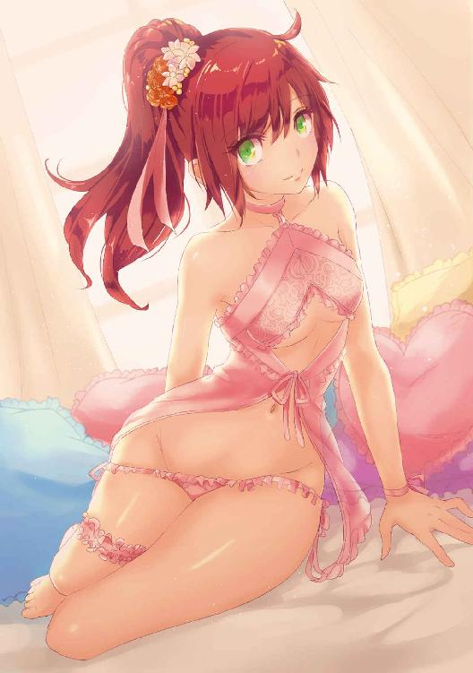
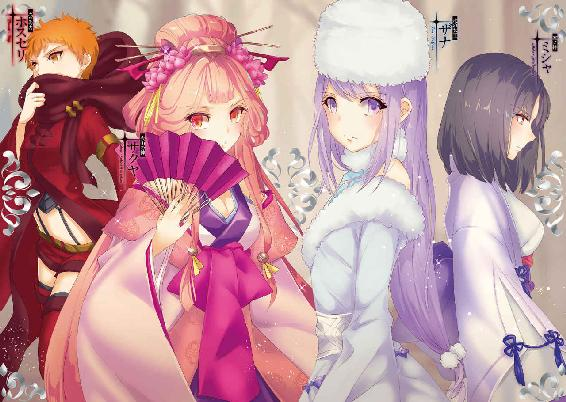
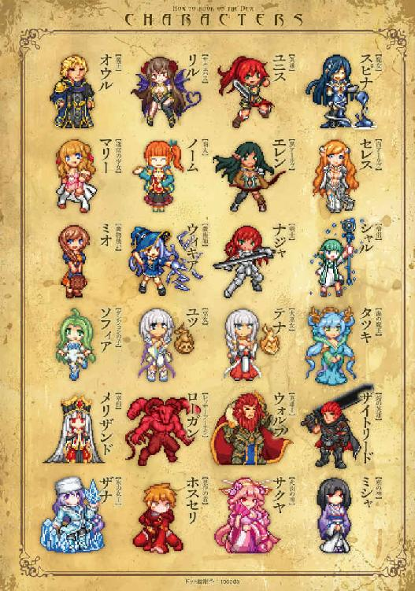
※本作品の全部あるいは一部を無断で複製・転載・配信・送信したり、ホームページ上に転載することを禁止します。本作品の内容を無断で改変、改ざん等行うことも禁止します。また、有償・無償にかかわらず本作品を第三者に譲渡することはできません。
※本作品は電子書籍配信用に再編集しております。
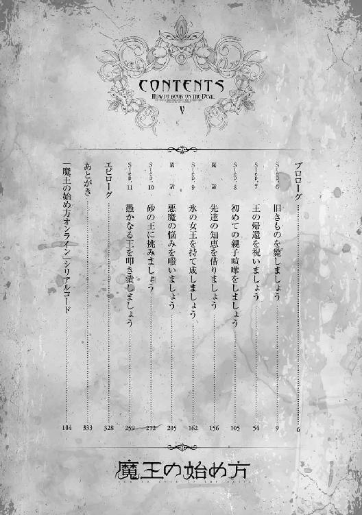
「やぁだ、やーあーだ！」
「ええい、聞き分けよ！ 選り好みしては大きくなれんぞ！」
幼子の舌足らずな声と苛立った男の声に、リルはふと食堂を覗いた。さてはまた、ソフィアが野菜でも残してオウルに叱られているのだろうか。子供でも食べやすいようにしっかり下拵えはしたつもりだったが、不十分だったかも知れない。
「既に調査は済ませてある。強い魔物の類はおらぬが、魔力は豊富だ。あの山脈を丸ごとダンジョンにすればお前はもっと大きく成長できるのだぞ！」
「やーあ！ あそこ、おっきな蛇いるもん！ 怖いからヤ！」
「だからオロチは退治したであろうが！」
だがリルが目にしたのは、地図を叩いてダンジョンの設計図を見せるオウルと、ぶんぶんと首を振って拒否するソフィアの姿だった。
「何してるのよ......」
「む。リルか。ちょうど良い、お前も......こら、待て！」
オウルの意識がリルへとそれた隙を見計らい、ソフィアはぱっと身を翻す。オウルが捕まえようと手を伸ばすと、彼の立つ床がくるりと回転して、魔王はバランスを崩しその場に尻餅をつく。
「聞き分けのない奴め......」
忌々しげに吐き捨て、痛む腰を擦りながら起き上がる頃には、ソフィアの姿はどこにもなかった。
「小さい子にあんまり怒っちゃ駄目よ、オウル」
「別に怒っているわけではない。だがそう余裕もないのだ。見よ」
オウルが腰を下ろす動きに連動して床がせり上がり、椅子となって彼の身体を支える。同時に茨が寄り集まって壁となり、その表面に絵を浮かべた。
複雑に折り重なった幾本もの線と線は、ダンジョンの地図であり設計図だ。それを見てすぐに地図であると認識できるのは、オウルの他には彼の右腕を長年続けてきたリルくらいのものであろう。
どこかバラの花弁を思わせるような美しい幾何学模様は、しかし所々が点線で描かれて綻びを見せていた。ダンジョンが未完成であるという証のそれは、よくよく見てみれば全体の三分の一ほどを占めている。
「回廊一つ繋げるのにもさっきのざまだ。これでは開発が遅々として進まん」
溜め息をつき、オウルは珍しく愚痴を口にした。
オロチとの戦いは、ソフィアにとって耐え難いほどに恐ろしいものであったらしい。これ以上ダンジョンを広げれば、あんな目に遭う。そう感じたソフィアは、ダンジョンの拡張を頑なに拒否していた。
「ソフィアの気持ちを考えれば仕方ないことだけど、そういうわけにもいかないものね。わたしとマリーで説得してみる」
「ああ、頼......」
その瞬間、オウルの座っていた椅子が消失して彼は再び尻餅をつく。
「ソフィアッ！」
怒鳴り声を上げるオウルからソフィアはきゃあと悲鳴を上げて逃げる。必死に笑いを堪えるリルはそれから三秒後に、無駄な努力をやめた。
１
「早急に戦力を整える必要がある」
そこは火山の神、サクヤが元々住んでいた試練の山の奥深く。
新たに岩肌を掘り抜いて作られた会議室に迷宮の主だった面々を集め、魔王オウルはそう切り出した。
「これが現在の状況だ」
オウルの言葉に応えるように、壁の表面がぐにゃりと歪んで図像を浮かばせる。
それは、地図だった。
大きく左側に突き出した細長い半島と、その根元を押さえるように隣接する二つの国。
そして、その間を区切るかのように横たわる巨大な山脈。
オウルたちが倒したヤマタノオロチが棲んでいた連峰だ。
「ここが我々が今いる国だ。ヤマトという」
「連なる山脈がまるで壁のように国の境を区切っていますでしょう？ ですから、山門と呼び称します」
半島を示してオウルが言えば、サクヤがそれを補足する。
「オロチがいなくなったとて、この門を越えるのは容易ではない。......が、不可能でもない」
「うむ。春が来れば、サハラの軍はこちらに攻め込んでくるじゃろう」
オウルの言葉に、予知の能力を持つ巫女であるテナが頷く。
ダンジョンの中で季節の移ろいを感じることは難しいが、外界では冬が訪れていた。
冬の山を越えるのは殆ど自殺行為に等しいが、春ともなればその限りではない。
雪解けと共にやってくる兵士たちの姿を、テナの予見ははっきりと捉えていた。
「サハラって？」
「隣国二国の南側。灼熱の大地に覆われた国と聞き及んでおりますわ。砂の原が延々と広がる不毛の地。故に、砂原の国です」
リルの素朴な問いに、サクヤが答える。
「ちなみに北側は逆に極寒の地。雪と氷に覆われた国。氷室の国と呼ばれています」
「それはまた、極端ねえ......」
南は灼熱、北は極寒。いずれにせよ住みやすそうとは言い難い。
「ヤマトは、サハラやヒムロとは比べ物にならぬ小国だ。攻められれば簡単に滅ぼされてしまうだろう」
山脈はヤマトを守る壁であるが、同時に閉じ込める檻でもある。
狭く小さな半島内だけでの繁栄を許されたヤマトと違って、サハラやヒムロは広大な土地を支配できているのだから、その国力には大きな差があった。
「ましてや僅かなこのダンジョンの手勢だけでは話にもならぬ。故に、我々は戦力を整えなければならぬのだ。それも、僅か一季節の間に」
「それは、難しいのでは......」
サクヤは山を司る神であり、人の世には疎い。
だがそれでも、オウルが無茶を言っているのはわかった。
「ああ。故に、お前たちに尋ねたいことがある。空間を司る神に心当たりはないか？」
「空間を司る神......ですか」
考え込むかのように反芻するサクヤに、オウルはうむと頷いた。
「我々の本拠地は別の大陸にある、という話はしただろう。戦力の大半はそこにあるのだが......」
オウルの治める国は大陸一つを丸ごと覆うほどに広がっている。大きさだけで言えばサハラ、ヒムロ両国を合わせたよりも更に巨大だ。
「俺がこの大陸に来た時には船で一ヶ月かかった。多少短縮はできるだろうが、それでも二週間。一度に運ぶのは百人程度が限界だろうな」
「往復で一月。三ヶ月で三百人を運んでもねえ。今から船を作ったって、作るだけで一季節すぎちゃうし」
「大海を百人の兵を乗せて渡れるような船を、一季節で作れるという方が恐ろしいのですが」
何気ない口調で呟くリルに、サクヤは改めて戦慄した。
根本的な国力、技術力が違いすぎるのだ。
「船なら、たつきが運ぼうか？」
「お前が？ どうやってだ？」
ふと、これまで暇そうに話を聞いていたタツキがぴっと手を挙げた。
「こう、ざばーん！ って」
海の神である彼女には、波を操る力がある。
タツキの手のひらの上で用意された茶が渦巻き、大きく波立って湯呑みを運び──
それは勢い余って湯呑みを跳ね飛ばし、壁に叩きつけて粉々に粉砕した。
「うん、転覆するわね」
「だめかぁ......」
断言するリルに、タツキはしゅんと項垂れる。
仲間になると宣言して以来、彼女は食事にしか興味がなかった以前とは打って変わって協力的になっていた。といってもその努力は大抵見当違いの方向に向かっていて、いまいち空回りしているが。
「いつもいらっしゃるあの赤い髪の......ユニスさん、でしたかしら？ あの方の力ならば、簡単に人を運べるのでは？」
「ああ。そこが話の要点だ」
サクヤの問いに、オウルは頷く。
「お前たちには馴染みのないことだろうが、我々は魔力と理力という異なる二つの力を使い、それぞれ魔術と法術という術を使う。どちらも遠く離れた場所に一瞬で転移することはできるが、それぞれ別の制約がかかってくるのだ」
「制約......と、申しますと」
「簡単に言えば、魔術には人数の制限はほぼないと言っていいが、大陸を隔てるほどの距離を飛ぶことはできぬ。法術では逆に、距離は全く関係ないが運べる量はせいぜい二、三人だ」
魔術では魔法陣を使うことによって、内部のものを一気に転移させることができる。
手間はかかるものの、陣を大きくするだけで数はいくらでも送ることができるが、消費する魔力の量は距離が伸びるほどに加速度的に増加する。
それに対してユニスの法術は距離も結界も無視するが、移動させられるのは彼女が抱えられるだけのものが限度だった。
「あちらを立てればこちらが立たず、というわけですのね」
「そこで、お前たちの使う術に期待しているのだ。霊力とやらは、魔力と理力が混ざり合ったものであるようだ。ならば双方の欠点を埋める方法があるやも知れん」
「と、申されましても......」
サクヤは困惑の表情を浮かべた。
「......道を司る道祖神の類であればいくらでもおりましょうが、あれはあくまで道を守護するもの。遠く離れた場所を繋げるなど聞いたこともございませんし。一日に千里を駆ける神もおりますけれど、万里を運ぶとなると......」
やはりそう都合良くはいかないか。オウルがそう思っていると、ふとサクヤはあることに思い当たったように顔を上げる。
「一柱......おりましたわ。オウルの望むことができるかどうかはわかりませんが」
「厄介な相手なのか？」
何やら浮かない表情のサクヤに、オウルは問う。
「厄介......そう、ですわね。関わりたくない、という意味ではまさにその通りかも知れません」
「なるほど。これはまた......」
サクヤの言葉に未来を読んで、テナもまた眉を顰める。
「もしかしてあいつ？ たつき、あいつきらーい」
それどころかタツキまでがそんなことを言い出した。
「一体どんな神なのだ」
オウルの問いに、サクヤは重々しく口を開く。
「彼の者の名は、サイノカミ────このヤマトで最も古い神の一柱です」
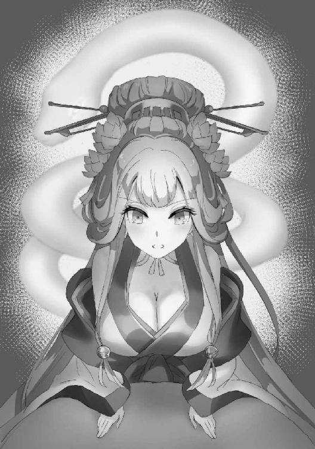
２
「......なるほどな」
関わりたくない。何故サクヤがそう評したのか。
行くと決め、どのような結果が起こるかを問えば何故テナが言葉を濁したのか。
それと対面した瞬間、オウルは全てを理解した。
「ある意味、リルの同類？」
「やめて。冗談でも」
からかうようなマリーの言葉に、リルが心底うんざりしたような口調で答える。
「おおきい......ですね」
あんぐりと口を開け、ユツがそれを見上げていった。
動物に例えるならば、それは蛇であろう。
暗く深い洞窟をみっしりと埋めるように入り込んだ白い大蛇。だがその頭に目はなく、身体にも鱗はなかった。それどころか口もなければ牙もなく、あるのは縦に伸びる亀裂のみ。
動物以外で例えるならば、簡単だ。
要するにそれは、巨大な男根であった。
〈我を起こすは何者ぞ〉
「喋ったぁぁぁ!?」
ゆっくりとその頭をもたげ、低い声を響かせる男根にリルは叫んだ。
「サイノカミよ。我が名は魔王オウル。貴様の力を借りに......いや、違うな。奪いに来た」
〈ほう〉
オウルの傲岸不遜な物言いに、サイノカミは愉快そうな声を上げる。
〈そは我が順わぬものと知っての言の葉か〉
「無論だ」
〈よかろう！〉
白い大蛇が洞窟から這い出して、高く高くそそり勃つ。
〈我が力と汝が力。どちらがより硬く太いものか、比べてくれよう〉
「いちいち言い方が卑猥なのよ！」
ヤマタノオロチをも貫いたリルの石火矢が轟音と共に火を噴いて、サイノカミに向かって放たれる。
しかし柱のようにそびえる大蛇は、ぶるんと揺れてこともなげにそれをかわした。
「マリーちゃん登って！」
ユツが己の尻に生えた狸の尻尾を引き抜くと、それは朱塗りの階段に転じてカタカタと音を立てながら天へ伸びていく。
「ありがと、ユッちゃん！」
マリーはそれに乗ってサイノカミの頭上を越えると、跳躍しながら四振りの剣を引き抜いた。
「ええーいっ！」
〈ぬるい〉
だが重力加速度を加えたその一撃は、サイノカミの頭にいとも容易く弾かれる。
まさか刃すら通らないとは思わなかったマリーは、そのままなすすべもなく落下した。
しかしその身体は地面に激突することなく、緩やかな弧を描いて減速しながらオウルの腕の中に収まる。
「えへへ、ありがと、オウルさま」
「世話を焼かせるな」
オウルがキューブを展開し、不可視の迷宮でスロープを作り上げていたのだ。
〈お返しだ〉
サイノカミの身体にびきびきと血管が浮き立ち、赤黒く怒張する。
そしてその身を大きく後ろにしならせると、思い切り叩きつけた。
「まずい！」
オウルは咄嗟にキューブに仕込んだ転移陣を起動し、その一撃を避ける。
僅か十数歩ほどの距離しか跳べないものだが、危機を回避するには十分な距離だ。
艶めくサイノカミの頭がしたたかに地面に打ち付けられた瞬間、大地が破裂した。
土と石とがそこら中に飛び散って、風と共に刃のように打ち付けてくる。
その余波くらいであればキューブによる壁が守ってくれたが、直撃を受けていたら即死だっただろう。
「ふざけたなりしてとんでもない強さね」
咄嗟に空中に逃げたリルは、地上に舞い降りながら石火矢を構え直す。
「マリーちゃんの剣でも歯が立たないなんて......」
傷一つないサイノカミの頭を見ながら、ユツは困ったように眉根を寄せる。
「あの頭、すっごいブヨブヨしてた。硬いっていうよりは弾力が凄いの」
マリーの言葉に、思わず女性陣の視線がオウルに集まった。
その感触に関しては非常に覚えがあったからだ。
「ええい、剣など弾けるか！」
己の下半身に集中する不躾な視線に、オウルは思わず怒鳴った。
「だがそうなると、奴に有効な打撃を与えられるのはリルの石火矢しかあるまいな」
「なんとかして動きを止めないと当てられないわ。あいつあんな図体で動きも素早いのよ」
無数に弾丸をばら撒く連弩であれば当てられるだろうが、そちらでは今度は威力が足りない。
あの皮を貫くのはやはり、貫通力に優れた石火矢しかないだろう、とリルは考える。
「でもあの動きを止めるって、どうやって？」
マリーの素朴な問いに、オウルもリルも押し黙る。
あれほどの巨体を止める手段を、二人とも持っていなかった。
「あの」
そんな中、不意にユツが声を上げる。
「ボク、動きを止められないか試してみます」
「何か策があるのか？」
「策、というほどのものでもないですけど......」
自信なさげに言いながら、しかしユツはこくりと頷く。
「......わかった。時間を稼いでやる、やってみろ」
詳しく作戦会議をしているほどの暇はない。
オウルはユツに任せることを決めて、一歩前に出た。
〈もう終わりか？〉
己自身が起こした衝撃によってもうもうと立ち込める砂煙の中から頭を覗かせ、サイノカミはそう問うた。
「これからだ。攪乱するぞ、マリー」
「うんっ！」
マリーは両手に剣を持って打ち鳴らす。途端、その刀身が炎を帯びた。
「刃は通らなくても、これならどう!?」
〈ぬうっ......！〉
流石に高熱は嫌なのか、サイノカミが僅かに怯んだ様子を見せる。
「ミラーハウス」
オウルの手にしたキューブがパタパタと展開すると、何条もの路となって放射状に広がっていく。
そのうちの一つがマリーの足元へと延びると、彼女の姿はまるで鏡写しのように他の路の先にも現れた。
〈小賢しいわ！〉
いくら姿を増やしてみせたところで、元々どこにいたのかは見えているのだ。
幻影を出すと同時に本体を消していたとしても、瞬時にそう遠くに行けるわけもない。
サイノカミはそう考え、頭を横薙ぎに払ってマリーたちの姿をまとめて叩く。
しかし手ごたえはまるでなく、不審に思ってサイノカミが動きを止めると、途端に炎を帯びた剣が何本も突き刺さった。
〈ぐぅっ!?〉
それらはどれも幻ではなく、実体のある痛みだ。
オウルがキューブで作り出した『ミラーハウス』は、その名に反して幻影ではなく転移を用いた迷宮魔術だ。幾本もの路の先に増えた姿は高速で転移を繰り返すことで映し出された像であり、映し出された者はその全てに存在し、同時にどこにも存在しない状態となる。
守勢に転じれば無事な路に逃げて攻撃を避け、攻勢に転じれば全ての路から同時に攻撃する。
ユニスの転移を使った戦法を、魔術で再現した代物だった。
〈おのれ、小癪な......！〉
だがそれでも、サイノカミに苦痛を与えこそすれ、打ち倒すには程遠い。
襲い掛かる熱に業を煮やしたサイノカミは、再び全身を怒張させて叩きつけようと身体を反らす。
「今です！」
途端、ユツの身体が何倍にも膨れ上がり、その豊満な双丘でサイノカミの身体をぎゅっと挟み込んだ。
〈ぬうっ!? これは......！〉
己の巨体に見合う大きさの女体を目にするのも初めてであれば、乳房で挟み込むなどという技を見るのも初めてで、サイノカミの身体は思わず硬直した。
「今です、リルさん！ ボクごと撃ってください！」
「え、いいの？」
「いいんです。あれはただの幻術ですから」
耳元から聞こえた声にリルが顔を向ければ、本物のユツはすぐ傍に立っている。
「よし。食らいなさい！」
リルの放った弾丸が巨大なユツの身体を貫くと、その身は木の葉の塊となって霧散した。
そしてそのまま、その奥にそそり勃つサイノカミに向かって突き進む。
〈このようなもので......我の身を貫けると思うなッ！〉
だがしかし、サイノカミは一際大きく怒張すると、ぶんと頭を振って弾丸を弾き返す。
「うそでしょ......」
空の彼方へ飛んでいく弾丸に、リルは呆然とした。
〈今のは、なかなか痛かったわ......〉
鎌首をもたげるようにして、サイノカミは大きく凹んだ頭をオウルたちに向ける。
〈そら、お返しだ〉
その縦に裂けた亀裂から、白色の炎が噴き出した。
「なにこれ!?」
どう見ても尋常な炎ではない。それはまるで油でも撒いたかのように地面に落ちても消えることはなく、それどころかどろどろと流れるようにして周囲に広がっていく。
〈我の浄炎を消せると思うな。その炎に触れたが最後......〉
「焼き尽くすまで消えないってわけね......」
〈いいや。確実に子を孕む〉
「ほんと最低ね!?」
ある意味、焼け死ぬより酷い話であった。
〈ちなみに言うておくが──〉
サイノカミの顔がオウルの方を向き。
〈男とて逃れられると思うな〉
「見境なさすぎでしょ!?」
オウルが妊娠したらどうなるのだろうか。
リルはちらりとそんなことを思わなくもなかったが、流石に試してみる気にまではならない。
「仕方ない、ここは一旦退くぞ」
こちらの最大の攻撃が通じないのでは勝ちようがない。
「待って」
そう判断するオウルを、マリーが止めた。
「わたし、倒せるかも知れない」
「なんだと？」
白い炎はゆっくりと、オウルたちを囲みつつある。
逡巡している時間はなかった。
「やってみろ」
「ありがと、オウル様。......開け、天門！」
マリーが空に手を掲げると、彼女の右目が赤く輝き指先に四角い紋様が現れた。
曲線を基本とする魔術円に対し、直線で構成されたそれは法術陣と呼ばれる図形だ。
「来たりませ。猛きもの、折れたる剣の守護者、比類なき英霊よ──」
マリーの金色の髪が赤く染まり、膨れ上がる。
髪飾りがぷつりと千切れて、炎のような髪が広がる様はまるで獅子の鬣のよう。
マリーは三振りの剣を鞘に収め、一刀だけを掲げ持った。
〈何をする気かわからぬが、この身を切り裂けるものなどありはせぬ。たとえそれがヒヒイロカネの剣であろうとな〉
明らかに雰囲気の変わったマリーに、しかしサイノカミは傲然と言い放つ。
己の硬さと持久力には、絶対の自信があった。
一切の力みも工夫もなく、マリーの剣は静かに振られ。
そして次の瞬間には、白い炎もサイノカミも全て両断されていた。
〈ば、か、なぁぁぁぁぁ！〉
半ばから二つに分かたれて、サイノカミはどうと地面に倒れ伏す。
「戻りませ、『竜殺し』ウォルフディール」
言って剣を鞘に収めた途端、マリーの目と髪は元に戻り、彼女はその場にくずおれる。
「やっぱり、ウォルフおじさんを降ろすのは一瞬でもしんどいね」
慌てて抱き留めるオウルに、マリーはへにゃりと笑んで言った。
「お前、どうして」
「ユニスのお父さんだし、急に頼んでも力を貸してくれるかなって思って」
マリーの答えは、オウルの問いが求めたものではなかった。
彼女が巫術を学んでいるのは知っているし、メリザンドを通じて『不死身』の力を宿したのだから、同じ方法でウォルフの力を使えても不思議ではない。
「何故、あれが竜だと思った？」
「え、だって、蛇みたいだったし、火も噴いてたじゃないですか」
改めて問えば、マリーは当たり前のように答える。
だが、オウルはそこに思い至らなかった。
何千という魔を従え、何万という獣を知るオウルでさえだ。
ただの偶然か......それとも。
自分を凝視するオウルに、マリーは不思議そうに笑みを浮かべた。
３
「それにしても、殺しちゃってよかったの？」
半ばから両断されたサイノカミの死骸を横目に、リルはオウルに尋ねた。
オロチもそうであったし、蛇の類は頭を潰してもなお動くこともある。
警戒していたがサイノカミは全く動く気配を見せず、どうやら完全に死んだようだった。
「ああ。空間を司るといっても、こいつ自身が転移の力を持っているわけではない。むしろそれを阻害しているもの。故に塞の神だ」
「ふうん。じゃあ、オウルが奪いに来たっていうのは......」
「この洞窟のことだ」
オウルはサイノカミが塞いでいた洞窟を指差す。
「どのような形で空間に類する力を持っているかはわからん。だが......」
「その力を手に入れる方法だけはわかる。ってことね」
うむと頷き、オウルは洞窟の壁にキューブを連結させる。
剥き出しの石壁は見る間にレンガ造りへと変わり、光が灯って中を見渡せるようになった。
「門だ」
するとマリーが前方を指差して、声を上げる。
魔術光によって照らし出されたのは、洞窟に似つかわしくない巨大な両開きの扉だった。
「ふむ......」
ダンジョンを探索する際、扉というのは最も警戒すべきものの一つだ。
取っ手や扉自体、扉の向こう側の部屋、意表をついて扉の手前の床などいくらでも罠を仕掛けることができる。
「破壊しろ、リル」
とはいえダンジョンそのものを掌握するダンジョンマスターたるオウルにとっては関係のない事だ。
扉の向こう側までを自分の領域に収めてしまい、そこに罠を設置できるような隙間がないことは把握しているし、門自体に罠があっても破壊してしまえば問題ない。
「オウルさまが開けた方がいいんじゃないかな」
「何？」
だがそれに、マリーが異を唱えた。
「なんとなくだけど」
「なんとなくとはなんだ。理由を話せ」
「わかんない」
問うても、マリーはふるふると首を横に振るばかり。
リルやユツの顔を見ても、二人とも不思議そうにしているばかりでマリーの意図を測りかねているようだった。
「......まあ良い。下がっていろ」
破壊すれば無闇に音を出すことになるし、万一の時はこの扉を盾にして逃げることもできる。
壊さずに通るのも別段おかしな選択肢というわけではない。
オウルが両腕を門にかざすとキューブがパタパタと展開して膨らみ、彼の背後に人型を成して立つ。それはオウルの動きに沿って門に手をかけると、ぐっと押して開いた。
「罠は......ないようだな」
大きさ故か多少の開きにくさは感じたものの、鍵も閂もない扉はあっさりと開く。
その向こうには罠もなければ番兵もおらず、それどころか部屋すらなくただただ通路が伸びているのみだ。
「いくぞ。番人は倒したとはいえ、何が出てくるかわからん。警戒は怠るな」
「はいっ！」
「わかりました」
マリーが気合いを込めて頷き、生真面目な表情でユツが返事をする。
だが二人の思いとは裏腹に、探索は酷く退屈なものだった。
洞窟の中には敵や罠どころか分かれ道一つなく、ただただまっすぐに通路が続くのみ。
緩やかな下り道を、オウルたちは黙々と進んでいく。
「ねえ、これって......」
リルが何かを言いかけたその時。
「部屋だ」
マリーが声を上げ、通路の先に部屋があるのが見えた。
「何もないですね......」
部屋の中を覗き見て、ユツが呟く。
彼女の言う通り大きな部屋はがらんとしていて、ただ通路が二つ、左右に続いているだけだった。
「妙な構造だな。罠もなく、守衛を集めるでもなく、ただ部屋だけがあるとは」
これならただの三叉路で良いのではないか、とオウルは思わずにいられない。
ただの天然の洞窟でないことは明らかなのだ。
もしそうであれば、もっと細かくいくつも横穴が伸びているものだ。
天然のものでないならばそこに何らかの意図が込められているはずなのだが、それがどうにも読めない。
「まあ良い。さてどちらに進むか......」
試練の山でも似たような場所があったが、あの時と違って今回の戦力は乏しい。
二手に分けるような愚策は避けるべきだ。
「進む必要はないと思う」
オウルが悩んでいると、リルがそんなことを言い出した。
「どういうことだ？」
「何かあるとしたら多分この部屋だから。進んでも、どっちも同じだよきっと」
「何故そんなことがわかる」
「だって、ここが子宮だもの」
リルに言われ、遅まきながらオウルは悟る。
守っていたサイノカミが男性器の形をしていたのなら、この洞窟は女性器。
今まで通ってきた通路は膣で、この先は卵管。
とすれば最初の門は処女膜か。道理でオウルに開かせたわけだ。
しかし何故、それがマリーにわかったのか、とオウルは疑問に思った。
己の身にも宿しているものとはいえ、子宮とは要するに内臓だ。外から見えるものではない。
オウルには多少の医学の心得があるし、リルはサキュバスなのだから知っていても不思議はない。
だが、マリーにはそのような知識はないはずだった。
そもそもここに来るまでリルですら気づかなかったことに、マリーは入り口で気づいていたということになる。
「その通りだ」
パチパチ、と乾いた音と共に、オウルは女の姿に気がついた。
気がついた、と言う他なかった。
隠れる場所など何もない部屋の奥に、その女は立っていた。
だが突然現れたわけではない。ずっとその場にいるのに気づかなかったのだ。
「貴様は何者だ」
「何者だ、とはつれぬことを言う」
真っ白な女だった。だがそれはメリザンドや英霊たちの白さとは違う。
肉としての美しさを伴った白だ。
肩で切り揃えた艶やかな黒髪に切れ長の瞳。
キモノと呼ばれるヤマト装束に覆われた身体は露出どころか体型すら覆い隠しているというのに、それでもなお匂い立つような色香があった。
「我を殺し、あまつさえ女にせしは汝であろうに」
「なんだと......？」
くく、と喉で笑う美女の言葉に符合する相手は、一人しか思い浮かばない。
だがそのあまりにも変わり果てた姿に、オウルは自分自身の考えを疑う。
「我は塞ノ神。この洞の守護にして主人よ」
だがサイノカミはその考えを裏付けるようにそう言った。
「殺しても死なぬ、というのか......」
「いいや。確かに汝らは我の半身を殺した。だが性とは元来対なるものであり、かの姿は我の一つの側面でしかない」
「つまりマリーがおちんちん切っちゃったから、女の子になっちゃったってこと？」
「正しくはないが......まあ、然様な解釈でも良い」
リルの言葉に若干呆れたような口調で、サイノカミは答える。
「肝要なのは......汝が欲する力を、我が振るえるということよ」
「なんだと？」
「その白い肌、金の髪、高い鼻に青い瞳。およそこの地の者ではあるまい。察するに、己の国へと帰りたい、といったところであろう」
「まあそんなところだ。ただし、帰るだけでなく再びこの地に戻ってくる必要がある」
オウルの言葉に、サイノカミは深々と頷いてみせた。
「我ならばそは能うだろう。汝の望む数だけな」
「対価はなんだ」
オウルは直截に聞いた。
半身とはいえ殺された者が、わざわざ何の見返りもなく協力を申し出に現れるわけがないからだ。
「対価？ 妙なことを言う。言うたであろう。我は祀られぬ神、順わぬものと。糧を得るために人の身の願いを叶えることなどありはせぬ」
ならばやはり戦うつもりか、と身構えるオウルたちに、
「だが我が汝のモノとなるのなら、話は別だ」
サイノカミは薄く笑んでそう答えた。
「俺のものだと？ どういう意味だ」
「そのままの意味よ。古来より、男が女を己がものとする方法など、一つしかあるまい？」
そう囁くサイノカミの吐息は、どこまでも艶めかしい。
「......お前を女に数えていいのか？」
しかしオウルの脳裏に浮かぶのは、先程殺した雄々しくそそり立つ男根の姿だ。
「笑止。我ほど女としてある女も他におるまいよ」
確かに、目の前にいるサイノカミの姿に男性らしさは微塵も見受けられない。
なのに白蛇の姿と重ねてしまうのは、その持つ雰囲気が全く同一のものだからだろう。
「生きとし生けるものは皆、男としての性質と女としての性質を持っておる。性別とは、ただそのどちらが表に現れているかにすぎぬ」
「ほう。では俺にも、女の部分があるとでもいうのか？」
「うむ。全ての生き物は、父と母とから生まれる故にな」
サイノカミの言葉に、オウルはむっと唸る。確かに筋は通っている。
「しかして我の雄は、汝らが殺した。残りし我は純粋な雌。この世で最も全き女というわけだ」
「......よかろう」
オウルが足を鳴らすと、彼の傍らの床が盛り上がり、石の寝台が出来上がる。
表面をさらりと撫でれば、それはたちまち天蓋付きの柔らかなベッドになった。
「まって、オウル」
寝台へと向かおうとするオウルを、リルが引き止める。
「多分、あれ......」
「わかっている。お前の同類ということだろう」
男が女を己のものとする方法は、確かに交わり屈服させることだろう。
だが女が男を手に入れる方法もまた、交わりによって己の身体に溺れさせることなのだ。
つまりはこれから始まるのは、鋭い剣を柔らかな肉に持ち替えた戦いに他ならない。
「案ずるな。お前の相手で慣れている」
「でも......！」
リルとの交わりは、彼に危害を加えないよう契約で縛られた上でのものだ。
サキュバスが本気で害意を持ち、搾り殺そうとすればいかにオウルとて耐えられるかどうか。
無論オウルとてそれは承知しているが、しかし退くわけにはいかなかった。
「待たせたな」
「何、構わぬ」
オウルはリルの制止を振り切り、既にベッドの上で待ち構えていたサイノカミのもとへと赴く。
「これからたっぷりと楽しませてくれるのだろう？」
しなを作るように寝台の上に横たわり、サイノカミは着物の帯をするりと解く。
胸元の合わせ目が崩れ、その隙間からちらりと覗く真っ白な肌は、オウルをして息を呑ませた。
似たような存在でも、肌を露わにして色香を振りまくリルとは全く逆の発想。
隙なく全身を覆い、身体の線さえ隠した着物からちらりと覗き見える女の肢体は、男の欲望を大いに刺激するものだった。
「無論だ」
オウルはサイノカミを組み敷くと、柔らかにたわんだ合わせ目からすっと手のひらを差し入れる。
「むっ......」
その乳房の手触りに、オウルは思わず呻いた。
この世のものとは思えぬほど柔らかく、手に吸い付くような肌。
大きさこそ手のひらにすっぽりと収まってしまう程度だが、それ故にいつまでも手の中で弄んでいたくなるような、そんな柔らかさだった。
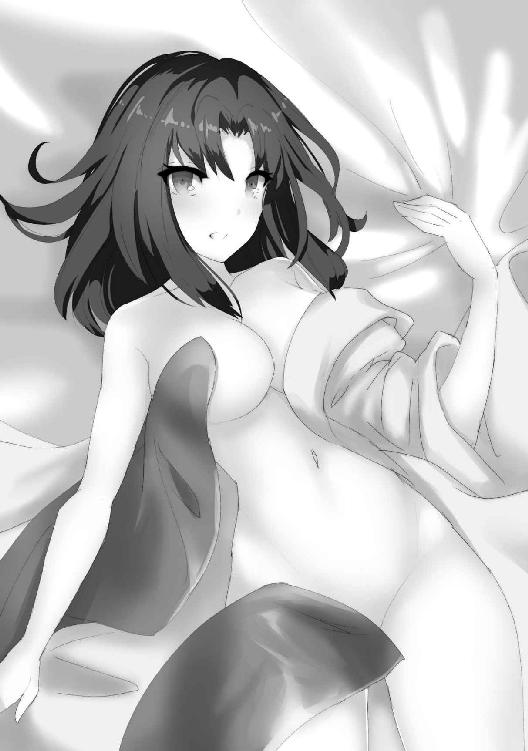
「いきなり入れても構わぬのだぞ」
「そういうわけにいくか」
耳元で囁くサイノカミに、オウルはそう答える。
半分は相手の出方を探るためだが、しかしもう半分はオウル自身の矜持だった。
「んっ......良いぞ。あぁ......」
襟を更に開いて胸元に口づけ、柔らかな肉を指先で弄びながら先端を撫で擦れば小さな蕾は硬く膨れていく。
ほう、と甘く吐息を漏らすサイノカミの肌は上気して薄く桃色に色づいて、着物の裾を割り開き脚の間に指を這わせれば、滴る蜜がくちゅりと音を立てた。
リルに一瞬目を向ければ、彼女はこくりと頷いてみせる。
淫魔の見立てでもサイノカミは間違いなく、感じている。演技や擬態ではない。
「いくぞ」
「ああ......汝の太く硬いもので、我を貫いてくれ」
乱れた着物はあえて脱がさぬまま、オウルはサイノカミの中心に己自身を押し当てる。
「むっ......？」
だが、そこはたっぷりと潤いを帯びているというのに、何故かそれ以上侵入することができなかった。入り口が狭いのか、先端が僅かに差し掛かったのみで強い抵抗感がある。
「汝の魔羅は我には大きいと見える。何、構わぬから一気に突き入れるがいい」
妙な違和感を抱きつつも、オウルはサイノカミの腰を掴んで力を込める。
抵抗があったのは入り口だけで、そこを越えてしまえばサイノカミのそこは一気にオウルの肉槍を根元までするりと咥え込んだ。
同時に走る衝撃に、オウルは目を見開く。
サイノカミの膣内は驚くほどに温かく、そのひやりとした肌との温度差もあって火傷してしまうのではないかと思うほど。
膣壁はきゅうきゅうと強くオウルのものに絡みつき、ざわざわと蠢くようなその表面の感触はまるで百人の女に舌で奉仕されているかのよう。
ただ挿入しただけだというのに、腰が砕けてしまうのではないかと思うほどの心地よさだった。
リルとのまぐわいで鍛えていなかったら、それだけで放出していただろう。
「ほう。我に入れて精を吐かぬとは」
心の底から感嘆した、といった表情で、サイノカミ。
「貴様......」
彼女をねめつけ、オウルは絞り出すように声を出す。
「これは、どういうことだ」
その視線の先、彼らの性器が結合している部分。
そこには、朱が滲んでいた。
「どうもこうも見ての通り。我が生娘ではおかしいか？」
サイノカミは当然のようにそう答えた。
「とてもそうは見えんからな」
その態度といい、滲み出る色香といい、とても処女とは思えない。
オウルはおろか、リルですらそれを見抜けてはいなかった。
「さもあろう。我は境界の神であると同時に、性愛と豊穣の神でもある。いわば生まれついての淫婦だ。だが、淫婦にとて初めてというものはある」
彼女の言葉を裏付けるかのように、サイノカミの膣内は痛みに怯む様子もなく、オウルの肉塊を締め付ける。
「サイノカミとしての我は長く在るが、雄としての我を殺しこの洞へと入ってきたのは汝が初めてよ。故に雌としての我もまた、男を知るのはこれが初めてだ」
サイノカミはオウルの首に腕を回すと、耳元をくすぐるように囁いた。
「さあ。我を二つの意味で女にした愛しい汝よ。夜はまだ始まったばかり。しっかりと楽しませておくれ」
４
薄暗い洞窟の中、肉のぶつかり合う音と水音が響き渡り、雄と雌の交わり合う濃密な淫臭が立ち込めていた。
「あぁ、そうだ......そこを、もっと抉ってくれ、あぁっ......」
もはや着物はかろうじて袖が腕に纏わりついているのみで、衣服としての用をなしていない。
ほっそりとした喉からツンと上を向いた胸元、滑らかな腹の下までを露わにして鳴くサイノカミの肌には珠のような汗がいくつも浮かび、紅潮した頬と快楽に蕩け潤む瞳がオウルを見つめる。
「出すぞ......ッ！」
「ああ、来て、奥に、汝の精を注ぎ込んでくれ......っ！」
オウルの肉塊が彼女の中で膨れ上がれば、打てば響く鐘のように絶妙なタイミングで締め付けてくる。生まれながらの淫婦と称するだけあって、先程まで処女だったとは思えないほどの乱れ振りだった。
ぎゅうと締まる媚肉をこじ開けるようにして無理やり奥まで腰を押し込むと、下がってきた子宮が子種をねだるように先端に口づける。全身で男を求めるかのようなその動きに、オウルは堪らず精を解き放った。
「あっ......う、あぁん......んっ、あ、良い、ぞ、ぉ......っ！」
どくり、どくりと断続的にオウルが白濁を吐き出す度に、サイノカミは気をやって身体を震わせる。その度に彼女の膣内は精液を絞り出すようにうねり締め付けて、その快楽によってオウルは更に射精する。
まるで振り子のように快感を行きつ戻りつ交歓しながら、二人は長い長い絶頂の末に力を失い、重なり合って崩れ落ちた。
「これで、満足したか......？」
「ああ......汝の逸物は素晴らしいな。これだけ出してなお、我の中で脈打っておる」
ぐったりとして横たわるサイノカミに問えば、彼女は嬉しそうに笑って膣口に力を込めながら、ゆるゆると腰を動かし始める。
まずい、とオウルの頭の中に警鐘が鳴り響いていた。
演技でも擬態でもなく、サイノカミは間違いなく感じ、何度も気をやっている。
だがその精力と体力はまるで無尽蔵のようで、どれだけ絶頂に至らせ、精を注ぎ込んでも、更にもっととねだってくる。
そしてオウルもまた、それに応えることをやめられなかった。
魔術的な......あるいは、何らかの未知の術のようなものをかけられているわけではない。
純粋に、サイノカミの肉体が気持ちよすぎるのだ。
一突きする度に飢えにも似た欲求はいや増すばかりで、どれだけ交わっても飽きるということがない。その柔らかな身体を組み伏せ、犯し、征服するのはまるで麻薬のような快楽だった。
これが並の男だったなら、二、三度も射精に至れば精根尽き果て、倒れ伏してしまっていたことだろう。だが不幸なことに、ここまでの通路を己のダンジョンへと作り替えてきたオウルには試練の山から伸びる魔力の道がある。
地中の魔力をたっぷりと内包した赤い溶岩は殆ど龍脈のようなもので、オウルに無尽蔵の体力と精力を与える。だがそれが、今に限っては仇となっていた。互いに無限の体力を持つ者同士の交わりは、そのまま無限に続いてしまう可能性があるのだ。
「ちょっと、もう十回はしたでしょ？ いつまでやってるつもり!?」
それを察し、流石にリルが割って入った。
サイノカミの助力を得られないのは問題だが、オウルが完全に囚われるよりはマシだ。
「何、永遠になどというつもりはない。我が満足するまでのことだ」
「あとどのくらいで満足するのよ」
リルが腰に手を当て居丈高に尋ねると、サイノカミはうむと頷いて応える。
「一年だ。普通は毎夜相手にしてもらうところだが、この男であればこのまま丸一年ずっと、目合い続けていられそうだな」
「馬鹿じゃないの!?」
その答えに、リルは怒鳴る。
「わたしが干からびて死んじゃうじゃないの！」
「ふむ......では、汝も混ざるか？」
「えっ、いいの？」
「いいわけあるか、愚か者！」
声を弾ませ懐柔されかかるリルに、オウルは思わず叫び返した。
胡乱なリルの言葉は計算でも何でもなく素での反応だろうが、それがかえってオウルの精神を呪縛めいたサイノカミの魅力から多少なりとも逃す。
「一年だなどと、そんな話は聞いておらぬ。付き合いきれるか」
「ほう。我の身体をもう味わいたくないと申すか......？」
すっと目を細め、悲しげに問いながらサイノカミは自然な動作でオウルに改めて己のその裸身を晒す。途端、オウルの心に彼女を押し倒し、めちゃくちゃに犯してしまいたいという欲求が強く湧き上がった。
「俺にはやらねばならぬことがある。一年も悠長にしている暇はない」
それを押し殺して答えると、サイノカミは驚いたように目を見開く。
「我が情愛をはね除けるとは。なんという意力の強さよ」
「お生憎様でした。淫魔の類には慣れてるのよ」
ぎゅっとオウルの頭を抱きしめながら、リルは舌を出してみせる。
後頭部を包む柔らかな肉の感触に、オウルは逆効果だと内心で叫んだ。
「淫魔......異国にはそのようなものもいるのか。だがしかし、言うたであろう。我はこの世で最も全き女。即ち我との交合を諦めるということは、全ての女との交わりを諦めるに等しい。情多き男ほど逃れられるものではない」
「エッチな男ほどやめられないってことか」
「オウルさますごくえっちだもんね」
「確かに......」
リルの言葉にマリーが同意し、ユツまでもが深く頷く。
怒鳴ってやりたいところだったが、オウルにもそれほどの余裕はなかった。
よくよく考えてみれば、これは極めて深刻な事態だった。
魅了の術や何らかの能力によってオウルの心が囚われているのならば、それを解除もできるだろう。だがしかし、その根源がオウル自身の心にあるとなると話は別だ。
リルを、マリーを、全ての情を交わした女たちを心の底から手放すつもりがなければ、サイノカミからは離れることができないということなのだから。それはオウルにとっては到底、許容できることではなかった。
それはリルたちの助力によって無理やり引き離されるのでも同じだ。
妻たちを外部の力によって失うなどというのは、オウルにとってそれこそ最も忌避すべき出来事だ。それはただ象徴的な出来事に終わらず、オウルの魂を傷つけ、損なうであろうという予感があった。
ヤマタノオロチが魂さえ噛み千切ったように、この地の神というのは恐らくそういう力を持っているのだ。相手に敵意がないとしても、油断すべきではなかった。オウルは今更の段になって、それを思い知った。
「......わかった。お前の気が済むまで相手してやる」
唯一の救いと言えるものはただ一つ、サイノカミ自身が言うようにそれが永遠に続くものではないということだ。彼女が満足さえすれば、それで終わる。
「ああ。好きなだけ我を犯すが良い。その獣欲を存分にぶつけておくれ」
サイノカミは嬉しげに目を細める。害意や敵意は本当にないのだろう。
だからこそ、オウルは彼女が障害となりうることを見抜けなかったのだ。
「後ろから犯してやるから、尻をこちらに向けろ」
「ほう。まるで獣の交尾のようだが......それはそれで悪くない」
サイノカミはするりと着物の袖から腕を抜くと、一糸まとわぬ姿となって小ぶりな尻をオウルに向ける。オウルはそれを両手で鷲掴みにすると、一気に突き入れた。
「なっ......？」
その瞬間、サイノカミは大きく目を見開くと、戸惑いの声を漏らした。
「ま、まて......そこは、違うぞ......？」
オウルが剛直を突き入れたのは性器ではなくその上の窄まり。
不浄の穴だったからだ。
「何が違うものか」
「ひぐぅっ！」
オウルが抽送を繰り返すと、サイノカミは大きく声を上げる。それは先程までの善がり声とは、全く別種のものだった。
「そら、こんなにひくひくと蠢いて喜んでいるではないか」
一連の交わりで昂りきったサイノカミの身体は、精液と愛液にまみれたオウルの肉槍を易々と呑み込み、否応なく快楽の階段を登らされていく。
だがそこからは、先程までどれだけ乱れても失われていなかった余裕のようなものは失われていた。
「ちっ、違うぅっ！ こんな、こんな場所で、我は......っ！ あぁっ！」
サイノカミの顔と表情は戸惑いで満ち、混乱のまま彼女は喘がされ、鳴き声を上げさせられる。
「安心しろ。お前は先程生まれたばかりといったな。ならば何かを食しているはずもなく、腸の中とて綺麗なものだ」
「そういうっ、問題では、う、あぁっ！」
逃げ出そうとするサイノカミの両腕を引いて、オウルは彼女の直腸を犯す。
全き女というだけあって、その腕力は神といえどただの女のそれだった。
男であるオウルに敵うわけもなく、逃れることもできずにされるがままに陵辱される。
「ああああっ！ だめ、だめえっ！」
「いい声で鳴くようになったじゃないか」
尻穴の感触は、膣内とは全く違った。
オウルの動きに合わせて如才なく締め付け搾り取ってくる前の穴と違い、後ろの穴はサイノカミ自身さえ感知できない動きで震え、窄まり、素直な反応を見せてくれる。
「だめだ、こんなもの、交わりでは......ひぅんっ！」
首を振って嫌がるサイノカミの膣口に指を入れて犯してやれば、彼女のそこは喜びに震えながらよだれを垂らして咥え込む。
「あああああああっ！」
そうしながら尻穴を抉ってやれば、絶叫のように声を上げ、潮を吹き出しながら、サイノカミは絶頂に身体を震わせた。
たとえ神であろうとも、その持つ力は無限ではない。
これはサクヤとの付き合いでわかっていたことだった。
彼女ほどの力を持つ者であっても運動をすれば人間同様に疲れるし、食べたり眠ったりといった行為が必要だ。
ならばサイノカミの無尽蔵の体力はどこから来ているのか。
それは彼女の司るものに関係しているのではないかと、オウルは推測した。
境界、性愛、豊穣。
サイノカミが司る三つのものは、一見結びつかないように見えてあるもので結ばれている。
それは妊娠と出産だ。
出産とは死と生の境であり、性愛の結果であり、そして豊穣そのものだ。
ならば性行為であっても、子を成すことのできない種類のものであれば回復は不可能なのではないか。
オウルのその読みは当たっていたらしい。
尻を犯し続けているうちにサイノカミの声は段々と力なく、その動きは緩慢なものとなり。
「もう、無理だ......勘弁してくれ......」
更に三度ほど精を吐き出す頃には、サイノカミは寝台の上に突っ伏して、息も絶え絶えにそう降参を告げたのだった。
５
「変態......変態だ......」
ぐしぐしと泣きべそを掻きながら、サイノカミはしきりにそう呟く。
「尻の穴に胸の間、口の中に髪、挙句の果てに脇だの膝だの......汝らの文化はどうなっておるのだ......」
どうやら彼女の知識にあるのは、子作りのための真っ当な性交だけであったらしい。
性器以外の場所を使って精をかけられる度に大いに狼狽し、未知の感覚に困惑していた。
「情けないわねえ。わたしなら、耳や鼻の孔だって大丈夫なのに」
「それは俺の方から願い下げだ」
呆れた口調でリルが言うが、流石にそれはオウルの許容できる範疇からも逸脱していた。
「さて、ではお前の力を貸してもらおうか」
「......無理だ」
「なんだと？」
ふるふると首を振るサイノカミに、オウルは顔を顰めた。
口約束とはいえ、サイノカミははっきりと力を貸すと言った。
オウルほどの魔術師を相手に結んだ約定は、神といえどおいそれと破れないはずだ。
「貸したくとも力が足らぬ。言うたであろう。我は順わぬものであり、祀られぬ神なのだ。異国と道を繋ぐような大それたことはできぬ」
「話が違うだろう。お前はできると言い、それは嘘ではなかったはずだ」
嘘であれば、リルはそれを見抜く。そういった部分に、人と神とで違いはない。
「無論だ。祀られれば、その程度の力はある」
「祀るとはどういうことだ？」
言葉の意味自体はわかる。敬い、信仰するということだ。
だがその具体的手段まではわからない。
「言ったであろう。一年まぐわうことだ」
「ああ......」
しかしそれも、サイノカミの簡潔な説明に氷解した。
なるほど性愛の神への敬意を表するのに、それ以上の方法はないだろう。
「だがそれは困った話だな......」
単なる性愛ではなく、子を成すというニュアンスを多分に含んだ性愛だ。
オウルのような男でなくば毎夜相手にすると言っていたが、逆に言えばどれだけ濃密に交わろうと一年という期間は短縮できないということでもある。子供ができるかどうかは、性交の密度とは関係ないからだ。
ということならば、複数の男をあてがっても無意味だろう。リルのような淫魔であれば相手が多ければ多いほど掠め取れる生気も増えるだろうが、女が同時に孕める子の数は相手の男が増えたとて変わるものではない。
つまり何をどうしても、一年の歳月が必要ということだった。
「......他の方法はないのか？」
本来ならばそれでも望外の条件なのだろうが、一季節後には敵が攻めてくるというこの状況では役に立たない。
「お前は境界と性愛、豊穣の神なのだろう。それは出産という軸で共通する一方、それぞれが別の側面もある。性交以外に力を得る方法はないのか」
「......なくは、ない」
オウルの問いに、サイノカミは難しい表情で答える。
「いや......正確には、あったと言うべきであろうな」
そう呟くサイノカミの表情は、酷く沈鬱なものだった。
「どういうことだ？」
「そもそも我がこれほどまでに力を失ったのは、長い間誰にも顧みられることがなかったからだ。──それこそ、我自身名を忘れてしまうほどにな」
「サイノカミというのは、名ではないのか」
オウルが問うと、サイノカミは頷きを返す。
「其は汝らで言うなれば、役職のようなものよ。我を指す号ではあるが、我自身の名ではない」
「サクヤにでも知らないか聞いてみる？」
リルが言うと、サイノカミはほうと片眉を上げた。
「汝らはコノハナサクヤ姫と知己であったか。だが、あの者も我の名など知ってはおるまい。まだ年若き故にな」
「一万四千歳で若いって、どういうスケールよ......」
そういうサイノカミ自身は、一体どれほど生きている神なのか。
ここまで行くと驚きよりも呆れの方が強かった。
「......マリー」
「な、なに？」
突然オウルから名を呼ばれ、話の流れに参加もできずただ聞いていたマリーは驚きに目を瞬かせる。
「こいつに名をつけるなら、なんとする」
「えっ？」
更に投げかけられた言葉に、彼女は困惑した。
「我に名をつける、だと......？」
その困惑は、マリー以外の面々も同様だ。
サイノカミは怪訝そうに眉を顰め、オウルの言葉を反芻する。
「この世の誰も知らず本人も覚えていないのなら、そのような名は無いのと同じであろう。名のないものを呼ぶ時どうするかなど、決まっておる。名付けるのだ」
「神の名とはそのような単純なものではない。存在の本質を示し、根幹となるものだ。犬猫ではあるまいし、疎略に決めて意味などあるものか」
よほど受け入れ難い話なのだろう。
サイノカミは不機嫌そうな声で唸るように吐き捨てる。
「わかっておる。俺とて考えもなしに言っているわけではない。それで、どうだ？」
「う────ん......」
再びマリーに視線を戻せば、彼女は頭を抱えて考え込んだ末に、ぽつりと名前を口にした。
「......ミーシャ」
「思いっきりフィグリア風の名前じゃないの！」
「こちらではあまり聞かない名前ですね」
即座にリルがツッコミを入れ、ユツもまた困ったように笑いながら控えめに同意する。
「それ、だ......」
だがサイノカミは大きく目を見開き、呆然としながら掠れる声で呟いた。
「いや......違う。それではない。我の名はそれではない。だが、今の我を言い表すにはむしろ元の名よりも相応しい......何故だ？」
ぶつぶつと、うわ言のようにサイノカミは自問する。
「女の子の名前だからじゃない？ あのおちん......蛇の姿だったら、似合わないでしょ、そんな名前」
「そうか！」
素朴にマリーは指摘し、正しいと同時に間違っているその答えからサイノカミは正答へと思い至る。
「半身を失った故に、名も半分に分かたれるは道理。ミーシャ......御石神！ それが我の名だ！」
サイノカミがそう叫んだ瞬間、彼女の身体からぶわりと何かが溢れ出た。
目には見えず、音もなく、熱もなければ匂いもないが、しかし風にも似た何らかの圧力が存在しているのをその場にいた全員が感じる。
サイノカミの爪先から髪の一本一本に至るまでが力に満ち満ちて、全身が光り輝いているようにさえ感じられた。
その姿に、オウルは今更テナがヤマタノオロチのことをヤツと呼び続けた理由を悟る。
名というのは、神にここまでの力を与えるものなのか。
「小さき娘よ、感謝する。我に名を与えてくれたことを」
「う、うん」
サイノカミはゆっくりとした動作でマリーの前に跪き、マリーはこくこくと頷く。
「ミシャグジ......で、良いのか？」
「いいや。我のことはミーシャ......と、このなりでそれは流石に座りが悪いか。そうさな、ミシャと呼べ。それこそが我に相応しき名だ。元の名よりもな」
オウルの問いに、サイノカミ......ミシャは、そう答える。
確かに純ヤマト風の出で立ちで名乗るならば、長音は抜いた方が多少なりともそれらしいだろう。
だがそれは同時に、マリーの答えた名が真実正解を射抜いていたわけではない、ということでもあった。
「ねえマリーちゃん、何でわかったの？」
「何もわかってないよ......適当になんとなく、言ってみただけなんだけど」
ユツの問いに、マリーは困惑して首を横に振る。
彼女が見せたのは相手の真の名前を言い当てる能力──などではない。
もしそんな力があるとすればそれは凄まじい脅威だ。魔術師にとって、真名を知ることは相手の心臓を握ることに等しい。マリー程度の未熟な術者でも恐るべき力となるだろう。
だが、そうではない。近い名前を言えても間違えているようでは何の意味もないからだ。
ならば一体、先程からマリーが見せている力の片鱗は何なのか。
白蛇が竜であることを見抜き、洞窟の入り口の扉の意味を察し、サイノカミの名を半ば当てる。
「名付けの才能、か......」
考えられるのはそれだけであった。本質を見抜き、感覚として捉える。
ならばそれに名をつけることも容易いだろう。
「その才能って役に立つの？」
「わからん」
リルの問いに、オウルは首を振る。
「例えば未知の化物に遭遇したとして、それに相応しい名を与えることはできよう。だが、弱点だの能力だのを知れるわけではなかろう」
サイノカミに対して有効だったのは、たまたま竜という名を持つ種族が既知のものであり、更に偶然マリーがそれへの対抗手段を持っていたからだ。
全く役に立たないわけではないにせよ、そのような例は稀と思っていいだろう。
......だが、果たして本当にそうだろうか。
ただの珍しい才能、取るに足らぬギフトの萌芽。それでは済まないものを感じながら、オウルは不思議そうに首を捻るマリーの顔を見つめた。
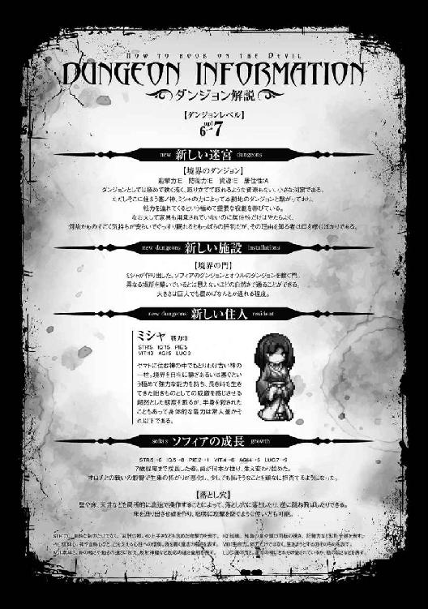
１
「オウル、準備ができたよ！」
「ああ、ご苦労」
空間を超越し、文字通り飛んできたユニスを抱き留めながら、オウルは彼女を労う。
「ようやくか。待ちくたびれたぞ」
「そう言うな。お前の力は強力すぎるのだ」
欠伸を噛み殺しながら言うミシャに、オウルは憮然として答えた。
彼女の力はオウルが想定していたよりも遥かに便利なもので──
あまりに便利すぎた。
境界の神であるミシャは、あらゆる境界を繋げることができるのだという。
扉と扉を、門と門を、そしてダンジョンとダンジョンを。
しかも繋ぐこと自体には力を使うものの、維持するのには殆ど力を消耗しないらしい。
だから大きな門でも作って本拠地とこの地を繋げば、戦力を丸ごと持ってくることができる。
それは非常に危険なことだった。なぜなら、行き来は双方向だからだ。
こちらの戦力が簡単に持ち出せるということは即ち、本拠地に簡単に攻め込めるということでもある。
かといって、ダンジョンから遠く離れたところに繋いでは利便性に欠ける。
それを解決するために、オウルは特別な部屋を作り上げていた。
ミシャの洞窟以外とはどことも繋がらない、大きな大きな部屋だ。
そこからオウルのダンジョンへは、通常の転移を使って行き来する。
間には分厚い岩盤が横たわっているものの、距離自体は短いため通常の魔術の転移で事足りる。
これならば、座標がわからなければ侵入できない。
テナのような能力もあるから安心はできないが、ある程度の備えにはなるだろう。
最悪の場合はその部屋を土で埋めてしまえば、物理的に侵入を防ぐこともできる。
「では、開くぞ」
ミシャはすっくと立ち上がり、彼女の住む洞窟の奥に設えた巨大な門扉へと腕を伸ばした。
一体どのように力を振るうのか、と見守る一同の前で、彼女は軽く扉をとんと指先で突く。
すると両開きの扉はきいと音を立てて開き......
何もない空間だったはずのその向こうには、全く別の部屋が広がっていた。
オウルはその光景に、目を見開く。
空間を繋ぐ門といえば、オウルがかつてフィグリアの軍師に捕らえられた時にユニスが作り上げたような、光り輝く渦のようなものを想像していたのだ。
だがミシャが成したそれは、違和感など微塵もない。
ごくごく自然に、扉の向こうに本来ありえない光景が広がっていた。
「オウル様っ......！」
真っ先に飛び込んできたのは、意外にもミオだった。
矢も盾も堪らず駆けだした、といった彼女の柔らかな身体を、オウルは反射的に抱き留める。
「待ちかねたぞ！」
「お会いしとうございましたわ！」
それに重なるようにエレンとセレスが飛びついてきて、オウルは押されつつも三人の身体を支えた。
「えいっ。おかえりなさい、オウル様」
その腕を取ってシャルが己の胸に押し付けるようにして抱きかかえ、
「ほら、いってきなさいよ」
「う、うん......オウル様、失礼いたします！」
ウィキアに押されたナジャがもう片方の腕に縋りつくようにぎゅっと抱きつき、
「もう、寂しかったよー！」
抜群の跳躍力でファロが頭にしがみついてきたところで、オウルはとうとう耐えきれずに地面に転がった。
起き上がろうともがくが、女たちの身体で身動きが取れない。
彼女たちの心情を思えば怒鳴りつけることもできなかった。
「さあ、そろそろどけ」
頃合いを見てパンパンとメリザンドが手を打ち鳴らすと、ようやく女たちはオウルの上から身体をどかす。
「ほら」
ウィキアが差し出す手を取って、オウルは身を起こした。
「まったく、総出で迎えることもあるまい......」
扉の向こうにいたのは、妻たちだけではない。侍女やアールヴたち、フィグリア王家の王妃と姫に娘たち。それにドヴェルグや半人半馬、ラミアや人狼といった面々までもがオウルの帰還を出迎えていた。
「頬が緩んでおりますよ、陛下」
にこやかに告げるノームに、オウルは思わず己の頬を押さえる。
「おかえりなさいませ、お師匠様」
遠征中にも何度か会っていたためか、幾分落ち着いた所作でスピナが深く腰を折る。
「ただいまわたしーっ！」
「おかえりわたしーっ！」
オウルが連れていたリルと、迷宮に残っていたリルの分け身が空中でパンと手を合わせた。
といっても彼女のそれは同一の意識が二つの身体を同時に操っているだけなので、要するにただの一人芝居だ。
「帰ってきたね、オウル」
いつの間にかユニスが横に立ってニコニコと笑いながらそう言って。
「ああ」
オウルは深く頷きながら、久々の我が家の空気を胸いっぱいに吸い込んだ。
「我が留守の間、大儀であった」
久方ぶりの玉座に腰を下ろし、オウルはそう労いの言葉をかけた。
無論のこと、己のいぬ間にダンジョンを乗っ取られぬよう対策は十重二十重に巡らせて出かけたのだが、結論から言えばその労力は全てが全く無駄であった。
無論、仕事の上でいくつかの失敗や破綻はあったし、そうした時に指示を仰ぎにユニスがオウルのもとを訪れたのは一度や二度ではない。
だが危惧し備えたような裏切りは、ただの一つも見つからなかった。
オウルはそれを不可解に思うこともなく......しかし当然と思うこともなく。
ただ──安堵したように、深く息を漏らした。
元来のオウルであれば、そもそも対策を施したとしてもこれだけの期間、ダンジョンを他人に任せて留守にするなどということはなかっただろう。
残された者もそれをわかっているからこそ、それに応えた。
「お前たちの忠義、献身には報いねばならぬ」
謁見の間は広いとはいえ、何千何万といる魔王の配下が丸ごと入れるほどではない。
全体への演説や褒章は後に回すとして、オウルはまず近しい者たちを集めてそう述べた。
「故に、褒美を取らす」
近しい者とは、その殆どが彼の妻だ。
新大陸についてきていたリルとマリー、魔力の補給のために毎日顔を合わせていたユニスとスピナはともかく、他の者たちは殆ど丸一年放っておいたことになる。
つまり褒美とは、実質的にその補償であった。
「褒美とはいかなるものでしょうか、主殿」
跪いた姿勢から顔を上げ、問うたのは黒アールヴの長エレンであった。
彼女もまた忠義厚き腹心と言っていい相手だが、同時に黒の氏族を率いる族長としての立場も持っている。部下たちのためにも、生半なものでは承知しない、とその目が言っていた。
オウルはうむと頷いて、
「お前が決めろ」
短く、そう答えた。
「は......？」
エレンは思わずぽかんと口を開き、オウルの言葉の意味を考える。
「望むものを与える、と言っておる」
「お言葉ですが、オウル様」
そこに声を上げたのは白アールヴの長、セレスだ。
「私たちが......私が頂きたいのは、金品でも宝物でもありません」
「それも、わかっている」
質素倹約を旨とする魔王の気風もあってそれほど華美な生活をしているわけではないが、それでも王族は王族である。彼女たちが今更金銭で購えるようなものを欲しがるとは、オウルも思っていなかった。
「一日だ」
指を立てて厳かに宣言するオウルに、エレンとセレスは揃って首を傾げる。
「各々一日を限度として、この俺を自由にする権利を与える。無論承諾できる範囲での話だが、よほど無茶な頼みでなければできうる限りの望みを叶えよう」
しかし続く言葉に、一同がどよめいた。
「それってつまり......オウル様を一日独り占めできるってことですか？」
「うむ。そのように捉えて差し支えない」
シャルの問いにオウルは頷くが、それはそう簡単な話ではない。
ただでさえ広大な土地を治める魔王は忙しく、朝から夜まで殆ど働き詰めであることは皆が知っている。ましてや遠征から帰ってきたばかり、メリザンドが代理である程度処理していたとはいえ彼の裁可を待つ書類はなお山のようにうずたかく積まれていて、その恐ろしさは執務室に入ったリルが顔を蒼白にして出てくるほどなのだ。
その魔王の一日とは、彼自身と同じ大きさの黄金よりも価値を持つ時間。
──しかし同時に、その場に居並ぶ者たちが皆、何より望んでいるものであった。
「立場や序列の別なく、思いついた者から逐次応じるものとする。皆、存分に考えておけ」
オウルの言葉に妻たちは、はっと我に返ったように互いに顔を見合わせ、浮足立ち、銘々に思い悩みながらその場を立つ。
「随分な大振るまいですね、陛下」
一人注文を聞くために残った商人、ノームはクスクスと笑いながらそう言った。
「何を言っておる」
そんな彼女に、オウルは呆れたように答える。
「褒美を与える相手には無論、お前も入るのだぞ。他人事のような顔をしおって」
「え？」
ノームは思ってもみない言葉にぽかんと口を開ける。
「お前が何を頼んでくるか、楽しみにしておるからな」
言い置き、執務室へと向かうオウルの背中を見ながら、ノームはぱちぱちと目を瞬かせた。
２
「そういえば陛下。褒賞の件ですが、やはりあたしには不要です」
オレンジ色の髪を揺らし、いつも通り納品の報告にやってきた商人のノームは、ふと思い出したようにそう言った。
「ほう。それはいかな了見だ？」
「いかなも何もございません。あれは陛下のお妃様に、寂しい思いをさせたことへの補償でございましょう？」
「まあ......有体に言ってしまえば、そういうことだな」
「ならば、一介の商人でしかないあたしが何故受け取れましょうか」
こいつは何を言っているんだ、とオウルは思う。
確かに、彼女との関係は金銭を介したものではある。だが金目当てで抱かれているかといえば、そんなことはないのは明らかだ。
週に一度、金貨十枚。それがノームの提示した彼女自身の肉体の値段だ。かつてはそれだけあれば一月は遊んで暮らせる程度の価値があった。
だがそれも、十年前の話だ。オウルの国は十年の間に発展し、以前とは比べ物にならないほど豊かになった。その分物価は上がり、相対的に金貨一枚あたりの価値は下がったといえる。今では金貨十枚など、ちょっとした贅沢をすれば、一週間と経たずに使い切ってしまうだろう。ましてや魔王のお膝元、オウルシティの経済を取り仕切るノームにとっては端金も良いところだ。
にもかかわらず価格の改定は今もってなされていないし、提案されたことすらない。それどころか、ここ数年に至っては渡した金をうっかり忘れて帰ることすらあった。
オウルとしては口に出すまでもなく、彼女も側室の一人として考えていたのだ。
「陛下との関係はあくまで取引の上のこと。お得意様とはいえ数多いる顧客のお一人。勘違いされては困りますわ」
だがそうまで言われてしまっては、オウルとしてもそんなことはないと言い張ることはできない。
「つまりお前と俺の関係はあくまで互いに利があるが故の付き合いであり、対価なき施しは受けるいわれがない、とそう言いたいわけか」
「ご明察の通りでございます」
にっこりと笑顔を作り、ノームはそう答える。
「なんだ、お前らしくもない」
「......と、申しますと」
しかしその笑顔は、オウルの言葉に僅かばかり陰りを見せた。
「なるほど対価がなければ働かぬは商人として当然のことであろう。だが一方で、好機をみすみす見逃すのがお前のやり方か？」
「......それは」
「対価がなければ働けぬというのなら、俺にもお前にも利になることを提案すればよかろう」
「何かお考えがあるのですか？」
ノームの問いにオウルは頷き、答える。
「この城の中に、店を出すというのはどうだ？」
天と地、二つに分かれた魔王の迷宮のうち、空に浮くダンジョンの更にその上にそびえる居城。魔宮と呼ばれる白亜の城に住まうものは、オウルの配下の中でもごくごく僅かだ。ほんの一握りの側近と直属の配下、そしてその世話をするための選りすぐりの侍女たち。
ダンジョンにとっては中枢の中の中枢だ。それは王宮であると同時に迷宮であり、後宮でもあった。本来そこに店など出せるわけもなく、オウルからの提案はノームにとっては願ってもないことであった。
一方で、それはオウルたちにとっても益になることだ。現状は侍女たちに命じてわざわざ魔宮の下のダンジョン街まで出向かねば日常の細々したものも手に入らない。王族の暮らしというのは得てしてそういうものだが、不便であることは確かであった。そこにノームのような信用のおける商人が店を構えるなら非常にありがたい。
「どうだ。急拵えにしては悪くはなかろう」
「これは......」
魔宮の一角に作られた店を見て、ノームは目を見開いた。赤く塗られた三角形の屋根に、無数の看板が立ち並ぶ小さな二階建ての店。それは、彼女がオウルと出会った当時に構えていた店にそっくりだったからだ。
「記憶の限りで再現してみた。まあ多少違いはあるかも知れんが、概ねこのような作りだったはずだ。多少手狭だがこちらの客はそう多くはあるまい。これでも問題ないはずだ」
「......はい」
震える声で答えながら、ノームはそっと柱を撫でる。材質まで同じものを使っているのだろう。手触りも、記憶にある通りだった。
「ありがとうございます、陛下。この御恩に報いられますよう、これまで以上に誠心誠意商わせていただきます」
深々と頭を下げるノームに、しかしオウルは渋面を作る。
「あら、こちらは？」
ふと、ノームはカウンターの奥にある扉に気づいた。かつての店ではそれは倉庫に続くものだったが、外から見る限りこの建物に倉庫はない。
「ああ、開けてみよ」
オウルに促されノームが扉を開くと、その向こうに見慣れた光景が広がっていた。
「あたしの、店......？」
それは地上、ダンジョンの入り口を中心として広がる街、オウルシティにある現在のノーム百貨店のカウンターだった。床や机についた傷から、それは模倣して作ったものではなく本物であるとわかる。
「今までは必要な時にこちらから呼びつける形式だったが、これからは自由に行き来できるというわけだ。ただし、この扉で移動できる生き物はお前だけだ。扱うものは嗜好品や装飾品のような嵩張らぬものが主になるだろうから問題はなかろうが、人手が必要であれば言え。ゴーレムでも貸し出してやる」
「あたしだけ......オウル様も通れないということですか？」
ノームの質問にオウルはうむと頷き、扉の境目に手を当てる。何もないかのように見えるその空間はまるでさざなみのように波打ち、オウルの手を押しとどめた。
「しかし、入れないといっても扉を開ければ見えてしまうというのは問題があるのでは......？」
「その点は心配ない。向こう側からはこちらは見えぬようになっておる。音なども、向こう側からこちらへは伝わるがこちらから向こうへは通じぬ」
オウルにそう言われてノームが扉をくぐって背後を振り返れば、そこは何の変哲もない倉庫への入り口に見える。数フィート先の床も見えているのに、そこにいるはずのオウルの姿は全く見えなかった。
不思議に思いながら、ノームは腕を倉庫の中に差し入れる。そうしても腕の先が消えたりするわけでもない。だが、オウルの手がノームの手を握るような感覚がした。
何度も己が身体に触れられてきた手のひらだ。目に見えずともその感覚だけでオウルのものであるとわかる。
「あれ、オーナー、帰ってきてたのかい」
その時背中から声をかけられて、ノームは内心でびくりと肩を震わせる。
「ええ。たった今」
だがそんな様子は微塵も見せずに振り返ると、そこにいたのはキースであった。元々は街の入り口で道案内を生業としていた男だが、街にやってくる冒険者の数があまりに多くなったため対処しきれず、今ではノームの店で下働きのようなことをやっている。
腕も立つし胡散臭い割には信用のおける男ではあるが、流石に魔宮に直接繋がる通路など秘中の秘だ。みだりに明かさぬ方が良いだろうと、ノームは何事もないかのように振る舞う。
だがその時不意に後ろから触れられて、ノームは僅かに目を見開いた。
「ん？ どうかしたかい？」
「いえ......今一瞬、そこに何か虫がいたような気がして」
今のノームは、背中側半分が魔宮に突き出しているような状態だ。その尻をオウルの手が這い回っていた。
柔らかな尻たぶを弄ぶかのように揉みしだいたかと思えば、割れ目に沿って指をついと滑らせ、太ももからさわさわと撫で上げていく。従業員がすぐ目の前にいるというのに、ノームの開発されきった身体は彼の愛撫に敏感に反応して、子宮の奥がきゅうと疼き入り口が潤みを帯びていくのがわかった。
「なんだ、オーナーでも虫なんか怖がったりするのか。女の子だねえ」
「いやね、やめてください。もうそんな年でもありませんよ」
ノームは答えながら手を後ろに回し、そっとオウルの手を押さえる。するとオウルの手は渋々といった様子で、ノームの尻から離れた。ほっと息を吐いたのも束の間、何かがノームの手のひらに押し当てられる。指先で摘んで確認するまでもない。触り慣れたその大きさと重さは、紛れもなく金貨であった。
ノームがそれを悟るのを待つようにして、ぺろりとスカートが捲りあげられて、ノームは声が出そうになるのをなんとか堪えた。
キースの方からはカウンターに遮られて見えないはずだが、オウルの手はスカートの下に入り込み、直接下穿きを撫で擦る。オウルの方からはキースの姿が見えているはずだから、わかってやっているのだろう。ついには下穿きがするりと太ももまでずり降ろされて、スカートの下でノームの秘部は露わになった。
流石にオウルの手の甲をきゅっとつねってやると、じゃらじゃらと更に数枚の金貨が手のひらに乗せられる。枚数は五枚。それも金の比率が低い新金貨ではなく、純金に近い旧金貨だ。
ノームの手がそれを握ったのを同意と見たのか、オウルの指がノームの花弁を掻き分け、蜜を滴らせる秘所へと侵入してきた。彼のゴツゴツとした指が膣壁を優しく撫で上げると、それだけで腰が砕けそうになってしまう。
「うーん。駄目だな、逃げちまったみたいだ。虫ってのは蜘蛛だったかい？ それとも油蟲の類？」
辺りの荷物の隙間を探っていたキースが、頭を掻きながら言った。
「一瞬だったのでよくわからなかったけれど、油蟲だったように思います」
言いながら、ノームはカウンターにもたれかかるようにして上半身を預ける。そうしないと、とても立っていられそうになかった。自然と後ろに突き出すような格好になる腰に、熱く硬いものがぴたりと押し当てられる。
「油蟲だとすると、ちょっと厄介だな。あいつらは何でもかんでもかじるし、あっという間に増えちまう。毒餌でも用意するか」
「そうですね。そうしてもらえますか？」
流石にそれは、と拒否しようとするノームの手に、じゃらりと金貨が手渡された。十枚。毎回、ノームがオウルに抱かれるために貰っている額だ。しかし流石に、従業員のすぐ目の前で抱かれるというのは抵抗があった。バレたら今後どんな顔をして接して良いかもわからない。
ノームは腰を引いて、身体を魔宮との境界から引き離した。そうすればオウルといえども何もできない。だが彼によって弄ばれ、火をつけられた身体はすぐには収まりそうもなかった。
「オーナー、顔が赤くないか？ 風邪でも引いたんじゃないか」
思わず太ももを擦り合わせていると、キースは彼女の異変に気づく。
「そうですか？ 今日はその......陛下のところで少し運動をしたので、その余韻かも知れません」
「ああ......運動、ね」
にっこりと微笑んでやれば、キースは気まずげに視線を逸らした。ノームが魔王の愛人であることは周知の事実だ。まさかたった今この場で行われているとは思いもよらないだろうが。
「まあ三十越えてもその容姿なら、魔王陛下じゃなくとも可愛がりたくもなるわな」
キースは一瞬だけ、カウンターの上に乗せられたノームの豊満な双丘に視線を向ける。
「......そうで、しょうか」
思わずノームは、そう答えていた。
食べるものにも生活にも気を使い、高価な化粧品を無数に買い揃え、若さを保つあらゆる努力をし続けたノームの美貌は、元々の童顔低身長も相まって三十代どころか十代と言っても通じるほどだ。今現在も、まさに可愛がられている真っ最中である。
だがそれでも、老いと無縁ではいられない。今は良くても、十年後、二十年後はどうだろうか。相手も同様に老いるのならばまだ救いはあったかも知れないが、優れた魔術師であるオウルはあと数百年は若い姿のままだろう。
ノームには、彼のような魔術の素養はない。スピナのように、人間をやめてまで傍に居続ける覚悟を決められるほどの度胸もない。どれだけ金を稼いだところで、老いを止め若さを保つような都合のいい道具もない。
──ならば自分は、金で抱かれる商売女で良い。愛を囁かれ、大事にされた相手から飽きられ捨てられるなど、耐えられる気がしなかった。
「陛下の周りには老いを知らない美しい姫君が沢山いらっしゃいますから。そうなったらあたしも稼ぎ口が減りますから、新しい客でも探しますかね」
「魔王様から金取ってるのかい？ こりゃたまげた。流石はオーナーというか......」
「あたしは商人ですからね、当然でしょう？ お金さえ払ってくれるなら、キースさんでも相手をしてあげますよ」
カウンターに預けた上半身を、更に強く押し付ける。そうすると服の胸元がたわみ、豊かな谷間がちらりと覗いた。
「冗談はよしてくれ。魔王陛下の女に手を出すなんざ、命がいくつあっても足りやしない」
キースは慌ててそう言うものの、ごくりと唾を飲み込んだのをノームは見逃さない。
「別に冗談じゃありませんよ。他の男に抱かれるなとは言われてませんし、陛下も気になさらないでしょう。実際、過去に陛下以外の方と肌を重ねたのも一度や二度ではありませんし......」
ノームがそう言った瞬間、彼女の身体を衝撃が襲った。
太く、硬く、逞しい何かが、ノームの中心を貫いている。後ろを振り返って確認するまでもない。長年の性交によって形を覚え込まされ、ぴたりと嵌まるかのように埋め込まれたそれは、紛れもなくオウルの男根だった。
だが身体は間違いなく境界から離れている。何故、と混乱するノームの膣口を、オウルは容赦なく抉った。
「ちなみに......いくらくらいなんだ？」
その気になってきたのだろう。神妙な表情で尋ねるキースに、ノームはなんとか平静を取り繕いながら片手を広げて見せる。
「金貨で五十......なわけないか。五百ってところか？」
それならば、相当高いがキースに払えないほどの額ではない。
しかしノームはふるふると無言で首を振る。奥歯を噛み締めていなければ、嬌声が漏れ出してしまいそうだった。
「ご、五千......？」
全財産をかき集め、これからの稼ぎをつぎ込んでどうにかなるか。
算段しながら問うキースに、ノームはやはり首を振る。
「まさか五万枚か!?」
こくりと頷くと同時、オウルの精がノームの膣内に放たれた。
勢いよく白濁の液が注ぎ込まれ、ノームの子宮を埋め尽くす。
今金貨五万枚と値をつけたばかりのそこが、無料で犯されていく。
そう思うと、得も言われぬような被虐的な快楽がノームの背筋をゾクゾクと走り、彼女は絶頂に身体を震わせた。
「なんだよ、やっぱりからかってんじゃねえかよ......まったく、勘弁してくれよオーナー」
幸か不幸か、一生かかっても払いきれない金額にがっくりと肩を落とすキースはそれに気づかない。
「すみません。まさか乗ってくれるとは思わなかったもので。あたしもまだまだ捨てたものではないということでしょうか」
己の膣内に注ぎ込まれる白濁の脈動を感じながら、ノームは妖艶に笑ってみせた。
「いくら何でもおイタがすぎます、陛下」
キースが立ち去った後、ノームは魔宮へ戻ると流石に怒ってそう言った。
「対価を払えば良いのであろう」
オウルはオウルで、憮然としながらそう答える。
「そういう問題ではありません。そもそも、陛下でも門は抜けられないのではなかったのですか？」
ペニスだけとはいえ、オウルの身体は明らかに門を越えてきていた。流石に全く予期もしていなかった衝撃には、ノームとて対処しきれない。声を出さずにいられたのは幸運でしかなかった。
「ああ。新大陸とこの地を結ぶのに、サイノカミなる存在の力を借りたと言っただろう。そいつと交わったせいで、俺にも多少その力が使えるらしい。とはいえ開けられる門の大きさはせいぜい指数本分だが」
つまらなそうに、オウルは答える。彼に備わった力で作れるのは、身体どころか腕さえ入らないほどの小さな穴だ。それこそ男根がギリギリ通る程度のもの。このような悪戯くらいにしか使えない下らない力であった。
「まあ、金貨程度であれば通すことはできる」
オウルが言うと、彼の手の中にじゃらじゃらと金貨が現れる。恐らく金庫とでも繋げたのだろう。まるで無尽蔵にあるかのように金貨が溢れ、オウルの目の前にうずたかく積まれていく。
「あ、あの......？」
一体何枚出すつもりかとノームが困惑の声を上げても勢いは止まらず、文字通り山のように金貨が積もり、オウルの姿さえ見えなくなりそうなところでようやく彼は金貨を出すのをやめた。
「これで文句なかろう」
乱雑に積まれた金貨の数を、しかしノームの瞳はひと目で見抜く。
それは全部で五万枚であった。
「あの......キースと話していたことであれば、ただの冗談ですから」
「週一回で金貨十枚。一年を五十週として、百年で五万。これだけあればお前の一生を買えるな？」
慌てて言うノームに、オウルは不機嫌そうに言う。
「それは、ええと、はあ、まあ......」
どう反応していいかわからず、ノームは曖昧にそう答えた。
「ならば今より、お前は俺のモノだ。しかと心得よ」
そこまで言われてようやく、ノームは彼の言わんとしたことを察する。
「ですから、あれは冗談ですよ。陛下以外の方に身体を売ったりはしておりません」
「だが、俺以外のものと肌を重ねたこともあると言っていたのは、嘘ではなかろう」
悪魔は人の嘘を敏感に見抜くが、魔王であるオウルとて言葉が全くでまかせかそうでないかくらいはわかる。
ノームのその言葉は、嘘ではなかった。
「ああ、そうですね」
ノームはくすりと笑って答える。
「あたしの主は情深きお方ですから。他の姫君たちと共に可愛がっていただく際に、肌が触れ合うこともございます」
「な......」
絶句するオウルに、ノームはクスクスと笑った。
どうやら魔王陛下は彼女が思っている以上に嫉妬深く──そして、自分を気に入っておいでらしい。
「お代はこれで結構です。ただし返品は受け付けておりませんので」
山と積まれた金貨のうち、一枚だけを拾い上げ。
「末永く使ってくださいね、ご主人様」
己の主人となった男に、ノームは最初の口づけを交わした。
３
「主殿、そっちへ行ったぞ！」
「うおおおおおおっ！」
オウルは雄叫びを上げつつ、全力で横に飛ぶ。
落ち葉が舞い、キューブの端が砕け、轟音と共に巨木が折れ吹き飛んだ。
「うむ、素晴らしい獲物だ。こうでなければ！」
エレンは嬉しそうな笑みを浮かべながら、舌舐めずりをして木を吹き飛ばした生き物を見つめる。
それは、巨大な猪だった。恐らく森に満ちた魔力を吸って魔獣化したものなのだろう。
体高はオウルの背よりも高く、鼻先から尾までは軽く十フィート（約三メートル）を超える化物だ。その突進は容易く岩を砕き、大木をへし折る。
そんな怪物と、オウルは今エレン以外には供も連れずに対峙していた。
......何故、こんなことになったのか。
オウルは必死に大猪の攻撃を防ぎながら、思い返した。
「主殿。次は、我らが森に来てはくれないだろうか」
事の発端は、エレンのその願いであった。
「まあ、構わんが......」
歯切れ悪く答えて、オウルは周りを見回す。
日がとっぷりと暮れ、闇に黒く染まった花畑の上には何人もの女たちがぐったりとして倒れていた。皆一糸まとわぬ裸で、脚の間からは白濁の液を零している。自分でやったこととはいえ、なんとも奇妙な光景だ。
「まさかお前の森でもう一度同じことをする、というつもりではなかろうな」
それは白アールヴたちの長、セレスの望みだった。
白黒入り乱れたアールヴたちとの大乱交をようやく終わらせたと思えばエレンからのその誘いだ。オウルの懸念はもっともなものだと言えるだろう。
「おや、これだけしておいて、主殿はまだ足りませんでしたか」
言って、エレンはちらりとオウルの股間に視線を向ける。そこでは美しい顔から金色の髪までも精液でぐっしょりと濡らしたセレスが男根にむしゃぶりついて、丁寧に舐め清めているところだった。
「お前たちほど美しい女、どれほど抱いても足りるものか。とはいえ......」
「ご安心を。同じことを繰り返すような芸のない真似はいたしませぬ」
そうして笑うエレンに翌日連れてこられたのが、彼女たち黒アールヴが暮らす森の中だ。
黒アールヴの森は、同じ天の迷宮の外縁部にありながらセレスたち白アールヴの森とは全く正反対であった。
鬱蒼と生い茂る木々は陽の光を完全に遮り、ダンジョンの中よりもよほど暗い。あちこちの暗がりからは猛獣の気配がして、武の心得のないオウルでさえ己が狙われていることがわかった。
森というものの持つ恐ろしさ、危険さを凝縮したかのような、そんな森だ。
本来であれば足を踏み入れられた途端、獣たちはオウルに牙を剥くのだろう。
「うむ、この辺りで良いかな」
そうならないのは、この森でもっとも危険な生き物──エレンが、彼のすぐ傍にいるからだ。
「それで、お前の望みとは何だ？」
「うむ......」
エレンはどこか気恥ずかしげに頷いて、言った。
「私と、狩りをして欲しい」
そうして、話は冒頭へと戻る。
黒アールヴは白に比べて性的な欲求が強い。
オウルは正直なところ、同じことではないにせよ何か色事が待っているであろうという予想をしていた。だがまさか、大猪と戦うことになろうとは思ってもみなかった。
「稲妻よ、轟け！」
オウルの呪文と共に、その指先から雷光が迸り、大猪に突き刺さる。
しかし巨獣は微塵も応えた様子はなく、オウルにくるりと反転すると再び突進を始めた。
「ちっ......しぶとい奴め！」
舌打ちし、オウルが魔力を込めた指先を滑らせると、キューブが花のように広がりながら幾本もの道を作り出す。
その間棒立ちになるオウルを轢き殺さんと大猪は駆けて、その鋭い牙を思い切り突き出した。
「『虎挟み』」
その瞬間オウルの身体は掻き消えて、その代わりだとでも言うかのように展開したキューブが勢い良く閉じ、大猪の身体に巻きつくようにして拘束する。
「やっと動きを止めたな......」
キューブ自体の力はそう強くはない。だが、展開した状態から元の小さな石箱に戻ろうとする力は別だ。名こそ虎挟みというが、小さな竜を拘束する程度の力はあった。
「喰らえ」
魔獣の対魔力の大部分は、その毛皮にある。外部からの魔術的干渉を防ぎつつ、取り込んだ魔力を外部へ逃すまいとする作用を持つからだ。故にオウルが大猪の口内に投げ込んだ火球は覿面に効果を発揮して、その臓腑を焼き尽くした。
「お見事です、主殿」
木の上から木の葉の散らばる地面に音もなく着地して、エレンはぱちぱちと手を叩いた。
「何が見事なものか」
欠けてしまったキューブを撫で、オウルは憮然として答える。
エレンは大猪をオウルの方へと追い込むだけ追い込んでおいて、後は高みの見物を決め込んでいた。
「お前ならばあの程度、すぐに射殺せたであろうに」
絶技と呼んで良いレベルのオウルの魔力操作をもってしても、動く猪の口内に魔術を放り込むことは難しい。だがエレンの弓ならそれすら容易いことであるはずだ。
「それはそうだが、これほどの大猪を単独で倒しうる勇者は我々黒の氏族にもそうはいない。十分誇っていいことだぞ」
「で、何がしたいのだ？」
格上の人間から世辞を言われても嬉しくもなんともない。
オウルが素っ気ない口調で尋ねるとエレンは気にした風もなく「うん」と頷き、大猪を解体し始めた。手際よく血を抜き、皮を剥ぎ、肉を切り分け、骨から引き剥がして火をおこすと、木の枝に刺してそれを焼く。
溢れ出る脂が火に滴ってじゅうと音を立て、エレンがぱらりと磨り潰した香草をふりかけると香ばしく濃厚な香りが漂った。
その匂いは大猪との戦いで疲れたオウルの身体にいかにも染み込む。
「さあできたぞ、主殿。食べてくれ」
ずいと鼻先に突き出された肉に、オウルは堪らず齧り付いた。
パリっと焼けた表面の皮を噛み締めれば、野生の獣特有の生臭さはまるでなく、まるで果実のように脂が溢れ出す。
それでいて中身は蕩けそうなほどに柔らかく、舌に乗せればすっと溶けるように消える。
塩だけのシンプルな味付けだがその滋味は果てがないほど奥深く、爽やかなハーブの香りはそれを微塵も邪魔することなく、むしろ更に引き立てていた。
どこまでも濃厚であるのに、いくらでも食べられそうだ。
「さ、主殿。次は私に食べさせてくれるか？」
「うむ......」
旨さの余韻に浸りながら、オウルは手渡された肉を雛鳥のように開けられたエレンの口元へと運ぶ。
だが、その口内に放り込む寸前で、彼の手はピタリと止まった。
「待て。これには何の意味がある？」
「意味がなくてはいけないのか？」
エレンはそう答えるが、彼女の長い耳がピクピクと小刻みに動くのをオウルは見逃さなかった。
「逆だ。何か特別な意味があることを、お前は隠しているだろう」
「いや、そのだな......まあ、あると言えばあるが、一種のゲン担ぎのようなもので、主殿が気にするようなものでは」
「言え」
有無を言わせぬ口調で、オウルはそう命ずる。
「しゅ......祝言をあげる時の、習わしだ......」
いつもきっぱりとした口調の彼女にしては珍しく、エレンは口の中でもごもごと呟くように、そう答えた。
「いや！ 無論、わかっているぞ！ 私はせいぜい側室にすぎず、そのような立場にないことは！ だが、その、なんだ。これは我らが黒の氏族に伝わっている俗習のようなものでな、人間のいわゆる婚姻関係とはまた」
「良い。それ以上つまらぬ言い訳を聞くつもりはない」
早口で説明するエレンの言葉を遮り、オウルは不機嫌そうな声で言う。
「それで、どうするのだ」
「......主殿を謀ってすまない。だが、全ての責は私にある。氏族の者たちには寛大な処断をお願いできないだろうか」
オウルが問えば、エレンは真剣な表情でそう答えた。
エレンはオウルの過去に何があったかは知らない。だが、裏切られること、騙されること、そういった事柄がもっとも彼の嫌うところであることはよく承知していた。
「エレンよ。お前ともあろうものが、何を呆けたことを言っておるのだ」
オウルは呆れた表情で、深々と溜め息をつく。
「俺は、その、祝言とやらの正しい手順を説明しろと言うておるのだ」
「────は？」
目を剥くエレンに、オウルは溜め息をもう一度。
「二度は言わぬ。構わんから、さっさと説明せよ」
「......ああ！」
渋面を作りながら言う主に、しかしエレンはぱっと花咲くような笑顔を浮かべた。
「まず......その、夫婦となる男女二人で、獲物を狩るんだ。女が追い込み、男が仕留める。この時獲物が大きければ大きいほど、愛もまた深いとされる」
「アレで異存はあるか？」
「ああ。十分すぎるほどだ」
ちらりと大猪を一瞥するオウルに、エレンは深く頷く。
「次に、女がそれを調理し、互いに食べさせ合う」
「そら」
「......うむ。旨いな」
オウルが肉を小枝に刺してエレンの口の中に放り込んでやると、彼女は感慨深げにそれを噛み締める。互いにそれを何度か繰り返すが、たった二人で食べきれる量でもない。
「......で、この後は？」
満腹になったところでオウルはそう尋ねた。
「その後は......愛を誓うのだ」
「つまり、こういうことか？」
何かと直情的な黒アールヴのことだ。白アールヴのように歌や踊りで愛を表現したりはすまい。
オウルはそう考えて、エレンをその場に押し倒す。
「ま、まて、ここでか!?」
抵抗なくその身を地面に横たえながらも、エレンは戸惑いの声を上げる。
「問題があるのか？」
「いや、だって、その......」
エレンはキョロキョロと辺りを見回し、消え入りそうなか細い声で言った。
「ふ、二人きりではないか......」
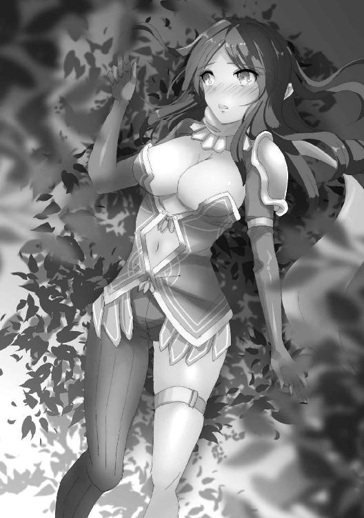
「お前は何を言っておるのだ」
呆れて言いつつも、確かにエレンと二人きりで交わったことは今まで一度としてない、とオウルは気づいた。彼女と情を交わす時は常に部下である黒アールヴたちやミオ、セレスといった面々のいずれかがともにいた。
この儀式も本来ならば氏族皆で催すものなのだろう。これほどまでの大物でなくとも、二人で食べきれる獣など黒の森にはそうはいない。
「抱くぞ」
「んっ、や、ぁ......」
一方的に宣言しその褐色の肌に口づけると、エレンはまるで処女のように声を漏らした。
それが面白くて、オウルはつい何度もキスを落とす。
「あ、主殿ぉ......」
頬、首筋、鎖骨から胸元へと落とされていく口づけに、エレンは目尻に涙を浮かべながらオウルを呼んだ。
「お前にも存外、可愛いところがあるのだな」
その普段とのギャップに、オウルは思わずそう呟く。
途端、エレンの褐色の肌がわかるほどに赤く染まった。
「か、からかわないでくれ」
「からかってなどいるものか」
噛みつくようにその喉元を軽く食みながら服の襟元をはだけさせ、胸元からそのたっぷりとした乳房、先端の蕾へと、貪るように甘く甘く歯を立てる。
「ん、ふ、あぁ......っ」
その度にエレンは身を震わせて、常とは違う媚びるような声を上げた。
「こんな......おかしい。主殿、私っ......身体が、変だ......っ！」
黒アールヴは性に対して奔放な種族だ。エレンもオウルと出会ってから忠義の証として彼以外と関係を持ったりはしていないが、それまでは何人もの男を味わってきたし、オウル自身とも数えきれないほど交わってきた。
だがこんな気持ちになるのは生まれて初めてだった。
オウルの手が彼女の肌に触れる度にそこがカッと熱を帯び、快楽となって身体が自然と震える。
触れられているだけで交わってもいないのに達してしまいそうなほど昂り、エレンはその未知の感覚に言い知れない恐れさえ覚えた。
「いくぞ」
ペニスの先端をエレンの花弁に押し当てて、オウルは短く宣言する。
「ま、待ってくれ、主殿！ 今、されたら──」
「待てぬ」
昂っているのは、エレンだけではない。
オウルもまた衝動を堪えきれず、彼女の中にずんと腰を突き入れた。
「──────ッ！」
瞬間、エレンの身体を巨大な槍で貫かれたような衝撃が走った。
息が詰まり、声さえ出ない。だがそこに痛みや苦しみは一切なく、あるのはただ痺れるほどに強烈な快楽と────それに倍する、多幸感と満足感。
助けを求めるようにエレンの手が縋るものを求めさまよう。その手を、オウルは握りしめた。
互いの指と指とを絡め、両の手のひら同士をぴったりと合わせて繋ぐ。
ただそれだけで、エレンは更にもう一度達した。
「動くぞ」
「あっ、ある、あるじ、どのぉっ......！ ひぁっ！ ふああぁぁんっ！」
オウルはエレンを組み伏せながらも、彼女を潰してしまわぬように肘で己の身体を支える。
だが彼がその硬く張りつめた肉の塊をエレンの奥ヘと突き入れ腹から胸元が圧迫される度に、今まで上げたこともないような甘い声が彼女の口から漏れ出した。
「あぁぁっ！ だ、めぇっ......！ わたっ......私は、黒の......氏族の、長......！ こんな、ただの、女のような......あぁっ！」
「お前はただの女だ」
切なげに眉を寄せるエレンと肌を重ね合いながら、オウルは彼女の長い耳に囁く。
「俺の前でだけは、ただの俺の女であれば良い」
「しかし、黒の女帝、エレンが、そのような」
奥の歯を食いしばり、エレンは甘く蕩けるような快楽に抵抗した。
オウルのものであることなど、とっくに許容している。
だがそれは氏族を率い、忠義を捧げる黒アールヴの長、エレンとしてだ。
「虚名が邪魔をするならば、別の名で呼んでやる。そうだな......エル」
優しげな声でそう呼ばれた瞬間、エレンの全身からは力が抜けた。
「二人きりの時はお前をエルと呼ぼう。お前も主殿などという色気のない呼び方をしてくれるな」
ぎゅっと手のひらを握りしめ、エレンは頷く。
反則だ、と彼女は内心でひとりごちた。こんなもの、抵抗できるわけがない。
「あ......あな、た」
満足げに頷き、オウルは答える。
「何だ？」
「ああ......っ！」
それだけでもう一度達し、潤んだ瞳でエレンは懇願する。
「あなた。愛しい方。口づけを」
皆まで言わせず、オウルは彼女の薔薇の花弁のような唇に己のそれを重ねる。
ただ唇を合わせるだけの、素朴な口づけ。
しかしそれにかえって愛情を感じて、エレンは熱心に接吻を交わす。
二人の燃え上がる情熱はすぐに表現しきれなくなって、エレンの舌先がオウルの唇に割って入り、オウルはそれに応えて顔を少し傾げ、エレンの舌を受け入れた。
ぎゅっと強く強く互いの手を握りしめながら、オウルはエレンの身体を揺り動かすように彼女の中に突き入れて、エレンは彼の腰にその美しい脚を巻きつけ受け入れる。
唇で、手のひらで、互いの性器で、これ以上ないほどに彼らは繋がり絡み合いながら、至高の快楽を貪り続ける。
「んっ、ふ、う、はぁっ......」
何度目になるかもわからない絶頂に声を上げ、エレンは潤む瞳でオウルを見つめる。
彼女が何を望んでいるのか、オウルはたちどころに理解したが、しかし彼女の言葉を待った。
「あなたの......子が、欲しい。あなたの子を生みたい。私たちの、愛の証を、作って欲しい」
エレンのその言葉と共に、オウルは腰に違和感を覚える。
彼女の膣内に突き込んでいる肉槍、ぎゅっと締め付けるその膣壁の奥に、空間ができていた。
エレンの子宮が降りてきて、その口を開いている。身体自体が、孕ませて欲しいとねだっているのだ。
「ああ。エル、俺の子を産め」
「ああっ────」
オウルの宣言に、エレンはもう一度達して身体を震わせて。
「イくぞ......っ！」
叩きつけるように子宮に直接注がれる精液の熱さに、エレンは気をやった。
「んっ......」
一体どれほどの間、そうしていただろうか。
忘我の時から立ち戻ったエレンとオウルは、どちらからともなく顔を近づけ唇を重ね合う。舌を絡め合う激しいそれではなく、深く柔らかな口づけだった。
たった一度の交合で、ここまで充足できるものなのか、とエレンは感動さえ覚える。
セレスたちと共に乱交していた時、彼女は覚えているだけでも三度は膣内に放たれ、十度は気をやったはずだが、その時とは比べ物にならないほどの満足感が彼女の胸を満たしている。
「あっ......」
ふと、オウルの手が離されて、エレンは思わず声を上げた。
「そんな顔をするな」
くしゃりと髪を撫でられて、オウルの腕はそのまま彼女の首を持ち上げ、ほっそりとした肩へと回される。
「手を繋いだままでは抱きしめられぬだろう？」
「......はい」
エレンもまたオウルの背にその腕を回し、ねだるように小首を傾げる。
その意図を察したオウルに口づけられて。
暖かな彼の肌の感触と、己に覆いかぶさる男の重みを、エレンは心ゆくまで味わうのだった。
４
「私にかけた呪いを解いて、自由にして欲しい。褒賞にそれを望むわ」
単刀直入に伝えられたウィキアの願いに、オウルは思わず言葉を失った。
「言っておくけど、別に引き止めてもらうのを期待して駆け引きしてるわけでも、酔狂で言っているわけでもない。本心で、心の底からそうして欲しいと思っているからこその願いよ」
「......そうか」
頷きつつも、オウルは何故今更になって、という思いを抱かずにはいられなかった。
今までその機会を与えなかったわけではない。だが何だかんだと理由をつけつつ、ウィキアはオウルのもとに居続けた。それで満足していると思っていたのだ。
「ナジャとシャルはどうする」
「あの子たちはあの子たちで、そうしたいならそう望むでしょう。......しないとは思うけど」
ウィキアの言う通り、二人に対しては既に別々の褒賞を与えている。
「二人の分まで叶えてくれるというのなら、迷宮の外に送るのもつけて頂戴。せっかく呪いが解けても一人じゃこの迷宮から出るのは少し骨が折れるから」
「わかった。それで、いつにする？」
「今すぐでいいわ。私の分の仕事はもう他の子たちに引き継いだから、ダンジョンの運営にも支障はないから安心して」
その念の入れようにウィキアの決意の固さを感じ、オウルは素直に彼女にかけられた呪いを解いた。十重二十重に仕込まれ、魂まで侵食した呪いは真っ当な方法で解呪するのは不可能に近い。だが施術者がそう望みさえすれば、扉を開けるよりも簡単に解くことができた。
「これで解けたの？」
「ああ。ウィキアよ、この迷宮から出てはならぬ」
オウルはそう言いながら、床に浮かび上がった魔法陣を指し示す。それはダンジョンの外へと通じる転移陣だ。命令に背きそこに乗ることができること自体が、呪いが解けた何よりの証になる。
「なるほど。じゃあね」
ウィキアは髪をかきあげて、旅装を整えると魔法陣へと足を運ぶ。
「待て。これを持っていけ」
「これは？」
その背を呼び止め、オウルは袋を投げ渡した。その見た目に反してズシリと重い。
「今までの給金だ。餞別とでも思え」
「そう。ありがとう」
ウィキアはいつも通りの口調でそう答え、魔法陣へと足を踏み入れる。そして振り返りもしないまま、オウルの迷宮を去った。
「......ふう」
ウィキアが転移で飛ばされたのは、ダンジョン入り口に広がる街、オウルシティにほど近い森の中であった。小高くなった丘からは街が一望でき、今いる場所がどこなのかすぐにわかる。
「......悪党のくせに、妙なところで甘いんだから」
じゃらりと音のなる小袋を持ち上げて、ウィキアは溜め息をつく。
彼がもっと血も涙もない邪悪であれば。あるいは、身内に対してそうであるように誰に対しても優しい善人であれば。ウィキアはこんな行動に出ることはなかっただろう。
だがそれは、無意味な仮定だ。
「まあ、ありがたく使わせてもらいましょうか」
なくてもどうとでもなるが、あるならあるでありがたい。金貨の詰まった袋を携え、ウィキアは街へと向かった。
──襲撃の準備を、整えるために。
なんとなく、そうなのではないかとは思っていた。
鳴り響く警報と満身創痍の少女の姿に、オウルは己の漠然とした予感が現実のものとなったことを悟った。
「魔王、オウル──」
肩には矢が二本突き刺さり、美しかった青銀の髪は焼け焦げて縮れ、左腕は毒に変色している。
「あなたを、倒しに来たわ」
しかしその瞳に抱いた戦意は微塵も損なわれることなく、ウィキアはそう宣言した。
流石に昨日の今日だ。一日でダンジョン全てを踏破できるはずもなく、であれば召喚の間に直接転移してきたのだろう。一日で場所を移す余裕はオウルにもなかったが、念を入れて埋めてあれば彼女は今ごろ土の中だ。
だがそんな博打を打って魔宮に入り込んでも、何重もの罠と守衛が待ち受ける。恐らくはそのうち何人かは、見知った顔を見逃したことだろう。そうでなくばたった一人でオウルのもとまで辿り着ける道理がない。
だが。
だが、それでも、ウィキアは侵入者として──このダンジョンの敵として、初めてオウルの喉元へとその刃を届かせたのだ。
「良かろう」
オウルは玉座から立ち上がり、その全身から魔力を迸らせる。
「相手をしてやる。かかってこい」
肩に刺さった矢を引き抜き、ウィキアは腰のベルトにくくりつけたガラス瓶を手に取った。一瓶で小さな家なら一軒買えるほどの値がつく霊薬を飲み干すと、彼女の傷は瞬く間に快癒する。そうしながら、彼女はオウルのもとへと駆けた。
「氷の槍！」
「赤き蛇、灰のともがら、猛きものよ。その舌をもて、彼の者を撃て」
呪文と共に氷でできた槍がオウルへと飛び、彼は炎をもってそれを迎え撃つ。氷の槍は炸裂して水蒸気の塊となり、一瞬にして辺りを霧で満たした。
「氷の壁！」
「白き乙女、木々のさざめき、はためくものよ。寄り集まりて散れ。汝は自由なりし故に」
オウルの退路を塞ぐようにそそり立った氷の壁は、すぐさま粉砕されて粉々になった氷片が宙を舞う。
「氷の槌！」
「ぬっ......！」
霧を割って突如現れたのは、巨大な氷の塊だ。堅く重く、純粋な質量をもって相手を押しつぶすその魔術はそう簡単に溶かしも砕きもできない。
「地に棲みしもの、親愛なりし我が友、小さきものよ。その手のひらもて、我が盾となれ！」
オウルは石壁を出してそれを防ぐが防ぎきれず、後退しながら更に二枚目を出して氷塊を押しとどめた。
（ここだ！）
オウルとウィキアは同じ魔術師だが、その魔術の力量、使い方には大きな違いがある。簡単に言えば、オウルはウィキアにとって古い魔術師であった。
ウィキアが振るう魔術には一つ一つ名前がつけられている、定式魔術と呼ばれる最新の使い方だ。魔術の名ごとに決まった効果があり、ウィキアにとっての魔術師とはどれだけの数の定式魔術を覚えているか、そしてどれを選ぶかを迫られるものである。
それに対してオウルは、その場その場で術の効果を決める即興魔術と呼ばれる昔ながらの使い方で魔術を使う。自由度は定式魔術に対し比べ物にならないほど高いが、その分制御は難しく使うのにも時間がかかる。一般的には、同じ内容の魔術を使うのに定式と即興では倍の差が生じると言われている。
にもかかわらず、オウルとウィキアの魔術の詠唱速度はほぼ互角。それは単純に言えば、オウルはウィキアの倍の実力を持った魔術師であるということを示していた。
だが、ウィキアは弛まぬ努力により、それを更に押し進めた。
「雷！」
一語による魔術の発動。威力も弱く、種類もごくごく限られるが、刹那の間に投射できる全く新しい魔術の発動方法だ。
稲妻はウィキアが撒き散らした氷を伝い、霧に濡れたオウルの身体を貫く。
それは致命の一撃だった。
威力そのものは人を殺しうるほどの力を持ってはいない。だが電撃は筋肉を収縮させ、肺を焼いて呪文の詠唱を不可能にする。それで稼げる時はほんの僅か。だが十分な時間だった。
「氷の牢獄！」
無数の氷柱がオウルに降り注ぎ、その身体を貫き縫いとめる。それはオウルの臓器を引き裂きながら、同時にその魂を彼の身体の中に閉じ込め、形代から逃れられないよう結界としても作用する魔術だった。この状態で心臓を破壊すれば、オウルといえども死ぬ。
「さようなら......オウル」
頬に涙を伝わせながら、ウィキアは最後の呪文を唱える。
「氷の──」
だがその瞬間、彼女の立つ床がまるで触手のように盛り上がったかと思えば、ウィキアを一瞬にして縛り上げ、口を塞ぐ。
「時間をかけすぎだ、愚か者」
氷の柱をバキバキと折りながら、オウルは血の混じった唾を吐き出し、そう言い放つ。
「何故、という顔をしているな。教えてやる。古い魔術師を相手に、口を塞いだ程度で油断してはならん」
オウルは呪文すら唱えていないというのに、彼の身体についた傷は瞬く間に塞がっていく。
「そもそも印だの呪文だのといった代物は、太古の魔術師が魔術を使いやすいように発明したものにすぎん。お前たちの使う定式魔術と同じようにな。俺が若い頃はまず無動作無詠唱で魔術を使えるように仕込まれたものだが」
今から半世紀以上も前の時代の話。その頃でさえ既に時代遅れとなっていた魔術の使い方だ。ウィキアは想像すらしたことのない、曲芸のようなやり方だった。
「で......どうする」
もはや戦意もなく項垂れるウィキアの口を解放し、オウルは問う。
「......殺して」
「何故だ？」
「あなたを憎んでないと言えば嘘になる。でも......いつしかその憎しみも色あせ、風化してしまった。私はもう、アランがどんな顔をしていたかも思い出せない。彼をどう思っていたかも。でも、消えないの」
胸の奥にある、小さな棘が刺さるような痛み。
それはどんな時も彼女を責め苛み、けして消えることはなかった。
「あなたの傍で幸せであればあるほど、傷が痛むの。忘れることなんてできない。自由を奪って己のものにするくらいなら、どうして私の心を残したりしたの。どうして、優しくなんかしたの。どうして──」
ウィキアは絞り出すような声で、言った。
「──どうして私は、あなたを、愛してしまったの......」
オウルが血も涙もない邪悪であれば、惹かれることもなかった。
オウルが誰にでも優しい善人であれば、苦しむことはなかった。
だがそんな仮定は無意味なことだ。
もしそうであれば、二人はそもそも出会いすらしなかっただろうから。
「私には洗脳も、記憶を消すような術も効かない。そうでしょう？」
こんな思いをするのならば、いっそナジャやシャルのように何の疑いも抱かない人形になりたい。
だがその願いも、彼女の積み重ねてきた力が邪魔をした。ウィキアほどの魔術師となると、そのような術は必ず綻びが出る。その時、ウィキアはきっと耐えきれずに死を選ぶだろう。
「だから......私を、殺して。どうせ死ぬなら......あなたの手で、殺されたい」
涙を滴らせ、ウィキアはそう懇願する。
「断る」
だがオウルは、はっきりとそう答えた。
「どうして！」
「俺が、お前を失いたくないからだ」
彼女の抱える想いは、オウルも薄々察してはいた。であるからこそ、オウルはキューブも使わずに真っ向から戦った。勝つ可能性は高くはあったが確実ではない。
ウィキアが勝てば好きにすれば良い。殺したいのであれば、死んでやっても良い。
そう思う程度には、オウルはウィキアのことを大事に思っていた。
「......あなたは、酷い男ね」
その意図をしっかりと受け取って、ウィキアは呟くように言う。
「そうだな」
「でも、私も酷い女だわ」
かつての仲間を見捨てて、自分だけ幸せになろうとしている。それが、ウィキアにはどうしても許せなかった。なのに──好きな男に欲されただけで、生きたいと、そう思ってしまった。
「抱いて。何もかも忘れられるくらいに、メチャクチャにして」
寝室に入った途端、ウィキアはオウルに抱きつき、噛みつくようにキスをしてきた。
互いに服を脱ぎ、二人はもつれるようにしてベッドに転がり込む。
命をかけた戦いの余韻か、愛撫など必要がないほどに昂っていた。
「ねえ、私が上になっていい？」
「ああ。構わん」
オウルの胸に手をついて、ウィキアは濡れそぼった中心にオウルの怒張を導く。
「ん......ふ、あぁっ！」
そして、一気に奥まで咥え込んだ。
脳髄が痺れるような快楽。
激しく腰を振り、髪を振り乱しながらウィキアは鳴いた。
白い肌が情欲の炎に煽られて赤く染まり、形の良い乳房の先端がツンと尖って上を向く。
「さわっ......て......っ！」
己の気持ちいいところをオウルの怒張に擦り付けながら、それでも刺激が足りずにウィキアはオウルの無骨な手のひらを自身の胸へと導き、押し付けた。
柔らかな肉に触れた指先は、途端に意思を得たかのようにそれを掴んだ。揉みしだく、などという優しいものではない。肉の形を歪め、爪を立て、己のものだと主張するかのように弄ぶ。だがその痛みにウィキアはかえって悦びさえ覚えた。
「もっと傷つけて。痛くして。私に、酷いことをして──......！」
涙を流しながら懇願する彼女に、オウルは上半身をもたげて彼女の胸の先端に歯を立てる。
「うぐっ、ひああぁっ......！」
ぐりぐりと押し付けられる腰に秘核が潰されて、苦しみと快楽が同時にウィキアを責め苛む。まるで場末の娼婦のようにはしたなく広げられた両脚の間からは滴るほどに蜜が零れ落ち、舌先からよだれを垂らす様は白痴のようだ。
「出すぞ......っ！」
「うんっ、頂戴......っ！」
言うが早いか、オウルの白濁がウィキアの子宮口をこじ開けるかのようにどくどくと注ぎ込まれてくる。オウルの頭を掻き抱き、その背に爪を立てながら、ウィキアは胎の中に彼の欲望を受け止めた。
長い長い射精を終えて、オウルは荒く息を吐きながらウィキアの腰をぐいと掴む。
「足りぬ」
彼女の膣内で猛り狂う肉塊はまるで萎えることなく、更なる肉を求めて硬く反り返っていた。
「待って」
シーツの上に組み伏せようとするオウルを制し、ウィキアは獣のように四つん這いになってオウルに尻を向ける。
「こっちに......して」
そしてその繊細な指先で押し広げられたのは、今しがた射精されて白濁を垂れ流す秘所ではなく......その上にある、小さく窄まった穴だった。
「良いのか」
不浄の穴の方までも経験している者は、オウルが関係した女たちの中でも存外に少ない。排泄をせずただの性器でしかないサキュバスのリルと、己の全てを捧げたがったスピナ、性的な好奇心が旺盛なシャルくらいのものだ。
ウィキアもまた、そちらの方は未経験であった。
「全部、穢して......犯して、欲しいの」
本人がそれを望むのであれば是非もない。オウルは頷き、彼女の腰を掴むとその穴に先端を押し当てた。
本来であればそこは物を入れるような場所ではなく、時間をかけて徐々にほぐし、慣らしていくものだ。だがそんな悠長なことを彼女は望みはしないだろう。
「痛むぞ」
念を押せば、ウィキアはこくりと頷いた。今の彼女に必要なのは、まさにその痛みであるからだ。
ぐっと腰に力を込めて、オウルは一気に彼女の中に押し入れる。膣と違い、狭くキツいのは入り口だけだ。そこを抜けてしまえば、奥までずるりと入り込んだ。
「ひっ、ぐ、ぅっ......！」
その行為に快楽などあるはずもなく、肉の裂ける痛みにウィキアは呻き、苦痛の声を上げる。
「いいの。もっと、乱暴に、してぇっ......！」
だがオウルが気遣うような気配を敏感に察知して、彼女は叫ぶようにそう言った。
「......わかった」
乞われるがままに、オウルは抽送を開始する。根元を締め付ける菊門は処女の膣口よりも更にキツく、それでいて中は熱く吸い付くような感覚がある。ウィキアには苦痛だろうが、オウルにとっては癖になりそうなほどに心地よい穴だ。彼女の身体を大きく揺らすようにしながら、腰を叩きつけた。
「ふぐっ、う、ぐっ、ひぎ、ぃぃっ......！」
だがそうするうちに少しずつ、ウィキアの声色に甘いものが混じり始める。先程飲んだ霊薬の影響か、とオウルはすぐに察した。あれほどの力を持つ薬となると、即効性も高いが持続性もそれなりにある。その薬効が傷口を回復させ、痛みを鈍化させているのだろう。
「うっ、ぐううぅっ、ひぐっ......ふ、うぅぅっ......！」
ウィキア自身もその身体の変化に気づかないわけがない。尻穴を犯され善がる自分に、嫌悪と快楽の両方を感じて彼女は嫌がるように首を振る。
「それで良い」
その背を撫でて、オウルは言った。
「共に堕ちよう」
「うっ......ふ、ああぁっ......ふぁぁぁ......んんっ......！」
いつしかウィキアも腰を振り、オウルの動きに合わせて己の腸内に男の肉槍を迎え入れるようになっていた。まるで腹の中にヤスリをかけられるような痛みも、霊薬の効果で鈍くなり、その疼くような熱さはかえって彼女を昂らせる。
オウルは彼女に覆いかぶさるようにして伸し掛かり、乳房を鷲掴みにしながら、けだもののようにウィキアの肛門を犯した。
「あぁぁっ......だめ、ぇ......おしりで......おしりで、イッちゃ、うぅぅっ......！」
ウィキアの身体が震え、絶頂の前兆に抵抗するかのように身体を硬くする。オウルの指が彼女の口元へと伸ばされて、口内を犯すように分け入る。
「あ、あ、あ、あ、あああ、ああああああああああああああああ────っ！」
胸と、口と、後ろの穴と。同時に犯され支配される感覚にウィキアは耐えきれず、涙と唾液を垂らしながら果てた。その直腸の中に、オウルの精液がどくどくと注ぎ込まれていく。互いの肉欲と体液にまみれ、どこまでもどこまでも堕ちていく感覚。
その恐ろしいほどの快楽に、ウィキアは震えた。
「──実は、ナジャとシャルの呪いも、解こうとしたことがある」
ベッドの上でまどろむように寄り添いながら、ふと、オウルはそんなことを言った。
「そうなの？」
「といっても、もう四、五年は前のことだ」
初耳だった。オウルからも、ナジャやシャル本人からも、ウィキアはそんな話を聞いたことがない。
「ナジャには刺された上で泣きながら無理やり犯され、結局本人の希望で元通り呪いをかけ直すことになった。シャルにはいつも通りの調子でにっこり笑って『まさか途中で放り出したりしませんよね？』と脅されたな」
渋面を作りつつ、オウルはその時剣で刺された脇腹の辺りを擦る。だがプレッシャーとしては、有無を言わさぬ口調のシャルの方が重かった。
「まあ、自業自得よね。もっと刺されればいいのに」
胸の奥の棘は抜けない。これからもきっと彼女を傷つけ苦しめ続けるだろう。
──だが、それでもいい。
「私もこれから刺したくなったらちょくちょく刺していい？ 代わりにあなたも私の好きなところに挿していいから」
「......程々にな」
呻くように答えるオウルに、ウィキアはくすりと笑って口づけた。
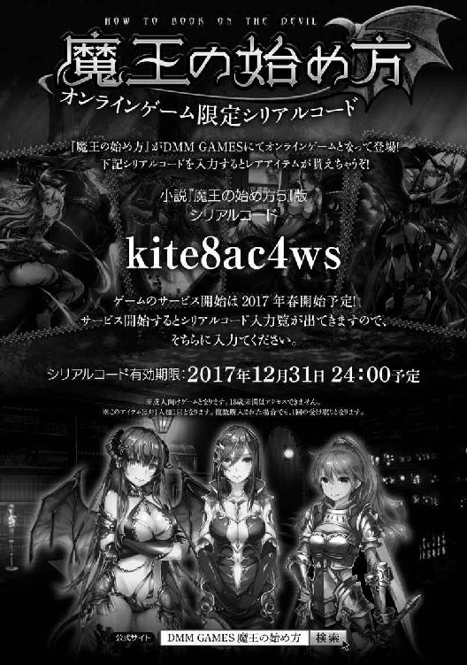
１
「おかえりなさいませ、旦那様」
「うむ......今帰った」
三週間を本拠地で過ごし、新大陸のダンジョンへと戻ったオウルは、床に正座して深々と頭を下げるサクヤに少しばかり気まずい面持ちでそう答えた。
言い換えれば、三週間の間放っておいたということでもある。
オウルとて遊んでいたわけではないが、他の女と過ごしてきたところにこうまで丁寧に対応されればかえって気が引ける思いがした。
「気にしないで御館様。姫、天然だから」
「うむ......姫は多少、そういった機微に疎いところがあります故」
フォローするホデリ、ホスセリ兄妹の言葉に、サクヤは不思議そうに首を傾げた。
「あっ、オウルさまだー。おかえりなさーい」
「今帰った。留守中ご苦労だったな」
そこにオウルの気配を察知したのか、マリーが姿を見せた。
彼女も何度か本拠地に帰ってはいたものの、基本的にはソフィアの世話とダンジョンの管理とで新大陸の方で過ごしていた。
「どうしたの、ソフィ。パパが帰ってきたよー？」
マリーは振り向き、扉の後ろに視線をやった。どうやらそこにソフィアがいるらしい。
「なに？ 恥ずかしいの？ ほら、おいで」
マリーが手を引いてオウルの前に引き出すと、ソフィアは不機嫌そうな表情でオウルを見つめた。
「ソフィ────」
「パパなんて......」
オウルがかけようとした声を遮り、彼の四方を岩壁が囲む。
それと同時に、彼の足元に魔法陣が浮かんだ。まずい、と思った時にはもう遅い。
岩壁を排除しそこから抜け出す一手のうちに、魔法陣はその力を発揮する。
「だいきらい！」
ソフィアの言葉と共に、オウルは自分の身体が落下していくような感覚を覚えた。
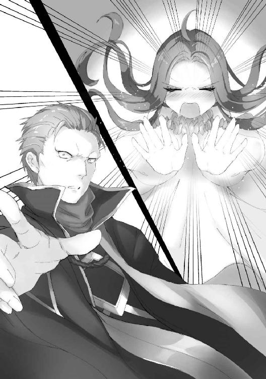
その奇妙な浮遊感は、転移によるものだ。
気づけばオウルは森の入り口に飛ばされていた。
「ソフィアの奴め......」
油断していたとはいえ、見事な手際にオウルは怒ったものか感心したものか、少し悩む。
「オウル、大丈夫？」
マリーからの連絡を受けたのだろう。すぐさまユニスが跳んできた。
「ああ。転移先が石の中やマグマの中だったら厄介だったが」
「流石にソフィアもそこまではしないでしょう」
「......だといいがな」
何故ソフィアがこのような暴挙に出たのか。
心当たりがないではないが、正確なところはわからない。
「大嫌いとまで言われたのだ。何が起こるかわからん」
「んー。確かにちょっとご機嫌ななめみたいだね」
生真面目な表情で真剣に言うオウルに、ユニスは苦笑した。
オウルは森のダンジョンを構成する木々に触れ、魔術による干渉を試みる。
しかし案の定、木々の壁は一瞬形を変えようと蠢くだけで、すぐに元に戻ってしまった。
「完全に乗っ取られたな」
「オウルにしては珍しいね」
このような状況を予想していなかったわけではない。
だが手の打ちようがなかった。ソフィアはダンジョンそのものなのだ。
その干渉力はどうしたってオウルより強い。
「まあ躾ける良い機会だ。行くぞ。供をせよ」
「はっ」
「うん」
オウルの言葉に呼応しホデリとホスセリの兄妹が姿を現して、ユニスは目を丸くした。
「どこから出てきたの？」
「俺が転送される瞬間、開いた岩の間から飛び込んできたのだ」
「殿を守れというのが、姫様の命でありますれば」
跪き、硬い口調でホデリは答える。
彼らは別に隠れていたわけではない。ただ己を殺し、ないものとしてオウルの傍に従っていただけだとユニスは気づいた。
ユニスでさえ、彼らが言葉を発するまでその存在に気づかないほどに。
「さて、それでは────」
オウルは深い森を見据え、言った。
「我が娘のダンジョン。真っ向から攻略してくれよう」
「なんか嬉しいな」
森の道を行きながら、不意にユニスはそんなことを言い出した。
「オウルが昔、ウィキアやファロたちと一緒にオウルの迷宮を探索したことあったじゃない？」
「あったな、そんなことも」
それはもう随分昔の話だ。迷宮の出来を冒険者の視点から評価するため、そして冒険者自体の練度を見るため、オウルは旅の魔術師のふりをして迷宮に潜ったのだった。
「あれ、あたしもついていきたかったんだけど」
「お前が来たら評価にならんだろうが」
「だから、嬉しい」
朗らかに笑うこの小柄な少女にかかっては、あの頃のダンジョンが侵入を防げたとは思えない。
「今回は本気の探索だ。全力を出していくぞ」
「うんっ。本気ってことはー」
ユニスは剣を抜き、閃かせる。
オウルが気づいた時には剣は既に鞘に収まり、枝葉で作られた壁がばらばらと崩れ落ちていた。
「こういう風に進んでもいいってことだよね？」
「まあ、そうだが......」
マリーと二人で探索した時と比べて、壁の耐久性が下がったわけではない。むしろソフィアが支配することによって上がっている。
恐ろしいことに、ユニスは理力を使っていなかった。
純粋に力と速さと技で迷宮の壁を切り裂いたのだ。
「本気といえば......お前は本当に腕を治さなくていいのか？」
ユニスの作った近道を歩きながら、オウルはホデリに問うた。
オロチに喰われた彼の左腕は二の腕の半ばから断たれたまま、袖だけが揺れている。
「構いませぬ。腕を失ったのは某の未熟故」
一度はオウルも治療を施したのだが、ホデリはその腕をすぐに切り落としてしまった。
再生した腕を以前と同じように振るうことはできない。
そんな腕ならば、ない方がマシなどと言ってのけたのだ。
「まあ、このダンジョンの防衛力はさほどでもない。問題はなかろう」
「そうなの？」
「ああ。まず、今回の目的は侵攻ではなく偵察だったからな。そもそも侵入者を想定しておらんのだ」
以前のように周囲の村々を焼き滅ぼしたり、街を攻め落としたりしていればすぐに敵はやってくるだろう。だが今回、オウルにそのようなつもりはなかった。故に防衛力は最小限のものでしかない。
その割には侵入してきた愚か者も多かったが、とオウルは思う。
タツキとヤマタノオロチ......実質どちらもタツキのようなものだった。
「それに、これだ」
木の壁を撫でて、オウルは渋面を作る。
「このようなスカスカの壁では、瘴気を溜めることもできん」
「空から抜けていっちゃうもんね」
何本もの木が連なってできたその壁は人間の通過を阻むには十分だが、風は自由にその間を通り抜けていってしまう。
「故に妖魔や魔獣といったものを呼び寄せることもできず、大した戦力は集まらんというわけだ」
「......それは、どうでしょうな」
「何？」
オウルの言葉に異を唱えたのは、ホデリだった。
「御館様はとても聡明で物知りだけど......こちらには詳しくない。古来から、森には妖が棲むもの」
ホスセリが兄の言葉を補足するように、ぽつりとそう呟く。
「それはもしかして──」
オウルの言葉と共に、
「こいつらのことを言っておるのか？」
無数の石つぶてが、彼らに降り注いだ。
石つぶてとはいっても、握りこぶし大のそれが頭に当たれば容易く人を殺しうる。
ある意味で矢よりも驚異的な存在である。
が。
オウルのキューブが自動的に防壁を展開し、全てを弾く。
ユニスは雨のように降り注ぐそれを、僅かな動きで軽くかわす。
チン、と音がしたかと思えばホデリに向かった石は全て両断されて地面に転がり。
ホスセリは無数の石を手のひらで受け止めては、片端から投げ捨てる。
彼らにとっては何の障害ともならなかった。
「然様。小鬼めにございまする」
いつの間に抜き放ったか、ホデリは片刃の剣を向けて前方を睨んだ。
「小鬼だと？」
そこにいたのは、身長一フィート（約三十センチ）程度の、醜い顔をした人型の生物だった。
「ゴブリンではないか」
「でも色が違うよ」
それはオウルたちのよく知る妖魔に似ていたが、緑色をしているゴブリンに対し、小鬼たちは赤い肌をしていた。着ている服もなんとなくヤマト風ではある。
「彼奴らは一匹一匹は大して強くはござらんが、多数で群れ、知恵が回り、罠を張ることもありますのでご注意を」
「ゴブリンではないか！」
大方何かの拍子で流れ着いたものが、独自に繁殖したのだろう。肌の違いは食べ物の差か、はたまた気候の違いか......などと思考を巡らせかけて、オウルは考えるのをやめた。
「まあ良い。この手合いであれば扱いは心得ておる」
ずいと一歩踏み出して、オウルは小鬼たちに歩を進めた。
途端、小鬼たちは蜘蛛の子を散らすように逃げ出そうとし......そして、自分たちの背後に壁があることに気づいた。
何故退路を塞がれているのかわからないままに彼らは慌てふためき、近づいてくるオウルに怯え戸惑う。
だがオウルの足が落ち葉の絨毯を踏みしめた時、その表情は邪悪な笑みに歪められた。
その下に、彼らの掘った落とし穴があったからだ。
落とし穴に落としてしまえば、体格差など意味を持たない。
後は上から石を投げつけ、死ぬまで槍で突くのだ。
自分たちより遥かに大きな体躯を持つ人間たちが落とし穴に嵌まって苦しみ、よじ登ろうとしては槍で突かれてまた落ちていく様は何度見ても滑稽で愉快な光景だ。
しかし、そんな小鬼たちの目論見は失敗に終わった。
オウルは落ち葉の上を、何事もないかのように歩んでいったからだ。
「逃げぬのか？」
呆然とする彼らの目の前で、オウルは地の底から響くような低い声で尋ねた。
逃げるといっても背後は塞がれている。
小鬼どもは慌てふためき、オウルの足元を横切って逃げ出そうとする。
その身体が、落ち葉の中に沈み込んだ。
落下した身体の上にばさばさと無数の落ち葉が降り注ぎ、小鬼たちは混乱に暴れもがく。
何故自分たちだけが落とし穴に落ちているのか、彼らには全く理解できなかった。
小鬼たちは我先にと互いの身体を踏み台にして穴を這い上がろうとするが、互いに蹴落とし合い、醜く罵りあい、小突き合いながらではそれもままならない。
それでもなんとか要領よく上り詰めた者が落とし穴のふちに手をかけようとすると、その指先は何もない空中でつるりと滑った。まるで、そこに見えない壁があるかのように。
何度も何度もそれを繰り返し、ようやく上からは出られないと悟った小鬼たちは、ならば地中を逃げようと穴の底で横穴を掘ろうとしだす。
しかし脆いはずの土壁は、いくら鉈を叩きつけ、槍を突き込み、爪を突き立てても、傷一つつくことはなかった。
彼らには理解できるはずもない。
井戸のような形に変化したオウルの見えざる迷宮が落とし穴を丸ごと囲い、哀れな小鬼たちをすっぽりと覆い尽くしてしまっていることなど。
「小さく愚かな者どもよ」
それを見下ろしながら、オウルは語りかけた。
「服従を誓え、などとは言わぬ。汝らの身にはすぎる故。我に従え、とも言わぬ。汝らの頭にはすぎる故」
彼が開いた手のひらをかざすと、怒った小鬼たちがそれぞれ持った石や武器を投げる。
しかしそれは穴を塞ぐ不可視の天井に阻まれて跳ね返り、小鬼たちの頭に降り注いだ。
「故にただ、我を畏れよ」
オウルが伸ばした指を曲げ、何かを掴むかのように手をゆっくりと閉じていく。
すると轟音と共に、小鬼たちのいる穴底の壁が動いた。
「言葉が通じずとも、顔を覚えられずとも、名を知らずとも良い。その血の続く限り、汝らが末の末まで────我を、畏れよ」
小鬼たちは徐々に狭くなる穴底にゆっくりと潰されながら、しかし何もできずただただ恐怖に怯え震える。
「そら。出口だ」
オウルの手元からカタカタと音を立て、キューブでできた階段が小鬼たちのいる穴底まで伸びていく。
ぎゅうぎゅうに詰まった小鬼たちは、しかし一匹としてその階段を登ろうとはしなかった。
その先に、彼らにとって何よりも恐ろしい存在がいるからだ。
「よし。行け」
オウルはその反応に満足すると、背を向けそう命じる。
すると小鬼たちは一目散に階段を登って逃げ出し、瞬く間にその姿を消したのだった。
２
「見事な調伏でしたな」
「何が見事なものか。たかがゴブリンごときに」
ホデリの世辞に、オウルは吐き捨てるように答える。
「いやいや。小鬼風情と侮ったものではござらぬ。なるほど彼奴らは矮小にして怯懦。ですが狡猾で、何より残忍です。恩も恥も知らぬ奴らを侮り、何人の兵が煮え湯を飲まされたか」
ホデリは小鬼たちが、背を向けたオウルに攻撃するだろうと思っていた。
しかしそうはならなかったのだ。
「ただ単に脅しただけではない。呪をかけたのだ」
恐怖をその魂に刻みつける呪いは小鬼たち自身のみならず、その血を受け継ぐ子や孫たちにも伝わっていく。
ゴブリンの繁殖能力は非常に高い。
小鬼も同様であるとするなら、呪いは一年もする頃には全員に行き渡るだろう。
「ゴブリン大事だもんね」
「まあ、俺のダンジョンにおいてはそうだな」
ユニスの言葉に、オウルは頷く。
弱く小さく、しかし数だけは多いゴブリンたちは、ダンジョンにおいて貴重な食料源だ。様々な魔獣や大型妖魔の餌となりながら、しかしどれだけ食べてもいなくなるということがまずない。
「しかしそれもゴブリンより弱い生き物が殆どおらぬせいだ。案外この森程度であれば、奴らが王者のごとく振る舞っている可能性も......」
オウルの言葉は、曲がり角を曲がったところでその先にあった光景に途切れた。
艶やかに光る鉄のような黒い身体は、まるで竜の鱗のように分厚く。
毒々しいオレンジ色の足は数えきれないほどに生え。
長い長い触角がゆらゆらと蠢き。
バリボリとゴブリンを咀嚼しながら、巨大な四つの目でオウルたちをじっと見つめている。
それは巨大な......あまりにも巨大な、ムカデだった。
平たい身体をしているのに、頭だけでオウルの背よりも高い。
ましてや全長はいかばかりのものか。
「散れ！」
オウルが叫ぶと同時、大ムカデは凄まじい速度で突っ込んできた。
その大顎での一撃をかわしながら、眉間の部分にユニスが一撃を叩き込む。
「うわっ、硬い！」
だが黒々とした表皮はほんの僅かに凹んだのみで、ユニスの剣は硬質な音を立てて弾かれた。
目標を捉え損ねた大ムカデの大顎がバキバキと音を立てながら噛み砕いた木々が、シュウシュウと煙を立てて腐れ落ちていく。ただ挟まれるにしても、毒を受けるにしても、ただ事で済みそうにはなかった。
「厄介な相手だな。できれば殺したくはないが......」
「ミオ連れてくる？」
「......いや。あれは無理だろう」
魔獣の類であれば瞬く間に手懐けてしまうミオの異能だが、彼女が虫の類を世話しているのは見たことがなかった。オウルのダンジョンにもジャイアントスパイダーやジャイアントフライといった虫型の魔獣は多数いる。恐らくは無理なのだろう。
それにユニスの転移は一日にせいぜい四、五回程度しか使えない。既に一度使っている今、手札を使い切ってしまうことは避けたかった。
「我々にお任せくださらぬか」
「なんとかする」
どうしたものかと悩んでいると、ホデリとホスセリが声を上げた。
「できるのか？」
相手はユニスでさえ歯が立たないような相手だ。
無論負けることはないだろうが、生け捕りにするとなれば難しいだろう。
「うん」
「わかった。任せる」
しかし自信有りげに頷くホスセリに、オウルは対処を任せることにした。
そうする間に、大ムカデはギチギチと顎を鳴らしながらその身体を地面に潜り込ませる。
「こいつ、地下を......！」
堅牢なはずのダンジョンの壁や床も、これほどの大きさの魔獣となればお構いなしだ。
とはいえ流石にさっきの速度で地中を掘り進めるわけでもない。
恐らく真下を通る迷宮の中を進んでいるのだろう。
ならば、オウルにはできることがある。
「ホデリよ。奴が出てくるならそこだ」
地下の通路と地上の通路の交点。あれほどの巨体をぐるりと巡らせて出てこれそうな場所は限られていた。
「承知仕った」
オウルがキューブで作り上げた目印に向かいながら、ホデリは片刃の剣を鞘に収めた。
数拍後。
何の予兆もなく突如として地下から大ムカデが顔を出し、ホデリに向かってそのあぎとを大きく開き──
次の瞬間、大ムカデの前足が左右二本、切り落とされていた。
「すごい......」
ユニスが目を大きく見開き、感嘆の声を漏らす。
大ムカデの硬さは外殻でも脚でもそう差はない。
襲い掛かってくる大ムカデの速度を利用して、関節部を切り落としたのだ。
言うは易しだが、地中から高速で足を動かしながら襲い掛かってくる大ムカデに対してそれを行うのは至難の業だ。少なくともユニスにはできない。
オウルにはホデリが切り付ける瞬間どころか、剣を抜いたところさえ捉えられなかった。
だが、足を二本切り落としても、大ムカデにはまだ九十八の足がある。
どうするつもりかと見守るオウルは、ふとホスセリの姿が見えないことに気がついた。
「オウルあそこ！」
ユニスの指を辿ってみれば、ホスセリは大ムカデの足に取り付いていた。
そのまま何でもないような動作でするすると上ると、大ムカデの背を走っていく。
激しく身体を揺らしながら暴れまわる大ムカデの背の上を、だ。
そして彼女は頭の後ろ、第一節と第二節の間にしゃがみ込むと、腰の後ろにつけた剣を抜いた。
ホデリの使うものと同様に片刃だが、反りはなく幾分短い。
何か液体が塗られているのか、濡れた刀身がぬらりと輝いた。
体重をかけ、ホスセリは関節部分に剣を差し込む。
だがあの巨体にあの長さの剣では致命傷にはなるまい。
オウルがそう思っていると大ムカデの動きは見る間に鈍っていき、やがて動かなくなった。
「御館様。やった」
ホスセリはオウルに駆け寄ると、そう報告した。
表情にも声にも変化はないが、パタパタと自慢げに振られる犬の尾が見えるかのようだった。
「何をした？」
「毒を盛った」
オウルの問いに短く、ホスセリは答える。
「毒だと？ あれほどの大きさの生き物に効く毒を持っているのか？」
致死毒にせよ麻痺毒にせよ、効果を及ぼすにはその生き物の体重に見合った量が必要になる。あの大ムカデに効くような毒となると、竜すら殺せるのではないか。
オウルがそう思って尋ねれば、ふるふるとホスセリは首を振った。
「持ってないし、殺してもいない」
「どういうことだ？」
現に大ムカデは毒の効果で動きを止めている。
「ホスセリが盛ったのは、麻痺毒にござる」
要領を得ないホスセリの説明を見かねて、その兄がそう説明を重ねた。
「麻痺毒？ だがそれならば余計におかしいではないか」
基本的に、致死毒よりも麻痺毒の方が必要量は多くなる傾向にある。
身体の中枢、脳や心臓といった重要部位を破壊すれば良い致死毒に対し、麻痺毒は全身に回る必要があるからだ。
「全てに効かせる必要はない。見て」
不審がるオウルに、ホスセリは大ムカデの身体を指差した。
「ムカデはあれだけの足を持って、絡ませずに歩く」
百足というが、その足は実際には百よりは少ない。
しかしそれでも無数にあるその足をもつれさせることなく進めるというのは不思議なことだった。
「でもそれは、ムカデの頭がいいわけじゃない。ただ単に、一つ前の足と同じ動きを順に伝えているだけ。だから......」
ホスセリは剣の切っ先で、切り落とされた一本目の足と二本目の足の間をトンと突く。
「一本目を切り、ここにある経路だけを麻痺させてしまえば、もうムカデは動けない」
「なるほどな。大した知識だ」
一対二本の足だけを己の意思で動かし、後の足は一つ前の足と同じ幅だけ動かす。
確かにその方法であれば、何本足があろうと絡まることはない。
「忍びは毒に精通する。ムカデの毒もよく使うから」
魔王すら知らない知識を容易く披露するホスセリに、オウルは感心して頷く。
「ホデリの剣も凄かったよねえ。スパーって」
「斬れる場所に刃を通しただけのこと。果実の皮を剥くのとそう違いはござらん」
言葉少なにホデリは言うが、それが謙遜であることくらいはオウルにもわかった。
「さて」
オウルはくるりと大ムカデに向き直る。
死んでしまったかのように見えるそれは、よく見れば触角だけがひらひらと動き回っていた。
「せっかく生け捕りにしてくれたのだ。これを使うとするか」
３
「わあ、すごいすごーい！」
一面に広がる空の青と木々の緑。そしてその上を滑るように走る感覚に、ユニスは歓声を上げた。
「あ、あまり乗り出すと危ないのではござらぬか」
顔を引きつらせ、足を震わせながらホデリ。
「兄さん、情けない」
そんな兄の姿に、ホスセリは溜め息をついた。
「そう心配するな。振り落とすようなヘマはせん」
言いながら、オウルは魔力を寄り合わせて作った手綱を振るう。
彼がまるで馬のように操り、一行が乗っているもの。
それは先程倒した大ムカデだった。
虫には魅了の術の類は殆ど効かないが、魔力を流し込んで強引に支配してしまうのはむしろ容易い。
百の足を自在に動かせと言われればいかなオウルとて難しいが、前足二本だけを操れというならば造作もないことだった。そうすれば後は勝手にムカデの身体がその動きを後ろに伝え歩いてくれる。大ムカデの身体は滑らかに木々の上を這って、殆ど揺れさえ起こさずに森の上をするすると進んでいった。
前半身は高く掲げられ、オウルたちの乗っている頭付近は森の遥か上、空の只中。
確かに落ちればただでは済まないだろうが、平たいムカデの背の上は意外と良い乗り心地で、目には見えないがキューブで部屋状に周囲を囲っているから万が一にも落ちる心配はない。
何よりそうして進むと、地上を歩いていては見えなかった森のダンジョンの様子をよく見渡すことができた。
「思いの外、棲んでいるものなのだな」
そうして森を眺めていると、大ムカデの進行から逃げていく魔物たちの姿がよく見える。
小鬼のような人型をしているもの、狼や蛇のような獣の姿のもの、意思を持つように動く炎や土の塊にしか見えないものや、木の肌に浮かぶ目玉が開いては閉じてを繰り返して移動するものなど、オウルにも一体どのような存在なのか窺い知ることすらできないようなものまでが何匹も見られた。
「俺がマリーと探索した時は、樹人の出来損ないみたいなものしか出てこなかったものだが」
「殿の威を察して逃げていたというのもありましょうが......恐らく大部分は最近、棲みついたのでしょうな。神の住まう森となれば、あのような怪生たちには居心地がいいものです」
「そんなものか」
腑に落ちない様子で、オウルは相槌を打つ。
彼の感覚で言えば、神と魔とはけして相容れない存在だ。
それが共存しているというのは不思議な話だが、理力と魔力を矛盾させず内包する彼らの力はその辺りに理由があるのかも知れない、と思った。
「しかし、やはりここにはいないようだな」
オウルが呟き見下ろすのは、かつて彼がソフィアを見つけた場所。
森のダンジョンの中心、ダンジョンシードが設置されている場所だった。
「火山の方かな？」
「であろうな」
ユニスの言葉に、オウルは頷く。
神というのは基本的に自分の支配する領域から離れたがらないものらしい。
だがソフィアは森の神ではなく、ダンジョンの神だ。
ダンジョンの中であれば、どこにでも自由に移動できた。
オウルを拒絶するなら最も奥。試練の山の最上階だろう。
「でもなんでソフィアは、オウルを飛ばしちゃったんだろうね」
「さてな。長く相手をしてやらなかったから拗ねたか、あるいは母であるマリーを差し置き、他の女たちと睦まじくしていたことに腹を立てているのか......」
いずれにせよ、本人に会って問い質さないことにはわからないとオウルは考えた。
大ムカデはあっという間に森のダンジョンを踏み越えて、火山のダンジョンの麓にまで辿り着く。
「よし、ここまでで良い。ご苦労だったな」
オウルは大ムカデの頭をぽんと叩くと、森の中心近くまで戻る信号を送った。
ここから先はあの図体では移動が難しいし、ムカデは熱に弱い。
それにあの強さならば、森のダンジョンにとって良い守護になるだろう。
「......御館様は、すごいね」
大ムカデを見送るオウルの横顔に、ホスセリはぽつりとそう言った。
「何がだ？」
「怖くないの？」
問えば更に質問が返ってきて、オウルは首を傾げる。
「あのムカデのことか？ お前たちが無力化し、術で制御したのだろうが。何を恐れる必要がある？」
オウルの答えに、ホデリとホスセリは互いに顔を見合わせた。
「殿。そうではなく、斯様な異形を馬の代わりに乗りこなすことに抵抗はないのか、とホスセリは聞いておるのです」
「女子供ではあるまいし、虫ごとき怖がる必要がなかろうが」
いまいち要領を得ないホデリの言葉に、オウルは呆れる。
まさか震えていたのは落下の危険性にではなく、虫が怖いからなどと言うつもりだろうか？
「姿形に頓着されぬと申されるか」
「抱く女の見目ならともかく、魔物の姿形に何の意味がある？」
「......ならば」
「兄さん。待って」
ホスセリの制止を無視して、ざわざわとホデリの姿が変化していく。
猛禽を思わせるような細く鋭い瞳はまるで穴のように白目のない真っ黒な真円となり、唇が頬まで裂けたかと思えば鋭い牙が生え揃う。鼻が盛り上がり、顔全体が円錐のような形に突き出して、腕を細かい鱗がびっしりと埋め尽くした。
「我らが人間ではないとしても、同じことを言いなさるか」
「お前、その姿は一体......」
しゃがれたような、耳障りな声色で尋ねるホデリに、オウルは思わず呟く。
「恐ろしかろう。醜かろう。これでも見目など関係ないと申されるか」
「いや、見た目はどうでもいいが。一体何の動物だ、これは？」
牙はあるが狼でも獅子でもない。鱗はあるが、竜でも蛇でもない。
全く見覚えのない生物の顔立ちを、オウルは眉根を寄せながら無遠慮に触った。
「こ、これは鰐にござる」
「ワニ？ 馬鹿を言うな。ワニといえばあの、水辺に棲む竜の出来損ないみたいな大蜥蜴であろうが。このような姿はしておらんぞ」
鱗は硬質な手触りの割に弾力性があり、撫でる方向によって手触りが全く違う。鼻先から首元に向かって撫でれば滑らかなのに、逆だとざらざらとした感触があった。
「あ、ほんとだ、おもしろーい」
そのことを口にすればユニスまでが面白がって触りだし、ホデリは困惑しながらもただされるがままに撫でられる。
「わかったぞ。お前は、サメだ！」
「ああ、そう呼ぶ場合もあるのでしたか......」
ようやく正体に思い当たり、オウルはうむと満足げに頷く。
「確かに水生生物の獣人とは珍しい。この俺ですら初めて見た。なるほど斯様に珍奇な生き物であるなら見目を気にするも無理はないやも知れぬな」
「ち、珍奇......？」
一人納得するオウルに、ホデリは頭を抱えた。
彼の想定していたものとオウルの反応は、あまりに違っていた。
「御館様、私は？」
気づけばホデリを止めた妹まで、その本性を露わにしていた。
手足は深い毛に覆われ、髪の間からはピンと尖った三角形の耳が突き出し、尻からはふさふさとした尾が伸びている。
見るもおぞましい、野獣の姿。山犬の顔を持った娘など、誰が好こうか。
抱いた女がこのような見目と知ったら、流石に嫌悪するのではないか────
「お前は珍しくもなんともないな。狼の獣人などそれこそ我が迷宮には何百といるぞ」
そんなホデリの予想は、さして興味もなさそうなオウルの平坦な声にまたしても裏切られた。
「というかなんだ。お前たちは兄妹と言っていたが、血の繋がりはないのか？ 別の種族だったとは」
「......我々は元々こうだったのではございませぬ。神の呪いにて異形に成り果てた身」
そう、呪いだ。気まぐれな神の怒りに触れ、人ならざるものへと変えられた。
聞くもの全てが恐れ嫌う、穢らわしい話を、ホデリは苦々しく語る。
「なんだ、では呪いを受けただけで人間なのではないか」
オウルはあっさりとした様子でそう言った。
「人、と......我々を、人と認めてくださるのか」
震える声で、ホデリは問う。
「当たり前だろう」
神に仕える存在だから、オウルはてっきり彼らのことを天使や悪魔のような存在だと思っていたのだ。
そういった者たちは厳密には生物ですらない。
新しい命を育むことも、食事を取ることもないからだ。
それに比べれば多少獣が混じっていようが、妖精由来だろうが、オウルにとっては人の範疇だった。
「御館様、私、変じゃない？」
「お前はむしろついている方が自然なくらいだな」
じっと見つめてくるホスセリに言うと、表情は変わらぬまま尾だけがぶんぶんと振られた。
実にわかりやすい。
「じゃあまた抱いてくれる？」
「大丈夫だよー。オウル、手足が鳥になってる子とか、下半身が蛇の子とか、全身が水みたいになってる子でも顔が可愛ければ全然いけるから」
オウルが答える前に、ユニスがそう言って「ね？」と顔を覗き込む。
確かにハルピュイアもラミアもウンディーネも抱いたことはあるので、オウルは何も言えなかった。
「流石は、姫の認められたお方だ......」
深く感じ入ったように呟くホデリに、どういう意味だとオウルは内心叫ぶ。
「俺は魔王だぞ。魔を統べる者が、種族だの見た目だのでどうこう言うものか。人と違うのであれば、その違いをもって役立てればそれで良い」
「御意に」
弁明するようにそう言うとホデリは跪き、腰の剣を鞘ごと引き抜いてオウルに掲げた。
ホスセリもその横に並んで、それに倣う。
それはオウルの知らない仕草だったが、武に生きる者が武器を捧げることの意味くらいは見当がついた。
オウルは彼らの剣を受け取ると、鞘から引き抜いてその刀身を見つめる。
緩く弧を描く刃には独特の紋様が浮かび、一点の曇りもなく輝いている。
大ムカデを切り裂くほどの実用性を秘めていながら、それはまるで芸術品のような美しさだった。
「良き剣だ」
オウルは言ってその剣で彼らの肩を軽く叩き、鞘に収めて返す。
「能く仕えよ」
「はっ！」
兄妹は揃って剣を受け取り、深くその頭を垂れた。
４
「さて、探索としてはここからが本番だ。気を抜くなよ」
ダンジョンに作り替えられた火山は、以前のような岩壁が剥き出しになった溶岩洞とはまるで違う雰囲気になっていた。
でこぼことした地面には石畳が綺麗に敷かれ、溶岩の流れる河は丁寧に埋められて、規則正しく道の続く通路となっている。
「前より歩きやすいように思えまするが」
「そうか」
ホデリの言葉に、オウルはキューブを掲げた。直方体の石の塊はパタパタと展開して長い杖となると、十一フィートほど先の床をこんと突く。途端天井が開いて、オウルの鼻先から十フィート先までを滝のように流れる溶岩で埋め尽くした。
「......失言でござった」
「理解を得られたようで何よりだ」
オウルたちが赴いた際もこのような罠はあったが、それはサクヤがオウルたちの動きを見ながら自身の力で都度溶岩を動かしていただけだ。
それに対していま発動したものは、純粋にオウルが仕掛けた機械的な罠にすぎない。
油断すればすぐに侵入者の命を奪うだろう。
「これに加えてソフィアの妨害が加わる可能性がある。各自くれぐれも油断せぬように──」
オウルの言葉を遮るように、みしりと不吉な音が鳴った。
「走れ」
地面を割って噴き出したのは、溶岩ではなく大量の海水だ。
こんなことができるのは一人しかいない。であれば、この場に留まるのは下策だった。
「オウル、失礼するねっ」
とはいえこの中で一番足が遅いのは、魔術師であるオウルだ。彼の身体をユニスがひょいと抱え上げ、横抱きにして走る。小柄な身体のどこにそんな力があるのか、それでもユニスは誰よりも速く駆けた。
「殿！ これしきの波、某が本性を現せば！」
「待て、ホデリ！」
言うが早いか、ホデリの身体はみるみるうちに巨大な鮫へと変化する。そしてオウルが止める間もなく、濁流の中にその身を投じた。
「お乗りください、殿！」
「止まるな、ホスセリ！」
押し寄せる海水の中でその身を躍らせながら叫ぶホデリに、ホスセリが一瞬足を止めかける。だがオウルの叱咤に彼女はこくりと頷くと、ユニスの後を追って走った。
「殿、ご安心めされよ！ この姿は仮にも神を運びし神獣のもの、背に乗られれば息も──」
その時ガコンと音がして、ホデリの行く先、その床に穴が空いた。
「ぬおおおおおおお！」
ホデリは懸命に滝のように落ち行く水の流れに逆らい、登ろうと泳ぐ。しかしその尾を、同じく魚に似た尾を持つ娘がぐいと引いた。
タツキだ、とオウルがその顔を認識した時には既に、ホデリの身体は大量の海水と共に穴の中に消え去っていた。
「オウル、どっち!?」
なおも押し寄せる海水から逃げながら、ユニスは前方の分かれ道を示して言った。
「右だ！」
オウルの言葉に迷わずユニスは右の道へと向かう。
が、一歩踏み出したところでその足ががくりと沈み込んだ。
こちらにも落とし穴だ。
「しまっ......っ！」
いつものユニスであれば、その状態からでも開いていく落とし穴の蓋を蹴って跳躍し、回避できただろう。だが彼女は今、オウルをその両手に抱えていた。流石にその状態では跳ぶこともできず、彼女はそのまま落下する。二人の後を追って、ホスセリは躊躇なく落とし穴へと飛び込んだ。
良い判断だ、と内心で呟きながら、オウルはキューブを伸ばしてホスセリの身体を引き寄せる。
「これで良い。これが、最短経路だ」
両手にユニスとホスセリとを抱き寄せながら、オウルは周囲を見えざる迷宮で覆った。この落とし穴は殺傷を目的としたものではなく、侵入者の捕獲のためのものだ。
捕獲された獲物はどうなるかといえば当然迷宮の奥へと連れ去られるのであり、そのための通路もまた落とし穴の奥に用意されている。故に、この道を行くのがもっとも手っ取り早かった。
オウルたちはそのまま、液体がなみなみと湛えられたプールの中へと飛び込む。それは侵入者を殺さないように落下の衝撃を和らげる緩衝材であり、同時に捕らえるための仕掛けでもあった。
「なんだ、これは!?」
だがその中身は、オウルの記憶にあるものと別物に入れ替えられていた。彼が用意したのは強力な粘着力を持つ一種の接着剤だ。故に、見えざる迷宮を展開して周囲を囲っておけば捕らわれることなく回避できるはずだった。
だがそこにあったのは、オウルが想定していたよりも遥かに粘性の低い液体だった。オウルたちを覆う見えざる迷宮は、その名の通り入り組んだ迷宮の形をした防御壁だ。粘度の高い接着剤であれば防げただろうが、殆ど水と変わりのないその液体は迷宮の中へと縦横に流れ込んで、オウルたちを呑み込んだ。
「なんだ、これは......」
とはいえ粘性が低い分、逃れることも簡単だ。
オウルたちは先へと続く通路に這い上がると、身体に絡みつく粘液に顔を顰めた。
「毒じゃない」
「ああ。毒などというものは、空気に触れさせておけばすぐに変質する。このような使い方はできぬから、それは安心していいが......」
己についた液体をぺろりと舐めて言うホスセリに、オウルはそう解説しながら内心で首を傾げる。
毒性もなく、特に魔力を帯びているわけでもないその液体は、本当に少しべとつくくらいの液体でしかなかった。これでは動きを封じるどころか、ほんの僅かに戦闘力を削ぐこともできないだろう。何の意味もないように思えた。
「ホデリは大丈夫かな」
「あれだけの海水と共に落ちたのだ。溺死の心配がないならかえって安全であろう」
タツキに食われてなければいいが、と思いつつそれは口に出さずにオウルは言った。
最近は仲間意識が芽生えているようだから大丈夫だとは思うが、次の瞬間に何をしているか最も想像がつかないのがタツキという女だ。
ソフィアに手を貸しているのか、単にふざけて遊んでいるのかすらわからなかった。
「うん。兄さんはしぶとい。心配しなくていい」
「あ、うん。命の心配はしてないんだけど」
と、ユニスはやや言いにくそうに。
「一人だけ罠に引っかかっちゃって落ち込んでないかなって」
ああ、とホスセリは頷いた。確かに、改めてオウルに仕えると誓った直後のことだ。気にしているかも知れない。
「あたしもお兄様がいるからなんとなくわかるんだけど、男の人って強くても結構精神的に脆かったりするよね」
「確かにそういうところはある」
兄を持つ妹たちの会話を聞きながら、唯一の男であるオウルは居心地悪そうに渋面を作った。
「そら。無駄口を叩いている場合ではないぞ。客だ」
通路の奥から殺到してくる魔物たちを示せば、ユニスの表情はあっという間に妹から一流の戦士のそれへと変貌した。この一瞬の切り替えがユニスの頼もしいところであり、恐ろしいところでもある。なおホスセリの方は常に無表情で、こちらはこちらで底知れない。
襲い掛かってきたのは、人の顔に虎の身体、蛇の尾を持つ奇妙な魔獣だった。
それが何十匹と群れを作り、こちらへと向かってきている。
「マンティコアという魔獣だ。尾に強力な毒があるから気をつけろ」
「あれは鵺。尾の蛇の毒は強いから気をつけて」
それを見据え、オウルとホスセリは同時に言って互いに顔を見合わせた。
「まあどっちだろうと、斬っちゃえば同じだよね」
ユニスは軽い口調でそう言って、雷光のように群れの中に切り込むと剣を一閃させる。その一撃は魔獣の太い首を、三頭まとめて切り落とした。
「わぷっ！」
かと思えば、その死体は木の葉の塊となってユニスに降り注ぐ。
「これは、ユツの術か！」
「ああもう、鬱陶しい......ごめんオウル、一匹そっち行った！」
そしてその光景に、オウルはようやく先程張られた罠の狙いを悟った。
粘性の低い接着剤は動きを封じるためのものではない。
木の葉を張り付かせるためのものだったのだ。
ユニスはその全身に木の葉を纏わりつかせながらも、剣を振るう。一度振るう度に魔獣が一匹木の葉に変わり、それが更に彼女の身体にへばりつく。へばりついた木の葉は動きを鈍らせ、視界を塞ぎ、不愉快な感触に平常心を奪う。
地味だが、効果的な罠だった。
「全てが木の葉ではないはずだ！ 本体が一匹どこかにいる。そいつを倒せ！」
「そんなこと、言われても、わぷっ......どれがどれやらだよー！」
ユニスは顔に木の葉を受けながら叫ぶ。ただの幻術であれば見破るのは容易いが、木の葉でできているせいか、それとも魔術ではないからか、ユツの幻術はとかく見破りづらい。オウルでさえ、一瞬で看破するというわけにはいかなかった。
「今俺が、炙り出す」
だが、対処法がないわけではない。オウルは印を組み呪文を口にすると、手のひらを重ね合わせるようにして胸の前に構える。その間にちろりと炎が生まれたかと思えば、それはあっという間に膨れ上がり、奔流となって魔獣たちを包み込んだ。
マンティコアにしろ鵺にしろ、それしきの炎で死ぬほどヤワではない。が、姿形は魔物に化けても、その本質は木の葉だ。火をつければ覿面に効いた。
ホスセリが天井からぶら下がり、残った最後の一匹の首筋に剣を差し込む。
それが本物で間違いなかったようで、魔獣はどうと地面に倒れ伏した。
ホスセリの姿が見えないと思えばいつの間にあんなところに、とオウルは半ば呆れつつも感心する。
「さっすがオウル。攻撃魔術使うところなんて久々に見たけど、相変わらずの精度だね」
オウルの炎は通路全体を埋め尽くしていたが、ホスセリやユニスには火傷どころか火ぶくれ一つなかった。威力はさほどでもないが、その狙いの精密さだけで言えばオウルは間違いなく当代屈指の魔術師だ。
「流石にこれだけを燃やすのは無理だがな」
ユニスの頬についた木の葉を一枚取ってやって、オウルは嘆息する。
一人最前線で戦っていただけあって、彼女は全身殆ど木の葉まみれだった。
これほど張り付いていては、流石にちょっとやそっとでは取れそうもない。
「うん。さっさと攻略して、お風呂でも一緒に入ろう」
「その時はお供する」
「終わったらな。気を緩めるなよ」
さり気なく身を寄せてくるホスセリの頭をぽんと叩いて、オウルは嘆息する。
油断していたわけではないが、致命的な効果を持たない罠に対しては警戒心も薄れる。
粘液を乾かしてから進まなかったのはオウルの失態......というよりも、ソフィアの手柄だろう。
己にはない罠の発想に、我が子の成長を喜びつつも悔しく思う気持ちがあるのも、また否定できなかった。
「あっ」
更に通路を進んでいると、にわかにユニスが嬉しそうな声を上げる。
彼女の視線の先にあったのは。
「オウル、温泉だよ！」
────ホカホカと湯気をたちのぼらせる、湯溜まりの池だった。
５
「ねえオウル、入ってもいいかな」
「良いわけなかろうが」
うきうきとしたユニスの声とは対照的に、オウルは低い声で答えた。
居住区ならまだしもダンジョンのこんな只中に、そうそう都合よく温泉があるわけがない。
あまりにもあからさまな罠だった。
「適温。毒もない」
「だからといってこんな見え透いた罠に嵌まれるか」
跪いて湯に手を差し込むホスセリに、オウルは辟易としながら言い返す。
「でもあたしこんなんだし」
木の葉まみれの身体で両手を広げながら、ユニスは言った。
木の葉こそ被ってはいないが、オウルも粘液自体はたっぷり浴びている。
乾いてきたそれは何やらチクチクと痒みを帯びてきて、不愉快なことこの上ない。
オウルとて元々、ダンジョンを作れば真っ先に湯殿を設計するほどの入浴好きである。入りたくないわけがなかった。
オウルは念のため周囲を丹念に調べ上げ、固定された罠がないことを確認する。
しかしそれはあまり意味のないことだった。
ソフィアはその気になれば、迷宮のどこにでも即座に罠を作り上げることができるからだ。
「......油断はするなよ」
オウルは溜め息をつき、キューブを椅子の形に変えて座り込んだ。
流石に自分も入ろうとまでは言えない。
「やったー！」
喜び勇んで、ユニスは服を脱ぎ捨て湯に飛び込む。
ホスセリも丁寧に服を畳むと、それに続いた。
「はー、気持ちいいー」
「御館様も入ったら？」
「うんうん。オウルもおいでよー」
「流石にそこまで油断できるか」
湯の中で手足を伸ばして息を吐く二人に、オウルは渋面を作りながら答える。
二人の美女がその健康的な裸身を晒しながら手招きする光景は正直酷く魅惑的だったが、流石に身内とはいえ敵対しているダンジョンの中で寛ぐわけにもいかない。
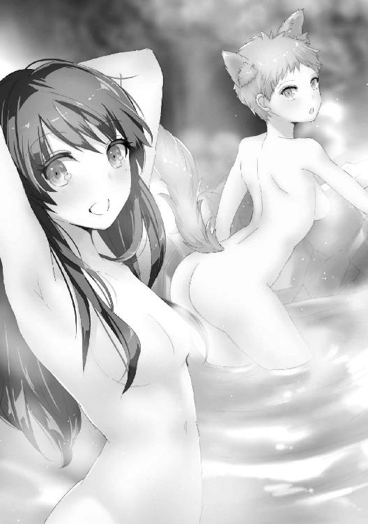
「こんなに良い湯なのにねえ」
湯船の縁にもたれかかり伸びをするようにユニスが身体を反らすと、水面下に隠れていた彼女の膨らみが露わになる。褐色の肌の先端を彩る蕾は子を産み母となった今も美しい薄桃色で、思わずむしゃぶりつきたくなるような瑞々しさだ。
「まさに。この湯を味わわないなんて、御館様は人生の八割を損している」
リラックスしたのか先程まで隠していた山犬の耳と尾を晒しながら、ホスセリは猫のように四つん這いになって身体を伸ばす。背筋はしなやかな弓のように優美な曲線を描き、水面に浮かび上がった白い尻から伸びた尾は誘うようにゆっくりと振られる。
「わざとやっているだろう、お前たち」
露骨なアピールに溜め息をつきつつも、オウルは彼女たちの媚態から視線を逸らしはしなかった。
「にしても、気持ちよすぎて眠くなってくるね......」
「おい、流石に油断しすぎだろう」
ふああ、と欠伸を漏らすユニスにオウルは釘を刺す。
「私も......眠く、なって......」
しかしホスセリまでもが船を漕ぎ出して、オウルは何かがおかしいと気づいた。
──何故、自分たちは風呂になど入っている？
オウルが疑問に思った瞬間、ガコンと音がして湯船の底が開く。
「そう同じ手を何度も喰らうか！」
オウルはそれを予測していた。見えざる迷宮は既に温泉全体を器のように覆っていて、底が開いても湯の一滴も漏れ出ない。
が。無数の小さな転移陣が床に浮かぶのを見て、オウルの顔色が変わった。
「狙いはそちらか......！」
手のひらほどの大きさのそれは、人間大のものを転送するほどの力は持っていない。
それが転移させているのは、ユニスとホスセリが脱いだ衣服だった。
キューブはすっかり眠りこけてしまっているユニスたちを支えるのに使ってしまっていてこれ以上伸ばすことができない。仕方なく、オウルはともかく近くにあったものに手を伸ばした。
「ごめん、まさか眠っちゃうなんて」
「面目ない」
「良い。油断は俺にもあった」
流石に申し訳なさそうな二人に、オウルはしかめ面でそう答えた。
油断と言っても、普段の彼らがあそこまで気を抜くなどということはありえない。
「あれは恐らく、法術によるものだ」
「あ、マリーか！」
魔術や物理的な罠であればオウルが、毒や薬であればホスセリが見破れるが、法術ばかりは見つけるのが困難だ。
法術というのは無から有を生み出す魔術と違って、元々の性質を強めることが得意だという。オウルたちの心に刻み込まれた、風呂は安全で寛げる場所であるという意識を強めるような法術がかかっていたのだろう。
ユツがソフィアに協力しているのだから、マリーが協力していることもまた予想すべきだったのだ。それを事前に気づけなかったこと自体が油断と言える。
「まあでも大丈夫だよ！ 剣はオウルが拾ってくれたし。攻撃は避けるから」
ユニスは腰の剣をぽんと叩いて言う。だがその身には鎧どころか服すら着ておらず、剣帯の他には腰と胸を隠す下着だけが覆っていた。褐色の肌と白い下着のコントラストは、全裸よりも情欲を誘う。
「忍びは己の肉体を凶器とする訓練も積んでいる。何も着ていない方が強いくらい」
だがそれはまだマシな方で、ホスセリに至っては何も身につけていない、生まれたままの姿だ。流石に見かねたオウルがローブを貸そうかと提案したが、動くのに邪魔になると断られてしまった。
二人ともそんな格好をしながら全く恥ずかしがるような様子もなく、前衛の務めとばかりにオウルの前を歩く。
下着に包まれたユニスの大きめの尻と、きゅっと引き締まったホスセリの尻が目の前で揺れる。
流石に前が突っ張って歩けない、などという愚を犯すほどに若くはないが、なかなかにその光景は目の毒だった。
「あっ、また敵だ。行くよ！」
「服なんて要らないということを証明してみせる」
次に襲い掛かってきたのは、かつてオウルが試練の山に足を踏み入れた時に襲い掛かってきたのと同じ、一つ目の鬼であった。マリーとユツでは苦戦していた相手だが、ユニスとホスセリにとっては敵ではない。
押し寄せるように迫りくる鬼どもを片端から斬り捨てていく。
宣言した通りユニスは相手に影をも踏ませず、ホスセリの蹴りや手刀は剣にも比類する鋭さで鬼の首を刎ねていく。
だがその度に乳房が揺れ、美しい脚が躍動する。ホスセリなど、大きく脚を上げて蹴りを放つものだから秘部までもが丸見えになっていたが、全く頓着した様子もなかった。
「やっと片付いたー。大して強くなかったけど、数だけは多かったね」
「これは姫様が呪で作った式鬼。いくらでも生み出せる」
優に百体は倒しただろうか。二人は呼吸一つ乱すことなく一つ目鬼たちを撃退したが、温泉で温まった身体で運動したからか、しっとりとした汗を滲ませていた。それがまたなんとも言えず扇情的で、オウルはしかめ面にますます力を込めた。
「オウル、大丈夫？ 怪我でもした？」
そんなオウルを、ユニスが間近から見上げる。小柄だが均整の取れた体つきは鍛えられているにもかかわらず女性的な丸みを失っておらず、薄い胸の膨らみもこうして下着姿で見ればしっかりと谷間を形作っていて、目の前から上目遣いで見られると凄まじい破壊力があった。
「いや、何の問題もない。何もな」
緩みそうになる口元をぐっと引き結んで言えば、ユニスは不思議そうに首を傾げ、ホスセリは勘付いて言う。
「口だけで良ければ、抜いてあげようか」
「要らんわ、愚か者っ！」
オウルの怒鳴り声が、迷宮に響き渡った。
「にしても、お風呂に入って運動して、ちょっとお腹空いちゃったねえ」
ユニスがそんなことを言った矢先のことだった。
通路の先、小さな部屋にホカホカと湯気を立てる料理が用意されていたのは。
「......いや、食べないよ!? 流石にね!?」
疑わしげなオウルの視線に、ユニスはぶんぶんと首を振る。
「毒はないみたい」
「いや、食べないってば......」
念のため毒の有無を確認するホスセリに言いつつ、ユニスはふと何故こんな罠があるのか考えた。
いくらなんでもこんなのに引っかかる馬鹿がいないことくらいは、ユニスにだってわかる。
だがソフィアの罠は先程から、見た目はともかく中身は見事なものだった。
何せオウルさえ引っかかるほどなのだ。
そこまで考え、ユニスは気づいた。気づいてしまった。
自分がこんな罠に引っかかる馬鹿だということに。
「ごめんオウル、あたしこれ食べる......」
「正気か!?」
こくりと頷きながら、ユニスは椅子に座って手を合わせると、食事前の祈りを捧げる。
口をつけてみれば案の定、料理は既に少し冷め始めていた。
「一体何故......」
ユニスが魔術や法術で操られているわけではないことは、既に確認済みだ。
彼女は彼女自身の意思で、食事を取っている。
「だってぇ......」
泣きそうな声で、ユニスは答えた。
「これリルの作ったご飯なんだもん～......」
食事を取ることのできないリルが料理を習得するのにどれほど苦労してきたのか、その味見役を引き受けていたユニスが一番よく知っている。
親友が丹精込めて作った料理を食べずに冷めて台無しにしてしまうことなど、ユニスにはどうしてもできなかった。
しかもその味付けがまた、オウルではなくユニス好みのものになっていて。
「あの悪魔めぇ～、美味しいよう～」
呪詛を吐きつつ、ユニスはもぐもぐと料理を噛み締める。
「ご馳走様でしたっ！」
全ての料理を食べきって、パンと手を合わせたところで、彼女の身体は座っている椅子ごと落とし穴の中に落下した。
「ユニス────────！」
念のためキューブで床を覆い、転移にも対応できるように魔術の準備をしていたのに、それらは全く役を果たさなかった。見えざる迷宮さえ透過して落とし穴に落とすような真似が可能なのは一人だけ。ミシャまでもが協力していると見て間違いなかった。
となれば、ユニスが転移で復帰してくるのも期待できない。ミシャの境界を操る権能は、繋ぐだけでなく遮る側にもその効果を発揮するからだ。
「......認めねば、なるまい」
ホデリが容易く脱落し、装備を剥ぎ取られ、ユニスまでもが罠にかかった。
油断がなかったとは言えないが、この結果はそれだけではない。
ソフィアの作り上げた罠が、純粋にオウルの上を行っているのだ。
「だがまだ、ダンジョンマスターとして負けてやるわけにはいかぬ」
オウルはもはや形振り構わず、この迷宮を攻略することを決めた。
６
「あれ？」
「どーしたのー、ソフィア」
暇そうにテーブルに突っ伏しながら、リルは怪訝な声を上げるソフィアに尋ねる。
罠や魔物に苦戦するオウルたちとは対照的に、こちらには極めてのんびりとした空気が流れていた。
「パパがいなくなっちゃった」
ソフィアが言うと同時、虚空にいくつもの映像が浮かんだ。
それこそがソフィアが見ている景色。ダンジョンの中の様子だった。
通路や部屋など様々な場所の景色が映っているが、そのどれにもオウルの姿は見られない。
映像は次々に切り替わっていくが、ダンジョンのどこにもオウルはいないようだった。
「一旦ダンジョンの外に出て態勢を仕切り直し......ということでしょうか？」
「あー、わたしわかっちゃった。多分こういうことでしょ」
「うむ。そういうことじゃ」
首を傾げるサクヤに、付き合いの長いリルはオウルのとった手段を予想してテナに視線を向ける。
オウルの行動とリルの答えとを両方予見して、テナは頷いた。
「あやつの行動は我にも読めぬからな。此度は一体何をするやら」
「ボクにも全然わからないです」
「おうるもごはんたべにかえったのかなー？」
ミシャが楽しげに腕を組みながら言い、ユツは生真面目に考え込んで眉根を寄せ、タツキは本日三回目の昼食をもぐもぐと頬張りながら首を傾げる。
「殿はこちらにお出でなさるのか？ 某は一体なんと言って詫びれば......」
「大丈夫大丈夫、オウルはあのくらいで怒ってないから」
「どっちかっていうとユニスの方が酷いよね」
頭を抱えるホデリに気楽な調子でユニスが言い、マリーはそれを見て苦笑した。
「だってリルのご飯だもん！ 食べなきゃ！」
「うんうん、嬉しいけど、あなた馬鹿でしょ」
リルは呆れながらも、ぐっと拳を握って力説する親友の頭を撫でる。
「リルのごはん、おいしいもんね」
その後ろで、タツキがこくこくと頷いていた。
「わかんないよー、ママ、いじわるしないで教えてよう」
「だーめ。わたしたちは中立。力は貸してあげるけど、どうするのかを考えるのはソフィアの役って言ったでしょ？」
困ったように眉を寄せるソフィアに、マリーはそう言い聞かせる。
「それに......どっちにしろ、そろそろ到着するんじゃないかな」
マリーがそう言った瞬間のことだった。
突然天井が爆発したかと思えば、瓦礫がソフィアの頭上に降り注ぐ。
その瞬間、反応したのは三人だった。
ユニスの斬撃が虚空を飛んで、巨大な岩を粉々に打ち砕く。
次いでサクヤが扇を振るうと、空間が爆ぜてまだ形を残す石の塊を崩す。
最後にタツキが食事をもぐもぐと食みながら尻尾をちょいと動かせば、海水が竜巻のように巻き起こり、落下する砂礫を攫って洗い流した。
ソフィアの身体には、砂粒一つかからない。
「捕まえたぞ、この悪戯娘め」
驚きに目を見開いて反射的に天井を見上げるソフィアを、オウルは床に空いた穴から飛び出し、抱きすくめた。
「反撃は......せぬか」
油断せず構えを解くことなく、オウルは一同を見渡す。
「しないよー。ここまで辿り着いた時点でオウルの勝ちだし」
リルの言葉にひとまず頷き、オウルはソフィアを床に降ろした。
やはりユニス、サクヤ、タツキの戦闘能力は頭抜けている。ユニスはともかくサクヤとタツキに迎撃されては堪らないので先にソフィアを狙って攻撃したが、どうやらそれは杞憂のようだった。
「で。一体どういうつもりか、説明してもらおうか」
「パパ、どこから出てきたの？」
オウルの質問に、ソフィアは問いで返す。
「無論、俺のダンジョンからだ」
嘆息しつつ、オウルは種明かしをした。
「この火山のダンジョンは元々溶岩洞だけあって、ダンジョン化されている部分以外にも多くの空洞がある。それを魔術で探知して転移し、俺自身のダンジョンをお前の中に新たに作って掘り進んできたのだ」
何せ溶岩洞の中を流れるマグマは魔力の塊。形を持った龍脈のようなものだ。ダンジョンコアがなくとも魔術は使い放題で、もう一つ小さなダンジョンを作ることは造作もなかった。
「いつかのスピナと同じ手ね」
リルの言葉に、まさか弟子の真似をする羽目になるとは、とオウルは頷く。
「ソフィア。お前の弱点はダンジョンしか知らぬこと。その外に注意を向けなかったことだ。だが侵入者は常に......」
オウルの説教は、ソフィアの表情の前に途切れた。
顔をくしゃりと歪め、今にも泣きそうな目で彼女はオウルを見つめる。
「パパは......」
そういえば、ソフィアはへそを曲げていたのだった。
そんなところに説教などするものではなかったか。
「パパはわたしより、自分のダンジョンの方が良いんだ！」
そんな考えは、ソフィアの叫びの前に消し飛んだ。
「な......どういうことだ？」
「パパはソフィより、おっきくて、べんりで、つよくて、きょうあくな、あのこの方が好きなんだもん！ ソフィなんていらないんでしょ！」
捲し立てるように言うソフィアの価値観に、オウルは目を剥く。
構ってやれていなくて拗ねている。他の女に嫉妬している。
オウルの予想は二つとも当たっていたが、同時に二つとも見当外れだった。
まさか嫉妬の対象が他のダンジョンだとは、思いもよらなかったのだ。
「馬鹿なことを、言うな」
そう言いながらも、オウルは助けを求めるように視線をさまよわせる。
だがリルもユニスもマリーも、気まずげに視線を逸らした。
彼にとってダンジョンというものが何よりも大事だと知っているからだ。
それは別に、妻たちを軽んじているわけではない。むしろその逆とも言える。
オウルにとってダンジョンとは身内を守る壁であり盾であり家だ。
失われれば仲間を守ることができず、それ故にその価値は仲間の総和にも等しい。
が、そんな理屈はソフィアに対しては通用しなかった。
なぜなら彼女自身がダンジョンであるからだ。
オウルのダンジョンは、ソフィアを決して守れない。
「パパはソフィより、自分のダンジョンの方が大事なんだもん......」
お前の方が大事だ、と嘘をつくのは簡単だった。
老獪な魔術師にかかれば幼い子供一人騙すことなど容易い。
「......そうかも、知れんな」
だがオウルにはどうしても、そうできなかった。
彼は片膝をつきソフィアと視線の高さを合わせると、涙を浮かべた瞳を見つめる。
「だがそれは、お前のことを大事だと思っていないということではない。俺にとってはどちらも等しく娘。お前にとっては姉のようなものだ。どちらの方が好きだなどとは言えぬし、要る要らぬで語れる話でもない」
「お姉ちゃん......？」
いくらか落ち着いた様子のソフィアに、オウルは頷く。
「そうだ。それにあちらには一年も会っていなかったのだぞ。再会を喜んでやらねば、そっちの方が可哀想だろう。わかるな？」
諭すように言えば、ソフィアはこくんと頷いた。
「うむ。ソフィアは良い子だ」
頭を撫でてやればようやく笑顔が見えて、オウルはほっと胸を撫で下ろす。
「パパ、ソフィアの中、よかった？ 楽しかった？」
「ああ。上出来と言ってよかろう」
何せ真っ当に攻略することは諦め、奇手を使わざるを得なかったのだ。
ダンジョン探索者としてのオウルは敗北したと言っていい。
「やったあ！ もっともーっと頑張って大きくなって、お姉ちゃんやママたちみたいにソフィの中で楽しんでもらうんだ！」
「姉はわかるが......マリーはダンジョンではなかろう」
「でもいつもパパ、ママや他の女の人の中に入って楽しんでるでしょ？」
ソフィアはダンジョンそのものだ。
無論、その中での行動は全て彼女に筒抜けになっているわけで。
「......今度から、俺の寝室の中は覗かぬようにしろ」
「え、なんで？」
首を傾げるソフィアを説得するのには、へそを曲げた時よりも大変な労力を要したのだった。
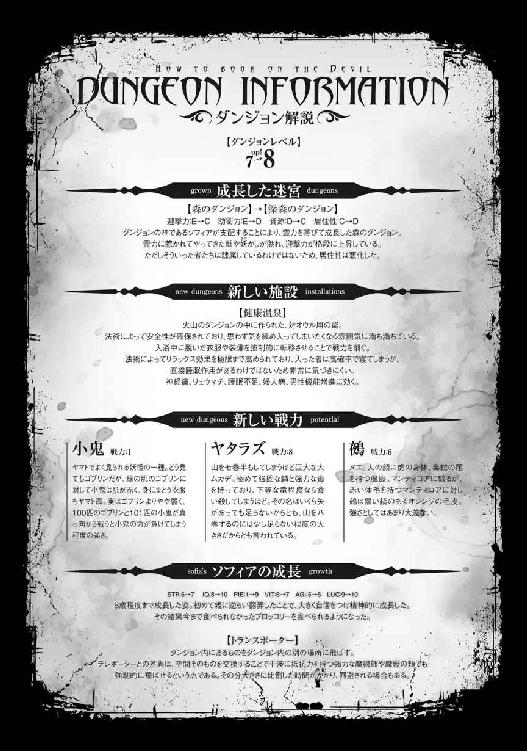
杯に注いだ琥珀色の液体を、ぐっと喉に流し込む。
灼けるような喉越しに思わず顔を顰めるが、オウルは一息にそれを飲み干した。
「珍しいこともあるものだ」
野太い声が突然、背中から降り注ぐ。
一瞬前までそこには何の気配もなかったはずだが、彼ならオウルに悟られずに近づくことなどわけはないのだろう。
「貴様が酒を飲むなど。......しかもそれに」
身の丈六フィート半（約二メートル）、豊かな髭を蓄えた偉丈夫。
「俺を誘うなどとはな」
英雄王、ウォルフ。今は英霊となり白く染まったかつての王は、オウルの横にどっかりと腰を下ろした。
「......まあな」
オウルは無愛想に答え、スピナの分体が二人の杯に無言で麦酒を注ぐ。
「おお、すまんな。では......何に乾杯する？」
「別に祝い事があるわけではない。そんなことをするような仲でもなかろう」
「つれぬなあ、義理の息子よ」
笑って酒を飲み干すウォルフに渋面を作りながら、オウルもそれに倣って麦酒を口にする。
酒はあまり好きな方ではないが、飲んででもいなければやっていられなかった。
「......英霊は、酒を飲めるのだな」
「おう。必要ではないが、飯も食えるぞ。飲み食いすれば多少なりと身体を賄うことはできる」
ウォルフほどの大英霊ともなれば、その召喚に必要な理力は莫大なものとなる。それを軽減するために、顕現しているウォルフはよく飲みよく食べた。
「いつぞやはマリーに手を貸してくれたな。礼を言う」
「ああ。あの程度、別になんでもない。若い娘の身体に宿るというのもなかなか愉快な体験よ」
言って下卑た笑みを見せるウォルフの様子には、かつて王として相対した時の威圧感はまるでなかった。恐らくはこれが、ウォルフディールという男の素の姿なのだろう。似ていないと思っていたが、その雰囲気はどこかユニスに通ずるものがあった。
「......だがそんな話をしに呼んだわけではあるまい？」
見透かすように言うウォルフに、オウルは杯を飲み干す。
機械的な動きでスピナはその杯に麦酒を注いだ。
「......こいつは命令に従う知性のみを残し、自らの意思で行動したり記憶したりすることのない特別製だ。まあ、気の利いたゴーレムのようなものと思えば良い」
「ほう」
スピナを指してオウルが言うと、ウォルフの目が僅かに鋭く細められた。
つまりこの場に話を聞いているものは、オウルとウォルフしかいないということになる。
これはよほどの話であろう、とウォルフは表情に出さぬまま覚悟だけを決めた。
「────には、どうすればいい？」
「なんだ？」
オウルの言葉を捉え損ね、ウォルフは聞き返す。
「娘を幸福にしてやるには、どうすればいいのか、と聞いておる」
一瞬の沈黙。
その後、まるで爆発するかのような笑い声が、小さな酒場の中に響いた。
「笑うな。恥を忍んで聞いておるのだ」
「いや、すまぬ。だがどんな大事かと思えば......そうか、魔王も人の親か」
「俺の娘はどうやら人ではなさそうだがな」
吐き捨てるように、オウルは言った。
「関係あるまい。娘は娘、悩むは同じことであろう」
未だ笑いの余韻を残しつつも、ウォルフは表情を真面目なものに取り繕う。
「思えば俺もユニスには随分手を焼かされたものよ」
「それだ」
酒を煽るウォルフに、オウルは頷く。
「ウォルフよ。お前は親としての先達だ。そしてユニスのような娘を立派に育て上げた父でもある。恥を忍んでお尋ねする。どうしたら、父親は娘を幸福にしてやれるのだ？」
「なるほど。娘を幸せにする方法か......」
ウォルフはゆっくりと腕を組み、しばし瞑目した。
「その極意とは！」
眉間に力を込めるウォルフに、オウルはごくりと喉を鳴らす。
「そんなもの、ありはせぬ！」
「ふざけているのか!?」
そして出てきた回答に、思わず叫んだ。
「ふざけてなどおらん。大体、親が子にしてやれることなどごく僅かよ。俺がしてやれたのは、アレの母が言い残したように、自由に育てさせてやっただけ。幸せにしてやるなどとは烏滸がましいにも程がある。赤子の頃ならいざ知らず、既に歩く力を持った子に親ができることなど、せいぜいが進む道を邪魔せぬようどいてやる程度のものよ」
だがウォルフは生真面目な表情で、オウルを見下ろす。
「だが......俺は、全てはお前が敷いた道だったのではないかと思う時がある。ユニスを英雄として殺し、英霊として俺のもとへと遣わした。ユニスが幸福になるにはあの道しかなかったし、それを指示できる人間はお前しか」
「随分買いかぶってくれたものだ。ふん。晩年こそ賢王だ英雄王だと持て囃されたが、俺の根など所詮は喧嘩馬鹿よ。そんな先まで見通すことなどできるものか。偶然だ、偶然」
英雄は長く生きるほど、その最期にも濃く影を落とす。ウォルフは若い頃に出会った何人もの英雄の末路から、それをよく知っていた。故に、ユニスを苦しめぬようザイトリードに命じて殺させた。
この男ならばあるいは天を相手に一矢報いるかも知れぬと思いはしたが、まさかその後一家で英霊として呼び出されようなどとは、誰が想像するものか。
「だが......」
「もしそれが偶然でないというのならば、魔王オウル」
なおも言い募るオウルの瞳をしっかと捉え、ウォルフは言った。
「それはお前がやったのだ。お前が、ユニスを幸福にしたのだ」
考えてもいなかったのか、オウルは目を大きく見開く。
「俺は頼むと言い、お前は引き受けた。そして今アレは子を成し、幸せそうだ。......ならば誰の功であるかなど、考えるまでもあるまいよ」
そこまで言ってウォルフは酒を飲み干して、息をつく。
「感謝せねばならぬのは、俺の方だ」
そして、深く頭を下げた。
「......ああ」
非公式の場とはいえ、稀代の戦士にして王の頭だ。軽いものではない。
オウルは頷き、不器用にその謝意を受け取る。
気まずげに彼が酒に口をつけたところで、ウォルフは顔を上げると意地の悪い笑みを浮かべた。
「故に娘が幸せになるかどうかは、親ではなく連れ合いに依るということだな」
途端、オウルは口に含んだ酒を噴き出しそうになる。
「つ、連れ合いだと!?」
「そうだ。お前の娘もいずれは知らぬ男をつれてくるのだろうな。認めれば娘はとられ、認めねば娘に嫌われる。なんとも素敵な話ではないか」
「馬鹿を言うな、ソフィアはまだこんなに小さいのだぞ。そんな話は早すぎるわ」
「ふっ。愚かなり魔王。子の成長は早いぞ。特に娘ともなればあっという間よ。光陰矢の如しというが、女の成熟ときたら雷光よりも早い。ついさっきまで赤子と思っていた娘が、気づけば化粧の真似事など始めるのだぞ」
ぐ、とオウルは言葉に詰まる。確かにソフィアはつい最近まで赤ん坊だと思っていた。
ソフィアに限って言えばそもそも物理的に実際成長が人間よりも遥かに早いのだが、酔った頭ではそこまで思い至らない。
「そんな馬鹿な話があってたまるものか！ この死に損ないめ、地獄に落ちてしまえ！」
「オウルよ。恩人よ、俺から宝を奪っていった憎き男よ！ ならば俺はその地獄とやらからお前の宝が同じように奪われていくのを、楽しみに見物させてもらうぞ。高笑いしながらな！」
ははははは、と高笑いするウォルフの杯に、スピナはとくとくと機械的に酒を注ぐ。
酔った二人は気づいていない。目の前の女の姿をしたスライムに、飲み終えるという機能がついていないことを。
無限に注がれる酒を飲み干し続け。
翌日オウルは、二日酔いに苦しむことになるのだった。
１
「服を脱げ」
エレン、セレス、ミオの三人は、呼び出されるなりオウルから発せられた言葉に、思わず顔を見合わせた。
彼の寝室に来いと言われたのは昼食を終えた後のこと、真昼間と言って良い時間帯。
確かにオウルは好色な王ではあるが、性根は生真面目だ。
日中にわざわざ呼びつけて、というのは珍しいことだった。
とはいえ否やがあるでもなく、三人は言われた通りに服を脱ぎ始める。
「待て、下は良い。上だけ脱いでおけ」
セレスがまずスカートの中の下穿きをするりと抜くとオウルはそんなことを言い出して、三人は再び顔を見合わせる。今日の主人は随分とマニアックな趣向をお試しになるらしい。
「言っておくが、別に今からお前たちを抱くわけではない」
そんな妻たちの視線に気づいたのか、オウルはやや憮然としながら何やら軟膏のようなものを取り出した。
「今からお前たちに、『鍵』を付与する」
琥珀色をしたそれは指先につければとろりと伸びて、軟膏と言うよりは絵具に近い。
「その呪をかける処置をするだけだ。妙なことは......」
言いかけて、オウルは眼前の光景に目を奪われる。三人の妻が言われた通りにすっかりと準備を整えて、その胸をさらけ出していたからだ。
張りに満ち満ちてツンと尖ったエレンの乳房や、たっぷりとして蕩けるほどに柔らかそうなセレスの胸は言うに及ばず、普段の服装からは想像もつかないほど立派なミオの双丘も、その控えめな佇まいと相まってかえって強烈な存在感があった。
それらが三対六つ並んだ様子は、まさに絶景という他ない。
「──考えるでない」
思わずむしゃぶりつきたくなる気持ちを押し込めてオウルは言った。
彼がその光景に見とれていたのは僅かに一瞬だったが、妻たちは敏感にそれを察して忍び笑いを漏らす。
「これは全てオウル様のもの。お好きな時にお好きなようにされて構いませんのに」
「やかましい」
オウルは絵具をたっぷりと掬い取ると、セレスの胸元に叩きつけるようにして塗りたくった。
「んっ......」
途端、ぴりりと走る感覚に、セレスは声を漏らした。
「魔力を通しながら塗るからな。少し痛むかも知れん。堪えられぬようなら言え」
「い、いいえ......痛くはありません」
ふるふると首を振り、セレスは答える。
事実彼女が感じているのは痛みではなく──
「んぅっ！」
微かな快楽であった。
オウルの指が肌を撫でていく度、その経路に沿うようにして痺れるような甘い疼きが走る。それは彼の描く紋様が大きく複雑になっていくほど倍増されて、セレスは喉の奥から漏れ出る喘ぎを懸命に堪えた。
「ふ、ぁん......っ」
だが喘ぎを我慢する姿が余計に艶めかしいことにまでは、考えが至らなかった。
セレスの水晶のような透けるほどに白い肌が赤く染まり、耐えるように目を伏せて震える様は同性のミオですら息を呑むほどだった。
「次はエレンだ」
くたりとしてベッドに横たわるセレスを背に、オウルはエレンに向き直る。
「うむ。私は白の姫君のような無様は晒さんからな。安心してくれ」
エレンは自信満々そう言って、オウルに胸を突き出した。
その言葉は半分正解で、半分間違いだった。
「ああああっ！ だめぇっ、これ、きもちよすぎるのぉっ！」
彼女は全く堪えることなどなく十全にその快楽を甘受し、声高に喘ぎ、一度絶頂に至りさえした。
確かにセレスの様子とは全く違うが、どちらが無様かと言うと議論の余地があるだろう。
「お、お願いします......」
恐る恐る、といった様子で胸元を開くミオは、そういった意味ではもっとも善戦した。
彼女は喘ぎ声を漏らすことも、快楽に我を忘れることもなかったからだ。
「オウル様、オウル様、オウル様、オウル様......」
しかしオウル自身にとっては、愛おしげにオウルの名を呼び続ける彼女の様子が一番堪えるものだった。
「これで良い。後は乾くのを待つのみだ。乾けばその紋様は見えなくなるから安心しろ」
三人の身体に紋様を描き終えて、オウルは深く息を吐く。
「ふむ。では乾くのを待つ間少々暇だな」
「そうですね」
何やら意味有りげな視線をよこすエレンに、セレスが深く頷いて同意する。
「あの、オウル様。ここ、お辛くないですか？」
かと思えばミオまでもが、オウルの下腹部を撫で擦った。
「妙な気を回さんで良い。下手に動くと紋様がよれて書き直しになる。悪いが抱いてやることはできん」
例えば後背位のような直接胸元に触れないような体位でも、四つん這いになれば彼女たちの胸の大きさだとぎゅっと乳房が寄せられて絵具が滲んでしまう。肌の触れ合う正常位などもっての外だ。
「下手に動かなければ良いのだろう？」
「片手だけであれば、動かしても構いませんよね」
そう言って、エレンとセレスはオウルの腰に手を伸ばした。
「お口でなら、大丈夫ですよね」
半勃ちになったオウルの逸物をエレンとセレスのしなやかな指が擦り上げ、大きくなったその先端をミオがぱくりと口に咥える。
「確かにそれなら紋様は大丈夫だろうが......」
咎めだてする気力は、すぐに萎えた。三人が完璧なコンビネーションで、オウルのモノを攻め始めたからだ。
弓を巧みに操る繊細な指は、肉槍に持ち替えても健在なようだ。茶褐色と白色の指がまるで睦み合う蛇のようにオウルの男根に纏わりつき、絶妙に弱いところを擦り上げる。そしてそれに合わせて、ミオはその先端を舐め、唇で食むようにしながらちゅうと吸う。
「くっ......ミオ、上達していないか......？」
「れんひゅう、ひまひたはら」
オウルのものを咥えたまま、ミオは答える。つい先日同じように彼女が口で奉仕した時は、慣れない故にたどたどしいものだった。だが今は、オウルでさえ思わず呻いてしまうほどの舌技で攻めてくる。
今までどちらかと言うと消極的だった彼女が何か心境の変化でもあったのか。短期間で凄まじい上達を遂げていた。
「あん。オウル様ったら」
「良いぞ。主殿の好きに触ってくれ」
堪らずオウルがエレンとセレスの尻に手を伸ばすと、二人は妖艶な笑みを浮かべてそれを許した。胸の大きさは殆ど同じ程度の二人だが、尻の方は随分違う。むっちりとして揉みごたえのあるエレンの尻を鷲掴みにするようにしながら、セレスのほっそりとしたヒップを撫でるように味わう。
「ぐっ......出すぞ！」
そうしているとミオが一際強く吸い上げて、オウルは堪らずそう宣言した。
「はい......来てください」
ミオが唇を離すと舌を大きく伸ばして先端をチロチロと舐め、エレンとセレスの指がスパートをかけるように速度を速めながら擦り上げる。
呻くようなオウルの声と共にその先端から白濁が迸り、ミオはそれを大きく開いた口と舌とで受け止めた。だが大量に噴き出す精はそれだけで受け止めきれるものではなく、彼女の顔や小麦色の髪にも降り注ぎ、穢していく。
「すまぬ。大丈夫か」
顔いっぱいに精液を浴びたミオに声をかけると。
「......顔にも紋様を描かれちゃいましたね」
ミオは照れ臭そうにそう言って、笑った。
「おお、これは凄い」
エレンは思わずそう声を上げた。
「まさに......絶景と称するに相応しい光景ですね」
セレスもまた、目を丸くする。
「はー......」
ミオはもはや言葉もなく、ただただ感嘆の息を漏らした。
彼女たちの目の前に広がるのは、紅蓮の大瀑布。
視界いっぱいに流れ落ちる溶岩の滝であった。
「お前たちの足元にあるのが、各所に繋がる陣だ」
オウルは床の魔法陣を指差して言う。
そこには赤、緑、そして黄に輝く魔法陣が描かれていた。
「赤が火山の、緑が森のダンジョンの入り口へと繋がっている。そして黄が魔王宮......お前たちが今やってきたダンジョンから、ソフィアへと通ずる道だ」
最近オウルは、本拠地のダンジョンのことを「魔王宮」と呼ぶことに決めた。
魔王の迷宮であり、同時に魔の国の王宮という意味でもある。
そして今まで「新大陸のダンジョン」と呼んでいたものは「ソフィア」とか、「ソフィアのダンジョン」と呼ぶようになっていた。
「全てお前たちに描いたような、鍵を持つ人間でなければ通ることはできん。肌に傷を負う程度であれば問題ないが、解呪には気をつけろよ」
「鍵を持っていない者が通ろうとすればどうなるのだ？」
「運次第だ。いかに運が良かろうと居住区に飛ぶことはないが、運が悪ければ......」
エレンの問にオウルは言いながら、溶岩の滝へと目を向ける。
「あの中だな」
「なるほど、気をつけよう」
石の中に転移するならまだマシだ。苦しむほどの間もないし、少なくとも死骸はそこに残る。
いつか掘り出される望みがないわけではない。
しかし全身を溶けた石に焼かれながら死ぬのは相当の苦しみを伴うことは容易く予想できたし、後には骨も残らないのだ。
「さて、このままソフィアの中を案内しても良いが......」
オウルはチラチラと緑の魔法陣に視線を送る三人に嘆息する。
「森のダンジョンが気になるのだな」
「うむ」
「やはりアールヴといたしましては」
「見たことない動物が、たくさんいるんですよね？」
最後の一人の言葉に、どうやら森のダンジョンに行くことを希望しているのはどちらかというとアールヴたちではなさそうだとオウルは悟った。
「まあよかろう。行ってこい」
どうせそう言うだろうと思って、魔獣にもわざわざ『鍵』の呪を施し連れてこさせたのだ。
鋭い嗅覚と六つの瞳でけして敵を見逃さない三つ首の猛犬ケルベロスと、翼と毒を持ち魔術までも操る魔獣キマイラ。この二体に加え弓の名手であるエレンとセレスを森の中で倒しうる勇者など、ラファニス大陸全土を見回してもそうはいまい。
「......オウル様の迷宮には、あのような恐ろしい姿をした怪生がいるのですね」
ミオたちを見送ると、サクヤが姿を見せてそう言った。
そういえばこいつがいたか、とオウルは内心思う。縦横無尽に強力な火炎を操る彼女とは、ミオたちは相性が悪い。勝てないかも知れない相手の一人だ。
「まあ一番の化物はそれを連れた娘なのだがな」
「それでは、ホデリたちの本性を見ても小魚と子犬のようなものですわね」
扇で口元を隠しながら、その化物に完勝できる可能性のある女はクスクスと上品に笑った。
「本性か。神にかけられた呪いだとか言っておったが」
まさかサクヤがかけたものではないだろう。とすれば、敵対する神が他にいるということだ。
「いずこの神かは妾も存じません。ですがあの姿で放浪しているのを哀れに思い、名を与え人の姿を宿して以来、彼らは妾に従ってくれているのです」
「なるほどな......いや待て。話が合わん。奴らは代々お前に仕えていると言っておったぞ」
「あの呪いは子孫にも受け継がれるのです。ですから最初に拾ったのは、千年前だったか、二千年前だったか......」
記憶を掘り起こすかのように形の良い眉を寄せるサクヤ。
その凄まじい時間感覚に、オウルは絶句した。
「ねえ、パパ」
オウルがサクヤと過ごしていると、ふとソフィアが姿を現した。
「あの女のひとたちは、パパのおともだち？」
「ミオたちのことか？ まあ......そんなようなものだ」
流石に全て妻だとは言いづらく、オウルは言葉を濁す。
「じゃああの白い服の人たちは？」
「白い服だと？ 何人もいるのか？」
ソフィアの言葉に、オウルは首を傾げる。
セレスは白い服を着ていたが、今日は部下を連れてきていない。
「うん。たくさんいて......」
ソフィアで両手を掲げると、オウルの目の前に映像が映る。
「パパのおともだちと、けんかしてるの」
ごろり、と何かが地面に転がった。
オウルは己が見ている光景を信じられず、目を大きく見開く。
そこにいたのは、毛皮でできた衣服に身を包んだ何人もの男たち。
──そして、目を大きく見開いたまま地面に転がり、ぴくりとも動かないミオの姿だった。
２
「馬鹿な。奴らがこうも短時間でやられるだと!?」
オウルは叫びながら、右手で複雑な印を結ぶ。
彼女たちに付与した『鍵』には転移の魔法陣を通ることができるだけでなく、その位置や状態を知る機能もついていた。
そして返ってきたその反応に、オウルは沈黙する。
場所は森のダンジョン。ソフィアが映し出している場所で間違いなく。
──そしてその心臓は、完全に停止していた。
ミオだけではない。エレン、セレス。ついでに二体の魔獣もだ。
「......ソフィア。急ぎリルとユニス、スピナにこのことを知らせ呼んでこい。それとタツキに、テナの奴もだ」
「う、うん」
オウルはぎりりと歯を鳴らしながらも、沸き立つ感情を抑えてソフィアに命ずる。
たとえミオたちを容易く倒す実力があろうと、ソフィアのダンジョンを踏破するのはそう簡単なことではないはずだ。その間に戦力を整え、迎え撃たねばならない。
敵は春に攻めてくるというテナの予知を全面的に信じていたわけではない。
外れる可能性も無論考慮はしていた。
してはいたが、まさかこれほどの危機を見逃すとも思っていなかったのも事実であった。
「テナならすぐそこの部屋にいたはずです。妾が呼んで参りますわ」
「ああ、頼む」
サクヤが言って姿を消した、その瞬間であった。
緑の魔法陣が光り輝き、転移の兆候を示す。
「ミオか？」
振り向いたオウルを、光り輝く壁が取り囲んだ。
「馬鹿、な......」
そこにいたのは見も知らぬ、紫の髪の女だった。
分厚い毛皮の服に身を包んだ、どこか気品を感じさせる柔らかな物腰の女だ。
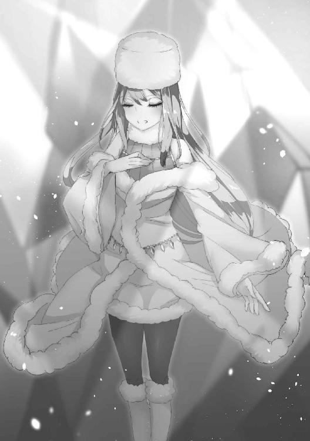
「お邪魔しますね。無作法を許していただけると嬉しいのですけれど......」
いや、正確にはオウルはその姿を知っている。先程ソフィアが映し出した光景に見えた白い軍団の中に、確かにこの女はいた。
女から視線は逸らさぬまま、オウルは周囲を囲む壁に指先を近づける。
ひやりとしたその感触に、すぐさまオウルはその正体を悟った。
氷だ。
暖かな火山の迷宮の中だというのに、分厚い氷がオウルを取り囲んでいた。
「貴様は、何者だ......？」
オウルは『鍵』に絶対の自信を抱いていた。
定着させれば目に見えず、見えたとしても精微を極めたその紋様はオウルだからこそ描けるもの。
仮にその仕組みを推測できたとしても、複製などできるものではない。
魔法陣を通り抜けられるのは『鍵』を付与された者だけで、たとえミオたちを脅して共に魔法陣に乗ったとしても鍵を持たぬものは弾かれるだけだ。
故に、目の前にこの女が姿を現しているのはありえないことであった。
「わたしはザナ。氷の女王ザナと申します。よろしくお願いしますね。ええと、あなたは──」
「......だ」
「何でしょうか？」
ザナと名乗った女は、オウルの声を捉え損ねて一歩近づく。
「今だ！」
オウルが叫ぶと同時、ザナの下半身を見えざる迷宮が拘束し、転移したユニスが彼女の首に向けて剣を振るった。
「もう。名前くらい教えてくれたって良いではありませんか」
「嘘......！」
ユニスは目の前の光景に、目を大きく見開いた。
完璧な奇襲。完璧な一撃。予測などできるはずがなく、予測できたとしても防げるはずがない。
ユニスの剣は転移したその時には既に、ザナの首筋に触れていたのだから。
だがその刃は、肉に食い込み血管を切り裂くまでの間に、冷たい氷によって封じ込められていた。
「ごめんなさいね、本当はこんなことしたくはないのですけど......」
ザナはちらりと魔法陣に視線を向ける。そこには先程見た白い兵士たちが次々に転移してきて、担いでいたものを降ろした。
「説得力がないのはわかってるのですけれど、それでも言いますね。......わたしに敵対する意思はありません。話だけでも聞いてくださいます？」
ミオたちの身体に刃を突き付けながら、ザナは軽やかに問いかけた。
「ああ、美味しい。素敵なお茶ですね、どうもありがとう」
「どういたしまして」
テーブルに着き、優雅な動作で紅茶を口にしてにこやかに微笑むザナに、リルは棘のある口調で返した。
「で、ええと......わたしは名乗ったのですから、名前くらいは教えてくれてもいいと思うのですけど」
「白々しい。どのような方法を使ったかはわからぬが、転移陣を用いてやってきたお前が知らぬわけなかろう」
「そう......ですよね。普通はそう思いますよね。......でも本当にわからないのです」
ザナは困ったように眉根を寄せて首を振る。
「太陽を知らないと言ってみろ」
「え？」
「いいから、言ってみろ」
「......わたしは太陽を、知りません」
不思議そうにしながらも、ザナはそう言った。オウルは視線は微動だにさせぬまま彼女の背後に立つリルを見ると、彼女は一度だけこくりと頷いた。嘘は見抜けているし、わざわざ言わせた嘘以外は嘘をついていないという合図だ。
「魔王、オウルだ」
「そうですか。よろしく、オウルさん」
オウルが名乗ると、ザナはまるで旅先で出会った友人のようににこりと笑った。
一瞬でオウルたちを打ちのめしたくせに、その笑みには邪気や敵意といったものがまるでない。
「簡単に言ってしまいますと。わたしはあなたと同盟を組みにきたのです」
「同盟だと？」
「ええ。氷室の女王として、砂原を滅ぼすための同盟を」
そして昼食の話でもするような気軽さで、剣呑かつ重大なことを口にした。
「わたしの能力を教えてしまいますと、最善手です。その時その時の最善手を打つことができるのです。だからここにやってこれたし、あなたとの交渉のテーブルにつくために力を示しました。そうでなければ話も聞いてくれなかったでしょう？」
「最善手、だと......!?」
そのめちゃくちゃな話に、オウルは思わず目を剥いた。
未来を読むとかいうテナの能力でさえ大概であったが、ザナの言うことが真実であれば彼女のそれは比較にもならない。
だがそんな能力でも持っていない限りできない芸当をやってのけたのも確かなことだった。
「だから勿論死んでませんよ、あの子たちも。わたしの力で氷漬けにして仮死状態になってるだけだから安心してください」
「無論だ。そうでなければ手など組めるものか」
渋面を作って頷きつつも、オウルは内心胸を撫で下ろした。
魂が肉体の中に入っているのは確認したから、仮に死んでいても蘇生することはできる。とはいえそれは必ず成功するという類のものではない。オウルほどの術者が試みても十回に一度は失敗する。その心配がなくなったのは正直ありがたいことだった。
「それだけの力を持ってるくせに何故同盟など組みたがる？」
「勝てないから、です」
端的に、ザナは答える。
「この能力を持っているからこそわかるのです。どれだけ最善手を打っても、わたしは砂原には勝てない」
ザナの瞳が、鋭く光る。
だがそれも一瞬のことで、彼女は再びにこやかな瞳をオウルに向けた。
「その話に俺が応じると思うのか？」
「さあ？」
オウルが問うと、彼女は小首を傾げた。
「わたしにわかるのは、こう頼むのが最善手ということだけです。あなたがいつ承諾してくれるかはわからないし、もしかしたら応じてくれないのかも知れない。でもどっちにしろ、わたしにとって良い方向に転がるのは間違いないのです」
反則的な......それでいて、奇妙な能力だった。
そこまでできるのなら、その結果もわかってしかるべきではなかろうか。
彼女の言うことを全て信じるのなら、最善手と言いつつもそれが何故最善であるか、本当に最善であるのか、ザナ自身にはわからないということなのだ。そんなものを信じ行動できるということが、オウルには理解できなかった。
「ですから、しばらくお世話になりますね。承諾してくれるまで」
「なんだと？」
ザナはぺろりと舌を出すと、輝く小さな石のようなものを吐き出す。
それはオウルが紅茶に入れた毒を凍らせ、結晶化させたものだ。
「あ、部屋はわたし一人のもので十分です。兵たちには帰らせますから。それと、使い魔さん」
ザナはカップをリルに向け、にこやかな笑顔を浮かべて言った。
「おかわり、頂けますか？ できれば今度は毒抜きで」
３
「こんにちは」
「こ、こんにちは」
にこやかに手を振る女性に、ミオは思わず怪訝な表情をしながらも挨拶を返す。
「今日はあの人はご在宅ですか？」
「主殿のお知り合いか？」
武器は持っておらず、敵意も殺意も微塵も感じられない。
その人好きのする笑みと柔和な雰囲気に、エレンは敵ではないと判断した。
現地の人間で何人か協力者を得たという情報はオウルから聞いていたからだ。
「ええ、そんなところです。書状をお持ちしたのだけど、お渡しいただけます？」
女は懐から手紙を取り出すと、エレンに差し出す。
「承った」
エレンは生粋の武人だ。どのような時であろうと油断など微塵もない。
たとえその場で斬りかかられようと、彼女が矢を抜き弓を構えて射る方が速い。
その自信があった。
「いけないっ！」
セレスが咄嗟にエレンを突き飛ばす。
ザナの伸ばした指がセレスの肌に触れた瞬間、彼女の全身は凍りついていた。
「あら」
ザナは大きく目を見開く。
擬態は完璧のはずで、何故察知されたのか彼女にもわからなかったからだ。
突き飛ばされ地面を転がりながら、怒るよりも驚くよりも早くエレンは矢を放っていた。
だがその矢は空中で止まり、虚空にひびが入る。
「貴様！」
更に二本の矢を放ちながらも、エレンは怒号を上げた。
しかしそれも、見えない氷の壁に阻まれザナに傷を負わせることはない。
四本目を射ようとした時、エレンの弓は弾け飛んだ。
冷気によって凍りつかされた弦が彼女の力に耐えきれず千切れたのだ。
「エレンさん！」
その隙を突かれて凍らされ、倒れ伏すエレンにミオは叫んだ。
彼女の意思に従って、二体の魔獣はその喉の奥から炎を吐き出す。
「おっと、それはまずいですね」
ザナは身を翻らせて後ろに下がる。
獣の魔王の力によって増幅された魔獣の炎は、鉄をも溶かす熱量を持っていた。
氷などどれほど冷たかろうが、一瞬で蒸気に変えてしまう。
「でもせっかく首がたくさんあっても、身体が二つしかないというのは悪手です」
ザナが手を振り上げると、その背後から弓矢を持った兵士たちが姿を現す。
その存在自体には、ミオもエレンたちも既に気づいていた。
精兵と呼んでいい練度であることは確かだが、所詮はその程度だ。
万人いようがミオなら食い破れるという確信があった。
......その矢が、凍りつき倒れ伏したエレンとセレスを狙ってさえいなければ。
放たれた矢を撃ち落とさせるしか、ミオには取れる手段がなかった。
その間にザナの姿が迫ってきて────
そして、彼女は意識を失った。
「それが私の覚えている全てです」
ザナと出会った時のことを語り終え、ミオは一息ついて熱い茶を口にする。
「やはり、私が足を引っ張ってしまったのだな......すまん、ミオ」
「面目次第もありません......」
「いえいえ。エレンやセレスのせいじゃないですよ。判断ミスは誰にもなかったと思います」
ですよね、と視線を向けるミオに、オウルは頷いた。
「ああ。もしミスがあったとするならば、こちらの方だ」
「そうは言っても、見えぬものは見えぬのだから仕方あるまい」
話を向けられたテナは憮然とした表情でそう答えた。
「ダンジョンに訪れることだけではない。今なお、奴が次に何をするのかようとして知れぬ。恐らくはその能力のせいであろうが......」
正確には、ザナの未来を見ること自体はできた。だがその未来はあまりにもあやふやなもので、すぐに別のものへと移り変わってしまう。
「このようなことは初めて......いや、一度だけあったか」
「いつのことだ？」
「あの赤い髪の少女。ユニスの未来を見た時のことじゃ」
オウルたちと共に試練の山を訪れた時、ユニスが転移しようとした途端、その未来は読みにくいものになった。程度に差はあるとはいえ、現象としては近しいように思える。
「......参考になったというより、テナの予知の穴が見つかっただけのように思えるな。まあ良い、元々お前の能力にはさほど期待もしておらん」
「ぐっ......そ、そこまで言わんでも良いじゃろうが！」
「今回のことはお前ではなく、俺のミスだと言っておるのだ」
そう言ってやると、テナは砂をかぶった炎のように大人しくなった。
当初抱いた懸念の通り、予知がどれだけ便利であろうと頼りすぎては身を滅ぼす。
致命的な事態になる前にそれがわかっただけでも幸いだ。
そしてそれは恐らく、ザナの能力も同じこと。
万能に思える力だろうと必ずどこかに穴はあるはずだ。
オウルはそれを見つけるべく、ザナのもとへと向かった。
「あー、悔しい！ ね、もう一回、もう一回だけ勝負して！」
「マリー、順番を守りなさい。次は私の番です」
「その次はボクですよ！」
「わたしは誰からでも構いませんよ」
「......お前たちは何をやっておるのだ......」
卓を囲んでにぎやかに騒いでいる四人の娘に、オウルは呆れた声を上げた。
マリー、ユツ、スピナの三人が遊んでいるのはいいとして、その対面に座っているのがザナだったからだ。
「チェスを教えてもらっていたのです。なかなか面白いですね、これ」
駒を並べ直しながら楽しそうにザナは答える。
敵地とまでは言わないまでも居心地のいい場所ではないだろうに、まるで友人の家に遊びに来ているかのような寛ぎぶりだ。
「最善手を打てるっていうから、すっごく強いのかと思ったらそうでもないんだよね」
スピナと席を変わって対局を見守りながら、マリーは言う。
確かにその打ち方には目を見張るようなものはなかった。スピナもそれほど強いというわけではないが、そのスピナと同程度か少し強い程度のものだ。
チェスに偶然はない。無論たまたま思いついた手で勝つことはありえるが、それは人の頭の中の都合であって盤面自体は何度でも再現できるものだ。
つまり突き詰めてしまえば、先手後手が決まった時点で勝利は決する。そうならないのは人の先読みに限界があるからでしかない。もし常に最善手が打てるとするなら、スピナ程度一つの駒も取られずに圧倒していてもいいはずだ。
そこまでの力はないのか、それともそもそも能力を使っていないのか────あるいは、この状況そのものがオウルが用意したものであると知ってあえて加減しているのか。
やがて接戦は辛くもザナの勝利に終わり、スピナは無表情のまま悔しそうに唇を引き結んだ。オウルとマリーくらいにしかわからない表情の変化だ。
「では次は、俺と勝負してみるか」
スピナと席を変わってザナの対面につきながら、オウルは言う。
「俺に勝てたなら同盟の件、考えてやっても良い」
「負けたらどうなるのですか？」
「そうだな。お前の全てを貰おうか」
さて、どうでるか、とオウルはひとりごちた。
あまりに不平等な取引だ。普通に考えれば受け入れられるものではない。
ザナはしばし考えるように瞑目し、そして目を開いて言った。
「いいでしょう。その勝負、お引き受けします」
よほど自信があるのか、それともそれだけ切実に同盟を望んでいるのか。
あるいはそれも『最善手』のうちなのかはわからないが、ザナは確かに頷いた。
「よかろう」
オウルの指先から炎が迸る。それは彼女の服に焦げ跡すら残すことなく、しかし魂の奥底に印を刻みつけた。誓約の呪いだ。たとえどんな手を打とうと、己自身が誓った呪いからは逃れられない。
「さて、では駒を選べ」
オウルは両手に白と黒のポーンをそれぞれ隠し持つと、ザナに拳を突き出した。
「では......こちらで」
ザナはオウルの左手を選ぶ。そちらに握りこまれていたのは、黒のポーンであった。
一般的には、チェスは先手である白の方が有利であると言われている。
果たしてそれが最善ということなのか。
「では、俺の先手だ。いくぞ」
序盤、定石に従って布陣していくオウルに対し、ザナの並べ方は完全に素人のそれであった。
それでも悪手というほどの悪手がないのは能力故か。とはいえオウルの目から見ても、最善手とは程遠いものであるのは明らかだった。
しかし中盤になるに従い、形勢は徐々に変わり始めた。予期せぬ位置に置かれた駒にオウルは攻めあぐね、じわじわとではあるがザナが優勢に転じていく。
その様子を見て、オウルは予測していた仮説がある程度正しいことをほぼ確信した。
最善手といっても何をもって最善とするのか、という問題がある。
例えば今オウルはザナのポーンを倒したが、ザナはそれによって三手後にナイトを打ち取ることができる。ポーンを失うというのは短期的には損だが、長い目で見ればそれより強いナイトを倒せるのだから得となる。つまり本当の意味で最善手を打つのならば、その場その場ではなく長期的な目で、総合的に最善となる手を打たねばならない。
普通に考えれば基準とするのは終局......つまり勝利するまでの道筋を全て読み切るということだろうが、ザナの能力にそこまでの力はないとオウルは読んだ。中盤から優勢になっているのがその証左だ。その傾向はスピナとの対戦でも見られていた。局が進めば打てる手の数は減り、その分読める手は多くなる。ザナの能力で打てる最善手も明確になるのだろう。
「あっ」
スピナが小さく声を上げる。オウルのクイーンが、ザナによって取り除かれたからだ。
八方向にいくらでも進めるクイーンは、チェスの中で最強の駒だ。
これを取られるのは相当な劣勢に追い込まれたことを意味する。
「......かかったな」
だがオウルは、ニヤリと笑みを浮かべた。
スピナとの対局から、オウルはザナが中盤に読める手の数を十手と見た。
ならば簡単な話だ。十手目に最高の戦果を収め、十一手目に破滅する道筋を用意してやれば良い。
進んだ後にはもはや引き返すこともできず、一時の勝利に向かう他ない。気づいた時にはザナの敗北は決定している。残り三十手で、オウルの勝ちだ。
「......あら」
ようやくそれに気づいたのか、ザナの表情は徐々に曇り始める。
しかしもはや遅い。彼女が詰むまで、オウルは手を間違えぬように打つだけだ。
「む？」
と、不意にザナが奇妙な手を打って、オウルは一瞬手を止めた。何の意味もない、ただ損をするだけの手だ。何の問題もないはず。
頭の中の棋譜を修正しながら、オウルは生贄のように差し出されたビショップを倒す。
自棄になったのかその後もザナは次々と奇妙な手を打ち続け、オウルはその度に棋譜を修正し──
そして、いつの間にか自分が劣勢に立たされていることに気がついた。
三十手先にあったはずの勝利は近づくどころか遥か彼方に消え、気づけばその前に壁が立ちはだかっている。自分の打った手を思い返しても、そこにミスはなかったはずだ。だがザナは、ありえないはずの挽回をしてみせた。その起点になっているのは間違いなく、先程の奇妙な一手だ。
ありえない一手。チェス巧者だからこそ感覚的に切り捨ててしまう、異常な手。だがここまでの道を辿ってみれば、それはまさに最善手。ザナが生き残る唯一の道だった。
オウルが負けるまではあと三手。勝つ道はどこにも残されていなかった。
────盤面の、上には。
ザナがまさにチェックメイトをかけようとクイーンを動かしたその瞬間、突然ダンジョンがぐらりと揺れた。それはほんの一瞬のことであったが、ザナは思わず駒を取り落とす。
「ごめんなさい、置くのはここじゃなくて......」
クイーンを動かそうとするザナの腕を、オウルは掴んだ。
「お前の手番は、終わりだ」
それは「タッチアンドムーブ」と呼ばれるチェスのルールだ。自分の手番で最初に触れた駒は必ず動かさねばならず、手を放した駒を再度動かすことはできない。
無論動かした場所が駒の動ける場所であればの話だが、ザナのクイーンは動くことが可能な場所......本来動かそうとしたマスの一つ手前に落ちていた。
そしてそれは、致命の一手だ。
「チェックメイトだ」
ザナのクイーンを倒し、オウルはそう宣言した。
４
オウル自身とその配下の中で、もっともチェスが上手いのは誰か。
無論相性もあれば、その時々で勝敗は転がる程度の差でしかないが......
最も勝率が良いのはオウルでもメリザンドでもなく、ウィキアであった。
何故か遥か格下のユニスにどうしても勝てなかったりはするが、その読みの深さは随一だ。
彼女は無事勝負のついた映像を目にして、安堵の息をついた。
「ソフィアもお疲れ様」
「うん！」
ウィキアは地震を起こしたソフィアを労う。タイミングは完璧だったが、それでもザナが駒を取り落とすかどうかは半々といったところだった。
しかしこれでザナがオウルの所有物になると思うと、ウィキアの胸には複雑な思いが去来した。
状況は違えど盤上の勝負を挑み、所有の印を刻まれるというのは自分がオウルの配下になった経緯とそっくり同じだったからだ。
まさかその手伝いを自分がすることになろうとは、夢にも思わなかった。
とはいえオウルがそうしろと命じたわけではない。
盤上の最善に気を取られれば、盤外にまでは考えが及ばぬかも知れん。
彼はただウィキアにそう伝えて、ソフィアと共に待機するよう言いつけただけだ。
────だが、とウィキアは思う。
だが本当に自分は、ザナを出し抜いたのだろうか。
当時はそれこそ殺したいほどにオウルを恨んだウィキアであったが、その思いはとうの昔に色あせ風化しきってしまっている。憎み続けるには、オウルという男は身内に対して優しすぎた。
これで良かったなどとは言えないが、今不幸か幸福かと問われれば、ウィキアは迷いなく幸福であると答えるだろう。
ザナにしても、己が手中に収めたからといってないがしろにするような男ではない。むしろただ同盟を組むよりも手厚く守るのではないだろうか。
果たして、どちらが最善なのか──
それはウィキアにも読み切ることなどできそうになかった。
「......もう一度、言ってみろ」
オウルは自分の耳を信じることができずに、思わずそう問うた。
「ですから。わたしはあなたの言っていることを何一つ理解していませんから、理解できるようにしてください」
「つまり、こういうことか」
オウルは頭痛を堪えるように額に手を当てて、言った。
「お前がここに来てからの言動は全て能力に従ってオウムのように声真似をしていただけで、お前は俺たちの言語どころかヤマト語すら知らず、自分がなんと発言しているかすら把握できてないというのか」
「その通りです」
己の能力に随分自信があるとは思っていたが、そこまでいくともはや自信というより妄信だ。
自分自身すら何を言っているのかわからぬような状況で寛ぎながら茶を飲むその度胸に、オウルは呆れを通り越して感心さえした。
しかしそうなれば、先程かけた呪いに関してもちゃんとかかっているのか怪しいものだ。
たとえ内心では約束を守るつもりなどなくとも、口にすれば誓約の呪いは成り立つ。
誓約を口にするということ自体は、本人の意思によるものだからだ。
が、例えば眠っている相手を魔術で操って言わせても意味はない。
そこに本人の意思がないからだ。
しかし間違いなく本人の意思で口にしながらも、その意味を微塵もわかっていない場合はどうなるのか。オウルでさえそのような経験は初めてのことで、判断に困った。
となれば嘘を見抜けるはずのリルも当てにはならず、そもそも最善手を打てるというその能力自体が虚偽である可能性すらあった。無論そこから嘘では話自体が成り立たないが、そう見せかけることのできるような全く別の能力なのかも知れない。
そんなことを考えて、オウルは堂々巡りに陥っている自分に気がついた。可能性だのかも知れないだのと確証もないことを考えるのは時間の無駄だ。そんなことを言い出せばそれこそこの世界そのものが蛇の見ている夢かも知れないのだ。
「とにかくお前は意思の疎通を望んでいる。それに間違いはないのだな」
「はい。その通りです」
頷いて言うその言葉さえ理解していないとしても、望む方向自体は正しいはずだ。
どの道行う予定だったことでもある。
「わかった。ついて......いや、ここで待て」
「ええ」
言い置き踵を返して歩き出せば、ザナはその後ろをついてくる。
「入るな。外で待っていろ」
「わかりました」
扉を開けてそう言えば、ザナは頷いてオウルの部屋に入る。
「雄叫びを上げ、尻を叩きながら踊れ」
「これでいいですか？」
おずおずとベッドに腰掛けるザナに、オウルは頭を抱えた。
どうやら彼女は本当に、こちらの言っていることを理解していないのだ。
言葉の内容をわかっていないなら、口先では何を言おうが同じことだ。
単純にこちらの意図だけに対応して行動する。
まるで間違った命令句を仕込んでしまったゴーレムを相手にしているような、奇妙な感覚だった。
「まあ良い......ここまで来ておいて否やはなかろうな」
オウルは嘆息し、ローブを脱ぎ捨てるとザナの腕を取ってベッドの上に組み伏せる。
「初めてなんです。優しくしてください」
ザナは驚きに目を見開き、嫌悪感を滲ませながらもそう言った。
表情と言葉が全く合っていない。これがこの女の素の表情か、とオウルは何故か安堵する。
「どうする。進むか、退くか」
言葉がわからずとも、意味は通じるだろう。
腕の力を緩めて問うオウルに、ザナは抵抗の意思をなくした。
オウルとて、別の方法があるのならそうしただろう。
だが全く未知の言語を操る相手と言葉を交わすには、以前にユツを相手にやったのと同じ方法を用いるほかない。
つまりは意思の疎通を望んでいる以上それが最善手なのだ。
オウルは毛皮でできた衣服を捲りあげ、ザナの両脚をぐいと押し開いてその間に分け入る。
意外なことに、初めてだというのは本当のことだった。
（いっ......ったぁぁぁぁぁぁいっ！）
繋がった瞬間、ザナは心中でそう叫んだ。
（なにすんのよこの下手くそ！ もっとちゃんと優しくしなさいよ！）
「んっ、ああっ......いい」
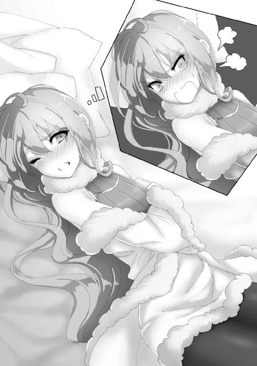
口汚く罵る声と、艶を帯びた喘ぎ声が同時に響く。
とても同一人物から同時に発せられているとは思えないほどの差だ。
（口汚くて悪かったわね！ ......ってあれ、言ってることが......じゃない。考えてることがわかる？）
ユツの時とは違い、相手がそれを受け入れているのならば魂を繋ぐのに絶頂に至らせる必要はない。まぐわうだけで良かった。そしてザナとはユツよりも深く太く魂を繋いでいる。ユツは大まかな感情が伝わってくる程度だったが、互いに考えていることがわかるほどに。
（便利なんだか不便なんだかわかんない術ね。まあいいわ、さっさとこの小汚いもの抜いてよ）
「駄目だ。魂の繋がりが定着するまでしばらくかかる」
そう言って、オウルはゆっくりと抽送を開始する。
（しれっと嘘ついてんじゃないわよ！）
魂の繋がりは双方向だ。
表面的な思考だけだが、考えていることは互いに伝わって隠すことはできない。
既に魂は十分に繋がり、今すぐやめても何の支障もないことはザナにしっかりと伝わっていた。
（っていうか嘘だってすぐバレるのもわかってるのになんでわざわざ嘘を......）
「あんっ」
ザナの心の声を、現実の声が遮る。
（な、なに、今の......）
それは彼女の能力が指示したものではなく、自然と漏れ出たものだった。
「知らんのか？」
オウルは戸惑いに満ちたザナに、意地悪く言った。
「女が気持ちいい時に出す声だ」
（冗談でしょ、あんたなんかに抱かれて気持ちいいわけ......）
「ふぁんっ！」
腰をずんと押し進めれば、吐き捨てるような内心の声とは裏腹に高い雌の声が上がる。
（なんで、なんでこんな......）
「安心しろ。今までの人生の中で最も善がらせてやる。お前の好きなものだろう？」
ザナの衣服を脱がしながら、オウルはそう問うた。
５
「ほう......」
分厚い毛皮の服を剥ぎ取り、その下から現れた裸身にオウルは思わず声を上げた。
すらりとした手足はまるで人形のように華奢で、ともすれば折ってしまうのではないかと思うほど細い腰は繊細な花の茎を思わせる。
その肌は目に眩しいほどに白く、触れれば手に吸い付いてくるきめ細やかさ。
紫水晶を削り出して作ったかのような色合いの長い髪がベッドの上に広がるその様は、生きた芸術品のようであった。
（貧乳で悪かったわねっ！）
細いというオウルの感想をどう受け取ったのか、ザナは心中で悪態をつく。
「気にするな。それはそれで問題はない」
大きければ大きいなりに、小さければ小さいなりに、あるいはその中間だったとしても、それぞれ違った良さ楽しみ方というものがあるのが女の乳房という器官だ。
オウルの手のひらに少し物足りない程度の双丘をやわやわと揉みしだき、焦らすようにゆっくりその先端へと口づけを落としていく。
「ん、はぅ......」
ザナの、まるで少女のように殆ど色づいていない乳首は、しかし敏感に反応して硬く尖った。
（反応してない！）
慈しむようにそれを食むオウルに、ザナは強硬にそう主張する。
「あまり意地を張らぬ方が良いぞ」
心からの忠告として、オウルはそう伝えた。なにせ互いに考えていることが筒抜けなのだ。
男を知らぬ処女とはいえ......いやだからこそ、老獪な魔術師の手練手管に抗うすべなどありはしない。
（お生憎様、あたしにはマリナの加護があるの。あんたの粗末なチンコなんかに屈する......）
「あぁっ！」
ザナの思考を遮るようにその奥を擦り上げれば、驚くほどに容易く媚声がその口を突いて出る。
「やっ、だめぇ......っ、そこ、あぁっ、ごりごりしちゃ、だめぇぇっ！」
（感じてない、感じてない、何も感じてなんかいないんだから！）
身体はこれほど素直だというのにな、とオウルは呆れ混じりに思った。
わざとやっているのかと思うほどにザナの肉体は敏感に反応するというのに、心は頑なにそのことを認めようとしないのだ。いっそそのような演技なのかと疑うほどだが、魂で深く繋がるこの術はただの読心術とはわけが違う。虚偽など通じるわけもない。
「お前の身体は随分と具合がいいな。存外、俺との相性がいいのやも知れん」
（そんなわけ、ない、でしょ......っ！）
その秘裂に肉塊をずぶずぶと埋め込めば、ザナの膣口は嬉しそうにオウルの肉槍を締め付けてきて、蠢く膣壁が無数の舌先のように肉茎を撫で擦っていく。その心地よさは、オウルが下腹に力を込めねば思わず精を吐き出してしまいそうになるほどだった。
「お前にもわかるだろう。そら」
「ああぁぁっ！」
ぐっと腰を突き入れると、肉槍の先端がザナの弱いところをぐりっと抉る。痒くて堪らない場所を掻いてもらったのにも似て、それを更に何十倍にもしたような快楽だった。
（気持ちよくなんか、ない......！）
「強情な奴め」
それでもなお心の中でそう言い返すザナに、オウルは半分呆れつつも感心した。
口先でだけ否定するというのは簡単だが、心の中でまで否定するのはこれで意外と難しい。
言葉は意識的に制御できても、心で考えることまではやめられないからだ。若く女であろうとも、王と名乗るだけの意志力は持ち合わせているようだった。
「しかしそれもどこまで持つことであろうな」
その柔らかな乳肉を鷲掴みにしながら腰を打ち付ければ、蜜の溢れきった秘部はじゅぷじゅぷと音を立てて根元までをすんなり咥え込む。心はどれだけ気丈でも、彼女の身体は既に堕ちきっていた。
しかしそれも無理のないことだ。互いに魂で繋がり合ったオウルには、ザナの弱いところ、気持ちよいところが手に取るようにわかる。その上オウルが快楽を感じれば感じるほどに、ザナもそれを共有して快楽に喘ぐのだ。
だが同時に、ザナの逃げ道もそこだった。
オウルの快楽が伝わってきているだけで、自分自身は感じてなどいない。そう信じることで己の矜持を保っているのだとオウルは気づく。
「お前の身体はこれほど正直に悦んでいるというのにな」
「ひぁんっ！」
わななくように小刻みに締め付けてくる膣口をこじ開け赤黒い肉塊をねじ込めば、快楽が電流のように背筋を走ってザナは高く鳴く。
（好きでもない男に犯されて、気持ちよくなんか、なるわけないでしょ......！）
その声色はこの上なく甘く蕩けているというのに、胸の内はまだ悪態をつくのだ。
「ほう。好いた男がいるのか？」
一瞬、ザナの心中に男の顔が浮かびかける。だがそれはロクに像を結ばぬうちに、掻き消えてしまった。どうやらよほど知られたくないらしい。
「まあ良い。交わっている時に他の男の顔など見ても興が削がれるだけだ、から、な！」
「ん、あ、あ、あぁぁっ！」
激しく打ち付けられる腰に、ザナの意識が一瞬飛ぶ。
（なに、いまの......）
「気をやったのだ。俺に犯され、絶頂したということだ」
未知の感覚に戸惑うザナの顎を指先でつまみ上げ、オウルは丁寧にそう教えてやった。
（うそ......うそよ！）
快楽は相手のものだと誤魔化せても、絶頂はそうはいかない。
男と女の形には違いがあり、明らかにザナの身体だけが反応しているからだ。
「信じられぬと言うなら、そら。何度でも味わわせてやるぞ」
「ああぁっ！ やめ、やめて、だ、め、えっ......！」
敏感になったザナの身体は一突きされるごとに軽くイって、美しいその肢体はまるで小魚のように跳ねる。
（うそ、うそ、こんな......やだ、だめぇっ！）
ついにザナの心が現実を認め、彼女は逃げるように身を捩った。
獣のようにシーツの上を這って進もうとするザナの腰を掴むと、オウルは覆いかぶさるようにして伸し掛かる。そして薄い乳房に爪を立てながら、剣のように反り立った凶悪な肉棒を後ろから一気に突き込んだ。
「ひあぁっ！」
太いものがみっちりと胎を埋める圧力に息が詰まり、暴力的なまでの快楽にザナの腕の力は萎れて彼女は上半身をベッドの上に突っ伏す。尻だけがオウルの腕によって支えられ高く掲げられて、男はただただ獣欲のまま容赦なく女の濡れた膣口に突き入れた。
（こんな、こんな扱い、絶対に、許せない──）
尻だけを上げた滑稽な姿で、身体を押さえつけられ身動きすることも許されず。
それは獣の交尾どころか、ただ欲望を吐き出すための肉袋のような扱いだった。
（許せない、のに────）
ザナにとってそれは屈辱でしかない。
王として、女としての尊厳を踏みにじり、愚弄するかのような行い。
（なんで、こんなに気持ちいいのぉっ!!）
なのに、オウルの肉塊が膣を抉る度に痺れるような甘い快楽が腹にずんと走って、引き抜かれれば堪えようもない疼きが胎内を満たす。もっと欲しい、と思ってしまう。
喘ぎに口を大きく開け、絶頂に至る度に伸ばされた舌から唾液がぽたぽたと垂れ落ちる。
犯されながらもよだれを垂らす様はまるきり、発情した雌犬のようであった。
「まぐわいの良さは、まだこの程度ではないぞ」
その耳元で、オウルは囁く。
「これ以上の快楽を、味わいたくはないか？」
（これいじょうの......かいらく）
ザナはその言葉にごくりと喉を鳴らす。何度も何度も絶頂へと至り、快楽に蕩けた頭にオウルの低く落ち着いた声はよく響いた。
（だめ......そんなの）
「ではお前自身の能力に問うてみるが良い。最善へと至るその力、害があるならば働きはせぬだろう」
（わたしの......ちから）
朦朧とした意識で反射的に力を使えば、ザナの脳裏にはたちどころにどうすれば良いのかが浮かぶ。
「は、あぁ、ああ、あ、あぁぁあ、あぁあぁぁぁぁっ！」
それに従い背を反らすように腰を突き出せば、オウルの肉槍が胎の奥底を貫いて、ザナは目を大きく見開いた。
ゆるゆると彼女の動きが加速して、その身体が前後に動き始める。
「ひゃんっ！」
オウルがそれに合わせて突き込めば、ザナは悲鳴を上げるかのように鳴いた。
（いい、だめ、こんなの、おかしく、だめ、だめ、やだ、やだよぉっ......）
心の中でそう叫びながらも、ザナの尻は淫靡に振られて男をねだる。
膣口が男根をきゅうと締め付けながら、その表面を舐めるように膣奥へと埋め込んでいく。
後ろに向かって伸ばされるザナの腕を掴むと、オウルはまるで馬の手綱のようにそれを引きながら激しく腰を打ち付けた。
「あぁっ、だめ、だめぇっ、やだ、そんなの、だめぇっ！」
（だめなのに、だめなのに、きもち、いいっ、けものみたいに、おかされて、きもちよく、なっちゃってるっ！）
心と身体の両方で高く喘ぎながら、ザナは腰をオウルに押し付けて奥まで咥え込む。
「出すぞっ......！」
「駄目ぇっ！ やめて、それ、だけは、やめてぇっ！」
（膣内に、出されちゃうなんて、ああぁっ、そんなの、だめなのに）
オウルの宣言に、ザナの心は二つに分かたれた。
己の身を守ろうとする心と、快楽を欲する心とに。
「中は、中は駄目ぇっ！ 駄目、なのにぃっ！」
（欲しいって、思っちゃってる、だめ、ほしい、あついの、なかに......っ！）
能力は今すぐオウルの腕を振り払い、逃げるべきだと告げる。
しかしザナはそれに従うことなく、その場に留まった。
膣の中で、オウルの男根が精を放とうと一際膨れ上がる。
「だめ、だめ、そんなの、きちゃったら────！」
（きて、きて、ぜんぶを、うめて────！）
ザナの心の声に呼応するように、オウルは彼女の膣内に精を放つ。
「ああぁぁぁぁあぁあぁぁあああぁぁっぁぁぁぁぁあああああ！」
（ああぁぁぁぁあぁあぁぁあああぁぁっぁぁぁぁぁあああああ！）
現実の声と心の声はぴったりと重なって鳴り響き、ザナは高く高く上り詰めた。
白濁の液はまるで堰を切ったように彼女の子宮に注ぎ込まれて、勢い良く迸るそれが膣壁を叩く度に彼女は身体を跳ねさせる。
オウルの感じる、女を我が物にした征服感と射精の快楽、ザナの感じる、男の物にされた被虐的な喜びと絶頂の快感が交互にやってきて、彼女は抗うこともできずに快楽の渦に呑み込まれた。
（うう......殺す......絶対、用済みになったら殺してやるぅ......）
ぐったりと横たわり物騒なことを考えるザナの秘所から、血の混じった白濁の液がごぽりと大量に溢れ出す。
流石に処女を相手にやりすぎてしまったかも知れない、とオウルは思った。
魂をこれほど太く繋いで行うセックスは、彼が思っていた以上に気持ちいいものだったのだ。
その上相手の考えていることまでわかるから、ついついやりすぎてしまう。
「すまん」
オウルは頭を下げ、謝罪を口にした。仮にも王の頭は軽いものではない。
だがそれは他に何の思惑もない、純粋なものであることをザナは感じ取った。
そして同時に何に対する謝罪かを知り、絶句する。
快楽の渦に呑み込まれたのはザナだけではなく、オウルもまた同じだった。
無論、先程まで男を知らなかった生娘と百戦錬磨の老魔術師とではわけが違う。
ザナのように己を見失うようなことはなかったが、大量の精を吐き出した逸物は萎えるどころかますますいきり立ち、その威容を誇るかのように反り返っていた。
謝罪は今まで行ったことに対するものではない。
これからすることに対してのものだ。
「お前は俺を殺すと言ったな。だが安心しろ」
オウルは言いつつ、ぐったりとして動けないザナの手を取り引き寄せる。
「俺は殺しはせん──死ぬほどイカせてやるだけだ」
本気でそう考えていることが伝わってきて、ザナは声にならない悲鳴を上げた。
ユニスは一人、ダンジョンの片隅に作られた訓練場で剣を振るっていた。
「ふっ」
鋭い呼吸音と共に、珠のような汗が舞い散る。
それは空中にあるうちに剣で縦に切り裂かれ二つに分かれ、更に横に切られて四つ、斜めに切られ八つに分かたれた。
「......相変わらず凄い動きだね」
ユニスが剣を振る音しかしなかった空間に、パチパチと拍手の音が鳴り響いた。
感心しきり、といった様子で言いながら現れたのはマリーだ。
「どうしたの？」
訓練を止めることなく、ユニスは動きを続けたままマリーに問うた。
「ローガン見なかった？ ちょっとソフィアの世話をお願いしたくて」
「見てないかな。向こうにスピナがいたから、そっちに頼んだら？」
「うーん。そうするかなあ......最近ローガン、すぐいなくなっちゃうんだよね」
「ところでマリー、剣の訓練はちゃんと続けてるの？」
ユニスの問いに、マリーはぎくりと身体を震わせた。
「まあまあ、かな......ありがとね、ユニスっ」
そう言ってマリーはさっと身を翻し、迷宮の奥へと走っていく。
「勿体無いなあ。せっかく才能はあるのに」
剣にせよ魔術にせよ、あるいはその他のことにせよ、マリーは非常に飲み込みがいい。だがそれ故にか、どうにも飽きっぽく一つのことに集中できないきらいがあった。
「そう思わない？ ローガン」
「......英雄に才能があるなんて言われてもな」
虚空に向かって呼びかければ、影はじわりと形を取って赤い悪魔へと変じた。
マリーに言ったことは嘘ではない。ユニスはローガンの姿を見てはいない。
だが柱の影に入り込んだその存在そのものには訓練場に足を踏み入れた時から気づいていた。
「それも、どうなんだろうね。英雄だから才能があるのか、才能があるから英雄になるのか」
ユニスは地道な剣の訓練というものを殆どしたことがなかった。
思う通りに振り回せばそれで敵なしで、戦いの勘は殆ど実戦で磨いてきたものだ。
自身も英雄である父ウォルフに言わせれば、英雄というのは大抵、皆そういったものであるらしい。
言いつつユニスは後ろに飛び退り、足に力を込める。
距離をとって走り抜けながら、その勢いを乗せた斬撃を転移させて相手を切り刻む。
四方八方から襲い掛かる無数の見えない斬撃は回避も防御も不可能。
名はないが、ユニスにとって必殺といっていい技だ。
そして、剣を振り終える前に、ユニスは息を呑んだ。
「また負けたな」
「うん」
ローガンに答え、ユニスは剣を鞘に収めるとその場にへたり込んだ。
一瞬の隙を突いて、心臓を貫かれた。
鎧と筋肉と肋骨に守られた心臓を剣で狙うなど普通なら悪手でしかないが、彼なら息をするかのように易々とやってのける。
ユニスが相手していたのは、空想上のホデリだ。
とはいえその動きは本物と寸分違わない。
最初に勝てたのはユニスの能力の特異さ故、そしてホデリも本気ではなかったが故だ。
あれから何度か手合わせしたが、二回目以降の戦いでは簡単に対応されてしまった。
ユニスの剣は軽い。それを助走距離と速さで補う剣は、下がった瞬間歩を詰められ剣を置かれるだけで封じられる。ならばとどれほど速く動こうが、ホデリは最小限の動きでユニスの命を絶った。
あれ以来、実際にも空想上でもユニスはホデリに一度として勝てていなかった。
膂力も速度も全てユニスの方が勝っているのに、剣の振るい方一つで覆されるのだ。
「で、なんでローガンはマリー避けてるの？」
「言わねえよ。お前、笑うだろ」
「うん、多分」
「そういうとこ正直だよなおめえはよ！ 嘘でも笑わないとか言えよ！」
深々と溜め息をついて、ローガンは両手を腰に当て、上側の腕で己が目を覆う。
「マリーが殺されて......俺は本気で怒っちまったんだよ。もうとっくに十三歳なんて超えちまったババアと生まれたばっかの超ビューティ幼女を比較して、ババアを優先しちまったんだ。俺のアイデンティティがクライシスだぜ......」
「あはははははは」
「あっこの野郎、本気で笑いやがったな!?」
指を差して笑うユニスに、ローガンは牙を剥いた。
「だってそうじゃない。好きなのに理由なんて必要ないでしょ」
「お前はなあ......こちとら六千年生きてる大悪魔なんだぜ。人間なんかに入れ込んだっていいこたねえ。色々あんだよ。わかれよ」
「関係ないよ」
ローガンの言葉を、ユニスはばっさりと切り捨てる。
「悪魔だって人間だって人間だか幽霊だかわかんないのだって、好きって気持ちは同じだよ。好きになるまでの経緯はそれぞれ違うだろうけど」
「だけどなあ......」
「そりゃあローガンがマリーのことを女の子として好きで、子供作りたいなあーとか思ってるなら色々難しいけど、別にそういうわけじゃないんでしょ？」
「そりゃまあ、そうだけどよ......」
ローガンのマリーへの思いは、人間で言うのならば妹や娘に対するものが近い。
「その難しい方を選んだ子だっているんだし」
名を挙げずとも、ユニスが誰のことを言っているかは明白だった。
あまり入れ込むと後がつらいぞ、と彼女に忠告したことさえあったのを、ローガンは思い出した。
「......ったく、ローガン様もヤキが回ったもんだぜ」
辟易として、ローガンは天を仰ぐ。
しかし口調とは裏腹に、その表情はどこか吹っ切れたような晴れ晴れとしたものだった。
「下らん説教の礼に、お前に良いことを教えてやる」
「何？」
「お前がさっきからやってる訓練な。それ、全部無駄だ」
「無駄!?」
流石にショックを受けて、ユニスは目を見開き口をあんぐりと開けた。
「あのホデリとかいう男の真似をして剣の振るい方を学んでるんだろうがよ。そんなもん一朝一夕に身につくもんじゃねえし、何十年もかけてあの程度の只人に追いついてどうする」
「で、でも、ホデリはすごく強いよ？」
ユニスの言葉に、ローガンは頷く。
恐らく人の形で為せる範囲において、ホデリの動きは極められていると言って良い。
もしこの世に全知全能と言える存在がいたとして、剣を振る人間を作り出したとしたら彼とそっくりの動きをするだろう。そのくらいの域にいる人間だ。
だが彼はどこまでも、人間でしかない。
「竜が人の真似をしてどうする。同じ土俵で戦ったら技術が同じでもお前が負けるぞ」
「えっ、なんで？」
ユニスは本気で聞いているようだった。
「背が小せえ。身体が軽い。腕が細い。技術も能力も同じだったら勝てる要素がねえだろうが」
小柄なユニスの頭を手で押さえつけながら、ローガンは言う。
身体が小さいということはその分リーチが短いということで、細く軽いということはその分一撃も軽くなるということだ。不意打ちを身上とする暗殺者ならばまだしも、真っ向から戦う剣士としてはそれは不利な要素でしかない。
「えー、そうかな？」
それを不思議に思うということは、ユニスは今まで一度もそれを苦にしたことがないということでもあった。
「だからお前さんは棒きれの振り方なんぞより、自分の力の使い方を学べ。英霊の力ってのは、要するに英雄の生き方そのもの。象徴みたいなもんだ。振り回されずに使えりゃ、きっと力になる」
「......うん。ありがとうね、ローガン！」
正直ローガンの言っている意味の半分ほどはよくわからなかったが、それでも何か進むべき道筋を得た気がしてユニスは頷く。
「......おう」
契約にもないのに人間を守ったり、戦い方を教えてやったり、あまつさえ礼を言われたりするなど、まったくもって悪魔らしい行動ではない。
だが不思議と、そう悪いものでもない。ローガンは、そう思った。
１
ぱたり、ぱたりと静かな音を立て、札が並べられ、裏返されていく。
しなやかな指で札を操るのは褐色の肌の女。
その豊満な肢体を包む布は衣服と呼ぶにはあまりにも薄く小さく、肌の殆どの部分が露わになっている。
胸元に至っては首と肩とで支えられた布が垂れ下がっているのみで、少し強い風でも吹けばめくれ上がってしまうだろうし、そうでなくともその先端がうっすらと透けて見えてしまうような有様だった。
首にはそんな衣装に不釣り合いな太い首輪が嵌められて、顔の下半分はヴェールによって隠され窺い知ることができない。
「陛下。氷の女が魔王と接触しました」
「ほう」
女が札を見つめながら言うと、その背後から男の腕がぬっと伸びた。
その腕は女の胸元を隠す布の下に手のひらを滑り込ませると、一切の躊躇いなく豊かな果実を鷲掴みにする。
男の無骨な指が女の柔らかな肉をこね回し這い回る様は、薄布越しにもはっきりと現れた。
「ザナの奴め。外なる大陸からの異人と手を組んだか、イェルダーヴよ」
「はい」
イェルダーヴと呼ばれた女はその豊かな胸を揉みしだかれながらも眉一つ動かすことなく、男の言葉を肯定する。
黒い髪に褐色の肌、赤い瞳を持つその男の足元には、イェルダーヴと同じ首輪をつけた三人の女が犬のように這いつくばっていた。女たちは懸命に首を伸ばして玉座に座る男の股間に顔を寄せ合い、そそり立つ逸物に舌で奉仕する。
「ふん。かえって好都合というものだ。彼の地に眠る神と共に食い荒らしてくれる」
言って男は奉仕する女の一人の髪を掴むと、その口の中にペニスを突き入れる。そして力ずくで女の首を揺らして喉奥に突き込むと、精を流し込んだ。
「兵どもの用意をせよ。あの忌々しい雪が解ければ打って出るぞ」
投げ捨てるように口を離された女は苦痛の声も上げずに床に転がり、残りの二人も声もなく主の汚れた肉茎を舐め清める。
「──御意に」
イェルダーヴは表情を変えぬまま、ただそう答えた。
「まだ、何か、挟まってる気がする......」
「大丈夫か？」
「なわけないでしょっ！」
腰を押さえながらよろよろと歩くザナを心配して言えば、噛みつかんばかりの勢いで返事があった。
「全然！ 元気じゃない！ 誰のせいだと思ってるの......初めてだったのに、あの後、五回もするなんて......」
元気ではないか、と心中で呟けば、恨みがましい視線と共にザナは唸った。
しかしオウルにとってはたったの五回だ。本心を言えばもっとしたかったのだが、その時点でザナが眠ってしまったのだから仕方がない。
「寝たんじゃなくて気絶したのよ！ 殺す......絶対いつか殺す......」
「今なんとおっしゃいました？」
「オウルさんとは末永くお付き合いさせていただきたいと思ってます」
突如天井から垂れ下がってきたスピナに、ザナはにこやかな微笑みでそう答えた。
オウルも騙されかねないほどの、見事な変わり身だ。
「......？ お師匠様、準備ができました」
事実スピナさえ己の聞き間違いだったのかと不思議そうに首を捻るほど。
素の性格の方が好ましく思えるがな、と心中でオウルは呟いたが、ザナの返事はなかった。
「サハラの持つ能力は大きく三つあります。その中でも一番厄介なのが、『全知』です」
オウルの翻訳魔術を通したザナの言葉に、会議室に集まった者たちはざわめいた。
「未来予知に最善手、そして全知ときたか」
もはやオウルは驚きさえしなかった。どれも魔術的な常識から考えればありえないものばかりだが、実際目の前にありえているのだから否定しても仕方がない。
「まあそうは言っても、どこまで鵜呑みにして良いものかはわからぬがな。お前もこんな能力でよくふっかけたものだ」
魂を接続したことにより、オウルはザナの能力を彼女自身と同じくらい正確に把握していた。
彼女が信仰する月の女神マリナの加護。それは最善手を知る力だ。
「最善手を打つ能力」というザナの説明は正しいようでいて、本質とは異なるものだった。
神の加護は何が最善であるかを知ることにしか働かない。
指定される手はザナにとって可能な範囲のものではあるが、実際にその行動に成功するかどうかはザナ次第なのだ。無論成功率も鑑みての最善手ではあるが、余裕がなければないほどその選択肢は狭まっていく。
そして何より問題なのは、何をもって最善と言っているのかはザナ自身にもわからないということだった。
「とはいえそれだけなら、お前なら勝てるのではないか？」
全知とやらもどうせ同様に何らかの制約はあるのだろう。だが仮に真の意味で全知であるとしても、ザナならば勝てるとオウルは踏んだ。
最善手を打つ能力が強力だからではない。
ザナ自身が、強いからだ。
マリナの加護によって奇襲を知ったとしても、ユニスの一撃を完璧に防ぎきったのはまごうことなくザナの力に他ならない。印も呪文も使うことなく瞬時に氷を作り出す異常と言えるまでの速射性。
それはオウルの魔術と同様に、神の加護などという胡散臭いものではないれっきとした技術であり、積み重ねられた研鑽のなせる技だ。
この若さでよくぞここまで磨いたものだ、とオウルは素直に感心した。
（あんたの魔術とかいうヤツの方がよっぽど頭おかしいけどね。何よ、連鎖反応を何十にも積み重ねて瞬時に石塊に好きな機能と形状を持たせるって）
ザナの技術が一瞬で絵を描くことだとすれば、オウルのそれは一瞬でパズルを作り出すようなものだ。どちらも常人の技ではないが、オウルの迷宮魔術はただ単に難解極まりないというだけでなく、「何故そんなことをするのかわからない」というレベルのものだった。
どう考えたって、石以外のもの......例えばザナのように氷とか、水とか、砂とか、そういった流動性のあるもので同じことをやった方が手っ取り早いに決まっているのだ。
（そんなものでダンジョンは作れんだろう）
その疑問に対するオウルの回答は至極単純なものだった。戦闘のための技術ではなく、ダンジョン造りのための技術を戦闘に流用しているのだから当然といえば当然の話だ。
その点ザナの能力はまさに、戦闘のために鍛えられたものだった。
瞬時に作り上げられる氷は攻撃を防ぐ盾となり、相手を切り裂く刃にもなる。
マリナの啓示によって奇襲奇策も避けられる彼女は、単身乗り込めばいくらでも王を討ち取れるように思えた。それこそ、オウルに対してしてみせたように。
「それができない理由が二つ目の力。砂の王ウセルマートの操る炎の術です」
「氷に対して炎では相性が悪いか」
ミオの操る魔獣たちの炎にも、ザナの氷は耐えられなかったという。
もっともミオが操っている状態でケルベロスが噴く炎はローガンやサクヤのそれすら上回りかねない規格外のものなのであまり参考にはならないかも知れないが、高熱が弱点であるのは間違いないのだろう。
「相性も勿論ありますが......単純に、術者としてウセルマートの方が強いのです」
淡々とした口調とは裏腹に、魂の糸を伝ってくるのは滲み出すような悔しさだ。
「王が王を打ち取る必要などあるまい。どれほど強かろうが個は個。数をもって対応すればいいだけだ」
単に炎を操るだけというのなら、それこそサクヤやローガンでいくらでも対処できる。
仮にウォルフ並みの強さを持っていたとしても万の軍をもって当たれば勝てるのが戦というものだ。
「それができない理由が三つ目の力。サハラの不死兵団です」
「話には聞いたことがございますわ」
ザナの言葉に、サクヤが声を上げた。
「サハラの国には斬っても突いても死なず、痛みを感ずることも恐怖を覚えることもない屍の兵士たちがいると......」
「それってただのリビングデッドじゃないの？」
恐ろしげに語るサクヤに、リルは首を傾げる。
「ただの、とは......まさか旦那様の国では、斯様におぞましい存在が珍しいものではないと仰るのですか？」
「あーうん、まあ、珍しくはないかな」
そのおぞましい存在とやらを、まだダンジョンが整っていない時代にはよく戦力として使ってましたとは言えずにリルは言葉を濁す。
「でもリビングデッドならそんなに怖いと思えないなあ。あたしたちの知ってるのと違うのかな？ 傷がすぐ治っちゃうとか、すっごく速く動くとか」
死体を魔力で動かしているだけのリビングデッドは、多少戦闘の心得がある者にとってはさして恐ろしい相手ではない。痛みや恐怖に怯まないから囲まれると多少厄介ではあるが、それでも雑魚と言ってしまっていい部類の魔物だ。
「いえ。一体一体は仰る通り大した脅威ではありません。カラカラに乾いているからわたしの氷術が通りにくいのは難点ではありますが、皆さんなら簡単に倒せるはずです」
「では、数か」
オウルの問いに、ザナは頷く。
「サハラの国で生まれ死んだもの。その全てが不死兵です。その正確な数までは存じませんが少なくとも──優に一億を超えるでしょう」
「一、億......？」
その答えに、流石にオウルたちは言葉を失った。
「オウルさま、一億って、どのくらいすごいの？」
多いということだけはわかるのだが、多すぎてピンとこずにマリーは尋ねる。
「軍事大国と呼ばれるユニスの故国、グランディエラですら国中から兵士をかき集めてせいぜい三十万。魔宮からこちらへ持ってこれる兵は、まあ多く見積もっても十万というところだろうな」
「じゅうまん......ってことは」
マリーは指を折り折り数え、大きく目を見開いた。
「百倍......!?」
「一千倍だ、愚か者」
オウルは深々と息をつきながら、力なく言った。
２
「それが本当だとすれば、まずいな」
ダンジョン攻略において最も効果的な戦術が、実は人海戦術だ。
罠も守衛の魔物も一度に対処できる人数は限られている。
とにかく頭数さえあれば練度も能力も大して関係なく踏破できてしまう。
ダンジョンという空間が有限である以上、これは原理的に防ぎようがない。
そうは言っても十万や二十万程度呑み込む自信はあったが、一億となると流石に不可能であることは火を見るより明らかだった。
その上相手には全知の力があるという。どの程度のものかはわからないが、少なくとも最適な経路を割り出したり、罠の位置を見破る程度のことはできよう。つまり最悪、本拠地の魔宮まで乗り込んでくる可能性もあるということだ。
「だがそれが本当だとすれば、お前はこんなところにいて良いのか？」
「問題ありません」
雪山を隔てているヤマトと違い、ヒムロはサハラの隣国だ。攻めようとすればいくらでも攻められる。敵対する国の王が僅かとはいえ手勢を率いてやってきたのだ。全知などなくともザナがここにいることも承知しているはず。
「ヒムロは雪に覆われた国です。言い換えれば、水が溢れている。サハラの不死兵にとってそれは忌避すべきもの。......それにそもそも、ヒムロを攻める理由がないのです」
「何故だ？ お前はサハラを滅ぼそうとしているのだろう」
「ヒムロにはサハラを滅ぼす力はありません。そして、ヒムロを滅ぼして得られるものもない。ヒムロは、雪と氷に覆われた貧しく不毛の国ですから」
語ると同時、ザナの心中にヒムロの国の情景が浮かんだ。
季節の別なく一年中氷に閉ざされたその国では、草花も家畜も殆ど育たない。
民はロクに食べるものもなく貧しい暮らしを強いられ、王族であるザナですら贅沢といえるような生活は全くしていなかった。
「不毛というのならばサハラとやらも同様ではないのか。砂漠の国だと聞いたぞ」
「いいえ、それは逆です。サハラほど肥沃な土地はそうありません。砂漠が広がるのは、その肥沃さを一点に集めているが故のことなのです」
ザナの胸の中にあるは羨望と嫉妬、憎しみと......
「つまり滅ぼそうと思えば滅ぼせるが、滅ぼしたところで害はあれども利はなく、脅威でもないため捨て置かれているということか」
「......そういう、ことですね」
民に苦しい生活をさせていることへの、深い悔恨だった。
そうとなれば、ヒムロの戦力は当てにはできないということだ。
（......悪かったわね）
オウルの思考を読んで、ザナは不貞腐れたような、後ろめたいような感情で言う。
（気にするな。元々当てにはしておらん。とはいえ──）
「どう対処したものか」
この上なく厄介な相手であった。三つの能力のうち、どれか一つ......あるいは、二つまでならどうにかなったかも知れない。だが全知によって奇襲奇策は通じず、個の強さも数の力も桁外れとなると、打つ手が無いようにさえ思えた。
「おうる、おうる！ たつきが、みずでばしゃー！ ってするよ！」
思い悩むオウルに、タツキがぶんぶんと手を上げて言った。
「お前は水を操ることはできても、作り出すことはできんだろうが。水の一滴もない砂の海でどうする気だ」
「えー。水がないのに海なの？ なにそれ、へんじゃない？」
会議の席にこいつを連れてきたのは誰だ、とオウルは額に手を当てる。
「むー。おうるのやくにたちたいのになあ」
「ああ。お前の力は当てにしている。だからいざという時頼む」
頬を膨らますタツキに、オウルは本心から言った。
少なくとも、ダンジョンの防衛という点においては彼女ほど役に立つ者もいない。侵入者が足を踏み入れた通路や部屋を水で埋めてしまえばタツキの独壇場だ。水中戦で陸の生き物が海の神に勝てるわけがない。
とはいえそれさえも凌駕するのが数の力だ。死者に呼吸は必要ないし、水で押し流されることへの対処だけなんとかすれば戦える。そうしたところでタツキの敵ではないだろうが、神とて何日も不眠不休で戦えるわけではない。
「主殿。我々にお任せいただけぬか」
静かな......しかし決意を秘めた声で言ったのは、エレンだった。
「何か策でもあるのか？」
「ありません」
すっぱりと、いっそ潔い口調でエレンは断言する。
「しかし死に損ないの一億や二億に遅れを取る我らが氏族ではない」
「無茶を言うな」
「我らに汚名を濯ぐ機会を与えて欲しいのです」
オウルが諌めようとすると、セレスまでもがそう言い出した。
汚名というのはザナを相手に不覚を取ったことだろう。
「汚名などとは思っておらん。あれは俺の失態であって、お前たちに責はない」
「何故一言、お命じくださらぬのですか。邪魔な者どもを皆殺しにしてこい、と」
硬い口調で言うエレンに、オウルは瞑目する。
「人間の兵、十万二十万ならばそう命じもしよう。だが相手は文字通りの死兵、一億もの軍勢だ。みすみす死なせに行くようなものだ」
生きた人間ならば、ある程度相手に損害を与えれば士気を保てず瓦解する。
だが恐怖を知らず腹も減らない生ける屍は、最後の一兵までもが動かなくなるまで戦うだろう。まともに戦っていい相手ではない。
「我ら、主殿のためならばこの生命、惜しくなどありません！」
「はい、そこまでー」
エレンががたりと席を立ち、叫ぶように言ったところでリルがパンパンと手を打ち鳴らした。
「エレン、セレス。あなたたちが一騎当千......ううん、一騎当万の精兵であることはわたしもオウルもよーく知ってるわ。でもね、だとしても百人で百万しか倒せないじゃないのよ。一億には二桁足りないわ。そもそも一億の矢をどこから用意するのよ」
「そ、それは......魔力で作り出せば」
「ダンジョンコアを空にする気？」
リルがそう言うと、エレンは流石にうっと呻いて押し黙る。
「久方ぶりの強敵なのは間違いない。お前たちの力は必ずや必要となるだろう。その時が来れば存分に頼らせてもらう」
「......はっ」
なんとか納得したのか、エレンは跪き頭を垂れる。
助かった、とリルに目配せすれば、彼女はにっこり笑ってヒラヒラと手を振った。
（随分お優しいのね）
（......悪いか）
解散した後ザナからかけられた心の声に、オウルは唸るように答えた。
悪い自覚があったからだ。
（言っておくけどあの子の提案は、最善よ）
（......だろうな）
一億の兵がいるからといって、それを全て相手にする必要などない。
チェスと同じだ。駒を犠牲にすれば王手をかけられる。
エレンたちに砂の王までの血路を開かせ、ユニスなりローガンなりに砂の王を殺させる。
恐らくはそれが最善であろうことはオウルもわかっていた。
だが。
オウルのためなら命など惜しくない。
エレンがそう言った時、オウルは思ってしまったのだ。
嫌だ、と。
それは王として正しい判断ではない。
百を生かすために一の損害で済むのなら、それを選ばねばならない。
全てを知る相手に一億の死兵。
それは明らかに、かつてメリザンドが率いたラファニスよりも強大な敵なのだから。
（別に、悪くないわ。わたしも何も言わなかったでしょう）
最善の力はあそこでエレンの肩を持ち、けしかけることだと告げていた。
（ただ、不思議だっただけ。あなたにはそれこそ何十人も奥さんがいて、その内の一人なんでしょう？ それとも、あの黒くて胸の大きい子か、白くて胸の大きい子は、あなたの特別なお気に入りだったの？）
だがザナはあえてそうしなかった。
恐らくそれをすればオウルとの関係は著しく悪化する。
砂の王を倒す一手だけを考えるならともかく、その後のことを考えるならば得策ではないと判断したからだ。
（特別も何もあるものか。気に入っておらぬものを閨になど呼ばん）
（あのねえ。それじゃ、あたしも気に入ってるってことになるじゃないのよ）
（その通りだがなんだ）
（えっ）
オウルは目を見開くザナを改めて見つめた。
波打つ紫の髪はどこか幻想的で、髪より僅かに明るい色彩の瞳は紫水晶のよう。
儚さと力強さを同時に感じさせる不思議な雰囲気がある。
端整な顔立ちとそのほっそりとした佇まいは妖精にも似て、彼女自身が月の化身と言われても信じてしまいそうなほどに美しかった。
（な......なんで、敵になるかも知れない女を口説いてるのよ）
（口説いてなどいない。ただの事実だ。でなければあれほど求めたりするものか）
オウルの言葉に呼応して、ザナの脳裏に昨晩の様子が浮かび上がった。
（馬鹿！ この節操なし！）
ザナはそう捨て置いて、足早に逃げ去っていく。
あんな見た目ならこの程度の世辞など聞き飽きているだろうに。
オウルは嘆息し、その背中を見送った。
３
かつてヤマタノオロチがその根城にしていた山脈の名を、ヤエガキという。
まるで並び立つ剣のようにそびえるその山脈は、西から吹く風の中から湿り気を全てこそげ取り、山頂に雪として降らせながら乾いた風をサハラへと送り込む。
その頂の一つに立ち雪を踏みしめながら、不思議なものだな、とオウルは心中で呟いた。
サハラという国と、オウルは一切の交流を持っていない。
その国に住む人間と会ったこともなければ訪れたこともなく、伝聞でしかサハラの話を聞いたことがない。それはサハラにとっても同じことのはずだ。
にもかかわらず、眼前には山の麓を埋め尽くすかのように死者の兵が居並んで、オウルたちの手勢に相対している。
宣戦布告もなく、時刻を伝えたわけでもなく、しかし互いに戦う準備を完了させて向かい合っているのだ。それはなんとも不思議なことのように思えた。
「にしても、わかっちゃいたけど酷い数ね......」
うんざりとした口調で、リル。
まるで絨毯のように黒々と眼下に広がっているのは、その全てが不死兵に違いない。
山の上からでは遠すぎて細部までは見えないが、その尋常でない数だけははっきりとわかった。
対してオウルたちは兵士も連れず、僅かな手勢のみだ。
冬山に慣れたザナの手を借り、春近くなってだいぶ解け出してはきているものの、まだ雪の残る険しい山脈を軍を率いて登るなど不可能だ。
かといって悠長に春を待てば大軍に攻め寄せられ滅ぼされるのを待つばかり。それまでに手を打たなければならない。
どの道真正直に一億の私兵に兵士を当てても損害が広がるばかりであろうから、オウルは少数の精鋭だけを連れてやってきていた。
「あの、あたし、何で連れてこられたんでしょうか......？」
そんな中、少し困ったように眉根を寄せて、シャルはオウルに問いかけた。
十年前は肩口で揃えていたエメラルドグリーンの髪を腰まで伸ばして先端をリボンでまとめ、オウルを見つめるサファイアのような瞳は僅かに涼やかに。背も胸の膨らみもほんの少しだけ成長したその姿には、出会った頃の幼げな印象に取って代わるように儚げな美しさが加わっていた。
とはいえその能力までもが成長したかといえば、必ずしもそういうわけではない。
オウル配下の僧侶たちの取り纏め役として忙しい日々を暮らす彼女は、かつてのように自らが戦場に立って戦うということは殆どなくなった。
僧侶としてはともかく、冒険者としての腕や勘は確実に衰えているということだ。
「まあ見ていろ。リル、やれ」
「はーい」
リルが返事をすると同時、山脈の斜面にいくつもの穴が開いた。
ヤマトにせよヒムロにせよ、オウルたちの文明と比べて非常に遅れている点があった。
それは、魔道具の存在だ。
何でも霊力というのは人や古い動物、木々などに宿るものらしい。
逆に言えば生き物でない存在には霊力は宿らないのだ。
故に道具に込めて使うという発想にも乏しく、オウルたちで言うところの付与魔術に関する分野が殆ど発達していない。
故に。
山脈の斜面から突き出した何門もの大砲は、たとえその存在を知ってはいても理解できるものではないはずだ。
轟音を立て、巨大な弾丸が一斉に射出される。
もし理解できないはずのそれまでをも知り対処できるなら脅威であるが、死者の軍団は対応することもなく弾丸に押しつぶされた。
とはいえ、せいぜい数百体。焼け石に水と言っていい数だ。
「あっ、わかりました。これですね」
リルの放った弾丸を見て、シャルはオウルの意図を察する。
弾丸の中には特大の魔石を仕込んであって、円を描くように大地に落ちていた。
それはシャル本人にすら今の今まで伝えていなかった作戦だ。
オウルの頭の中を読むか、テナのように未来を読むかでもしない限り対処できるものではない。
「解呪！」
シャルの詠唱と共に、リルが放った弾丸から光の柱が立ち昇る。
それは相互に結ばれ巨大な魔法円を描くと、白い光が戦場を埋め尽くした。
まるで空に吸い込まれるように光はやがて消え、巻き込まれた死者の群れは動きを止め倒れ伏す。
これで数万体は倒せたはずだ。
「魔力の補給、お願いします......」
それそのものが魔力の塊である魔石を利用した術は本人の魔力を殆ど使わないが、流石にこれほどの規模ともなればその魔力の殆どを使い果たし、シャルはふらりとよろめく。
その肩を抱き唇を重ねれば、シャルは胸の前でぎゅっと拳を握りながら舌を差し入れてきた。ちゅぷちゅぷと音を立てながら唾液を絡め合い、唇を吸い、ぎゅっと抱きつく。必要な分の魔力を注ぎ終わっても口を離さず、存分に堪能したところで銀の糸を唇に伝わせながら離れた。
「次は下のお口から白い魔力をお願いします」
「馬鹿なことを言ってないで次の用意をしろ」
ちらりと法衣の前をたくし上げるシャルの後頭部を軽くはたき、オウルは彼女の身体を敵に向ける。
「あれ、なんだろ」
不意に、マリーがそう声を上げた。
その視線を辿ってみれば、黒々と広がる不死の兵団の奥に何かが光っているのが見える。
「炎、か......？」
オウルはその光を見定めようと目を細める。
それはまるで松明の炎が揺らめいているかのような、そんな光景に見えた。
「ねえ、なんだかあれ......」
リルが硬い声色で、オウルの肩を掴む。
「大きくなってない？」
彼女の言う通り、炎は地平の彼方でじわりじわりとその大きさを増していた。
「まさか......そんな馬鹿な」
オウルたちはサハラの軍を山の上から見下ろしている。つまりその目に見える地平線は地上から見るよりも遥かに遠い。百マイル（およそ百六十キロメートル）ほどはあるはずだ。
どんな弓も兵器もそんな距離を飛ばすことなどできない。
ましてや何の媒体もなく炎の塊を飛ばすような術など、あるはずもない。
つい先程までは、誰もがそう思っていた。
「来るぞ！」
迫りくる火球はどんどんその大きさを増し、眼前へと迫る頃には視界を埋め尽くすかのような巨大さまで膨れ上がる。
「パパ！」
その寸前ソフィアが山頂に姿を現すと、一行を壁で覆って即席の部屋を作り上げ、その部屋ごと離れた場所へと転移した。
轟音と共に炎が弾け、山脈が揺れる。
「嘘でしょ......」
リルは目を見開き、呆然と呟く。彼らが先程まで立っていた隣の峰は、まるで途方もなく大きな巨人が削り取ってしまったかのように、ごっそりと抉られていた。
「砂の王ウセルマートの術です......まさかここまで強くなっているとは」
その威力はザナにとっても予想外のものであったらしく、彼女は呻くようにそう言った。
「ソフィア。大丈夫か？」
「うん、すぐ切り離したから。でも髪がちょっと焦げちゃった」
チリチリと焦げた髪の先を気にしながら答えるソフィアの姿は、十歳程度にまで成長していた。その姿も、咄嗟に現れてオウルたちを救えたのも、山脈を丸ごとダンジョン化して己の身体としたためだ。
「あんなものを連発できるとは思いたくないが......できると思って行動した方が良いだろうな。どの道奴の全知に関する範囲はおおよそ知れた。今日は一旦......」
退くぞ、と言いかけたその時だった。
巨大な魔獣が、ソフィアの襟首を噛んで連れ去ったのは。
「ソフィアっ！」
オウルとマリーが同時に叫び、手を伸ばした。
触手のように何本も伸びたキューブの道は、しかしソフィアを攫った銀色の魔獣の足に追いつくことができず、その長さの限界に達して空を掴む。
魔獣は雪の積もる山の上を苦もなく駆けると、切り立った崖の上から跳躍した。
ダンジョンの外ではソフィアはその権能を振るうことができず、ただの十歳の子供にすぎない。
「待ってっ！」
その後を追い、マリーは躊躇うことなくその身を崖へと投じた。
４
「ローガ───────ン！」
両手両足を広げ、崖から落下しながらもマリーは叫ぶ。
壁面に伸びた彼女の影がぐにゃりと歪んだかと思えば、四本腕の悪魔の形を取ってマリーを抱きかかえた。
「追って！」
「おう！」
音もなく着地しサハラの軍勢に向かって走りゆく魔獣の背を、ローガンは低空を飛びながら追いかける。
「だがマリー、さっきのでかい炎がきたらどうする。俺は大丈夫でも、お前は死ぬぜ」
「大丈夫。相手の目的はソフィアだよ。だからまっすぐ追いかけてれば、ソフィを巻き込むような術は使えない」
「なるほど、上出来だ。じゃあ捕まってな！」
ローガンの背に移動しながら冷静に答える少女に、赤い悪魔は口笛を吹いた。
その行く手を、蠢く死者たちが遮る。
全身を古びた布でぐるぐる巻きにしたおぞましい屍たちはソフィアを咥えた魔獣の道を開けると、それを塞ぐようにしてローガンとマリーの眼前に立ちはだかった。
「行くぜ、合わせろよマリー！」
「うんっ」
四本の腕と四振りの剣が宙を舞い、まるで竜巻のように死者たちを切り刻む。
ローガンの放った炎に触れた死者は瞬く間に燃え上がり、それをマリーの起こした魔術の風が運んで広げながら吹き飛ばす。
一体一体は大した強さも持たず、簡単に打ち倒すことができた。
「ちっ、キリがねえな！」
だが問題はその数だ。どれほど倒しても死者たちは後から後から湧いて出る。
ローガンはそれを掻き分けながら進むが勢いは瞬く間に衰えて、ついには足を止めて応戦せざるを得なくなってしまった。
「ローガン、もっと高く飛べない？」
「狙い撃ちにされる可能性もあるが......しゃあねえな！」
このままでは早晩身動きが取れなくなってしまう。それよりはマシだとローガンが飛び上がったその瞬間、大きな影がその行く手を塞いでローガンを叩き落とした。
「なんだ、こいつぁ......？」
十字にして受けた四本の腕のうち一本を切り落とされて、ローガンは思わず目を見開く。
それは槍を持ち、馬に乗った不死兵だった。
馬もまた死者であり、肉も筋もなく骨だけで動いている。
それに跨がる不死兵はボロボロの布を身体に巻いた姿こそ他の雑兵と同じだが、その佇まいと存在感は明らかに別格だ。
「面倒なことになってきやがったぜ！」
騎馬の不死兵が現れても、他の雑兵たちは動きを止めることなく四方八方から襲い掛かってくる。騎馬の不死兵はそれを薙ぎ払う隙を突いては槍を繰り出し、反撃しようとしても雑兵を盾にしながら騎乗の機動力を活かしてさっと距離をとってしまうのだ。
強さだけでなく、動き自体も死者離れしている。
「まずいな......！」
強さで言えば、騎馬の不死兵はローガンどころかマリーよりも弱いだろう。
だがそれは一対一で戦った場合の話だ。
無数の不死兵に囲まれた状況では思うように戦えず、空に飛び出そうとすれば長い槍で撃ち落とされる。じわじわと追い詰められていく状況に、ローガンが歯噛みした、その時。
「まったく、手のかかる師妹ですね」
涼やかな声が、マリーの胸元から聞こえた。
「姉......さん？」
一体いつの間に潜んでいたのか、マリーの懐に忍び込んでいたのは手のひらに乗ってしまいそうなほどに小さなスピナであった。
本体は元々の大きさより小さくなることはできないから、分け身であろうことはわかる。だが何故かいつものスピナとは違う気がして、マリーは戸惑いの声を上げた。
「私を投げなさい」
「う、うん......」
言われるがままに、マリーはスピナの身体を手のひらに乗せて、騎馬の不死兵に向かって投げつける。不死兵は小さなスピナの姿にも油断することなく槍を振るい、一撃で両断した。
「あっ」
頭から二つに分かたれたスピナはそのまま粘体へと変化する。いつもは深い青色をしているはずのその姿は、何故か禍々しい血のような赤であった。
そして飛び散ったスピナの破片を浴びた不死兵たちが、突然叫び声を上げ始める。腐った木のうろの中に響くような、空虚で苦しげな声だ。
「い、一体何だってんだ？」
「わかんないけど、ロクでもないことしてるのだけはわかる......」
ローガンでさえやや怯えたような声を上げ、マリーは呻くように答える。
不死兵たちはシュウシュウと煙を立てながら徐々に小さくなっていき、やがて身体に巻いた布だけを残して消滅した。そしてその布が蠢いたかと思えば、下からずりずりと赤い塊が這いずりだして集まっていく。
赤い塊は互いに寄り集まって伸び、形を整え、その色を透けるような白と闇のような黒に染め上げて、服をまとったスピナの姿を取った。
「あの、姉さん、それは......？」
「改造しました」
こともなげに、スピナは答える。
新大陸の人間たちは皆魔力を持っていない。
霊力なる力はあまりに勝手が違いすぎて、スピナにもそれを食らうスライムを作り出すことはまだできなかった。
なのでスピナは初心に返り、シンプルに対処することにした。
「この分け身は、肉食みスライムです」
宣言するスピナの足を取り巻く蛇のような意匠が、ぶわりと広がって周りの不死兵たちを突き刺す。それは彼らの巻いた布を微塵も傷つけることなく、中身の死骸だけを溶かし喰らった。
オウルの弟子となった時初めて作ったスライムに少し手を加えて正反対の性質を与えた、肉だけを食らうスライムだ。
不死兵たちを喰らえば喰らうほど蛇の尾のような触手は増えて、周りの不死兵たちを取り込んでいく。その戦い方に、マリーは見覚えがあった。
「それって、ヤマタノオロチの......」
「ええ。多少、参考にはしました」
全身から触手を揺蕩わせ、スピナは答える。
ローガンとマリーは大量の敵に疲弊し消耗するばかりであったが、彼女は逆だ。敵が来れば来るほどそれを餌にして強く大きくなっていく。
「さて、あなたたちは──」
言いかけたその時、騎馬の不死兵の槍がスピナの頭を貫いた。
だが彼女は眉一つ動かすことなくその槍を掴み、触手を伸ばす。
不死兵は咄嗟に槍を手放し逃げようとしたが、それよりも早く無数の触手は馬ごと不死兵を貫いて、己が栄養へと変えた。
消化できない不死馬の骨だけがスピナの喉元にせり上がってきて、彼女はそれをぷっと吐き出す。
「──失礼。あなたたちはあの子......ソフィアを追いなさい」
やや恥ずかしげに口元を押さえた後、槍が刺さったままスピナはマリーに命じた。
同時に四方八方から飛びかかってくる不死兵たちが、触手に貫かれて崩れ落ちる。それに伴いスピナの身体は更に膨れ上がり、もはや巨人の如き大きさとなった。
「道は私が開きます」
その腕をぶんと振るえば不死の兵たちは吹き飛び、襲い掛かるものもシュウシュウと煙を立ち上げながらあっという間に消化吸収され、スピナはますます大きくなる。
無数の触手はどんどんその数を増やしていき、手当たり次第に死者たちを食らっていくその様はもはやおぞましい死兵の蠢く戦場ではなく、飢えた狼に襲われた哀れな羊たちの牧場のような有様であった。
「マリー......お前のねえちゃん、どんどん人間離れしていくな」
「うん」
震える声で囁くローガンにマリーは頷き。
「ソフィって本当に、世界一こわいよね！」
輝かんばかりの笑顔でそう言った。
５
「俺の記憶が確かならよ」
ローガンは、不意にぽつりと言った。
「オウルの旦那が新大陸に行くって時、スピナの奴がついていかなかったのは分け身が暴走する恐れがあるから、だったよな？」
「うん」
リルもスピナも分け身を作ることができるが、その性質、方法は全く別のものだ。
リルが作るそれは、オウルの形代に近い。どれも本物で、ある意味ではどれも偽物だ。
こちらの姿は魔力で作った現身であり、本体は魔界にいるのだから。
それに対してスピナの分け身は、彼女が作り出した一種の魔法生物にすぎない。
スピナとほぼ同じ能力を持ち、同じように考え、同じように行動できるが、魂は持っておらず実際どう行動するかはスピナ自身でさえも予測できない。
故に、常に暴走の恐れを孕んでいた。
無論スピナはスピナだからオウルの害となることをしたりはしないはずなのだが、「二人きりになったら、自分で自分が何をするかわからない」と断腸の思いで断ったのだ。
翻って、現状である。
「あれ、暴走してんじゃねえのか」
「うーん。普段通りといえば普段通りという気がしないでもない」
もりもりと死者たちを引っ掴んでは喰らい大暴れする巨大スピナに、ローガンとマリーはいっそ呑気とすら言える口調でそんなことを言い合っていた。
彼女たちにも無論周りの不死兵たちは襲い掛かってきてはいるのだが、大多数がスピナへの対処に向かっているため簡単に倒してしまえる程度のものでしかない。
先程現れた騎馬の不死兵のような特別製と思しき個体も何体か見かけてはいたが、巨大スピナの前になすすべもなく取り込まれていくだけであった。
「お、マリー。尻尾が見えたぜ」
うっすらと透けるスピナの身体を通して、ソフィアを咥えた魔獣の姿が彼方に見える。
「姉さん！」
「わかってます」
緩慢にも見える動きで、スピナは腕を長く伸ばす。だがそれはあまりの巨体故にそう見えるだけで、実際には凄まじい速度で彼女は魔獣の後ろ足を捉えた。
「よしっ......」
ローガンが快哉を叫びかけた、その瞬間。
突如として、スピナの身体が爆ぜた。
「姉さん!?」
上半身がごっそりと抉られ消滅したかと思えば、残る下半身には炎が回り、みるみるうちに彼女の身体は焼け落ち溶けていく。
「炎が、弱点だったんだ......」
スライムには必ず弱点がある。例えばスピナの本体であれば塩水に弱く、浴びれば軟体状態を保っていられず魔力も吸収できなくなってしまう。
肉食みの分け身にとってはそれが炎なのだろう、とマリーは推測した。
「いや、違うぜマリー。敵が強力な炎の術者だってことはわかってたんだ。あの旦那の一番弟子が、そんな迂闊なことをするわけがねえ」
だがローガンは焦りの滲んだ声色で言って首を振る。
「あの炎、ただの火じゃねえ。もっとエグい何かだ」
間違いなく、山脈を吹き飛ばしたのと同じものだ。
そしてそれが突如発生するということは。
「神帝の物を盗むなどとは、不届き者めが」
それを放った術者がすぐ傍にいるということを意味していた。
「わきまえよ、下郎」
男がそう発した途端、不死兵たちは一斉にその場に跪き、頭を垂れる。
褐色の肌を持つ、長身の美丈夫。精悍なその顔つきは男であるにもかかわらずある種の色香を帯びていて、他者を惹きつける華のような雰囲気があった。その表情は自信に溢れ、眼差しには力が満ち満ちている。
だが、普通の男だ。
英雄王ウォルフのように竜をも捻り潰す力強さもなければ、大聖女メリザンドのような二面的な油断のならなさもなく、魔王オウルのような底知れなさもない。
今まで見てきた王たちに比べれば、澄み渡る青空のようにわかりやすい、ただの男だ。
なのにマリーは生まれて初めて、スピナ以外の存在に恐怖した。
目の前の男が、怖くて堪らないのだ。
「あれを撃たせる前になんとかするしかねえな......マリー。俺が奴を引きつけるから、お前はソフィアを......聞いてんのか？」
だがローガンはそれを感じていないらしかった。
「う、うん」
「いくぜ。しくじんなよ」
ローガンはマリーを地面に降ろし、ウセルマートへと肉薄する。
だがウセルマートはローガンに視線を向けることすらなく、マリーに杖を向けた。
「しまっ......俺がしくじってんじゃねえか！」
想定外だ、とローガンは思った。
ウセルマートの身体は防具一つ身につけておらず、その体つきからも強力な術者ではあっても武人ではないことが窺い知れる。つまりはローガンが腕を一振りすればすぐさま絶命してしまうであろう、脆弱な人間だ。
そんな人間が目の前に迫る強大な悪魔を全く無視して他者を攻撃するとは思ってもみなかった。
ましてや。
契約を結んでもおらず、そんなことをしても微塵の得にもならず、大好きな幼女ですらない女を助けるために考えるよりも先に身体が動くなどとは、想定外も良いところであった。
「ローガン！」
ウセルマートの放った火球を、一本切られて減った三本の腕で受け、腹に抱えるようにして止めるローガンにマリーは叫ぶ。
「大丈夫だ！ こんなちっこい火の玉くれえ、なんでもねえ。お前はソフィアを！」
「う......うん」
ソフィアのもとへと踵を返すマリーの気配を感じながら、ローガンは内心で汗をかく。思った通り、それは尋常の炎ではなかった。
全てを燃やし溶かすはずのローガンの魔炎が、逆に砕かれあっという間に消えていく。それを、最大出力で炎を放ち続けることによってローガンはなんとか押しとどめる。しかしウセルマートの火球は衰えるどころか更に勢いを増してローガンを呑み込まんと膨れ上がった。
「ほう。下賤のものにしてはやりおる」
それを見て、ウセルマートは言い放ちローガンに杖を向ける。
「褒美だ。受け取れ」
そして、もう一発の火球を投げ放った。
「ソフィア！」
マリーはようやく魔獣に追いつくと、四振りの剣を抜き放って対峙した。
「ママ！」
着ている服の襟首を咥えられぶらぶらと揺れているソフィアには怪我もなく元気そうで、マリーはほっと胸を撫で下ろす。とはいえ馬のように巨大な狼に咥えられたままのその状態では、安心するにはまだ早い。
見た目はただの巨大な狼だ。ヘルハウンドのように炎を噴くわけでもなく、ケルベロスのようにいくつも頭があるわけではない。
だがその佇まいに油断ならないものを感じて、マリーは慎重に歩みを止めた。
「ソフィアを、離して」
もしミオがいたなら、そう伝えるだけで勝負がついただろうか、とマリーは思う。
だが残念ながら今日彼女はエレンたちと共に迷宮の防衛にあたっていた。
こうして生きたまま攫ったからには殺しはしないだろうが、万が一ということも考えられる。まずはなんとか自分に気を引かないと。
マリーがそう考えていると、突然魔獣はソフィアを地面に降ろした。
「え？」
「ママ！」
戸惑い目を見開くマリーのもとにソフィアが駆けてきて、それを抱き留める。その一瞬の間に、魔獣は忽然とその姿を消していた。
魔獣のその不可解な行動に、マリーは首を傾げる。
だが疑問に思っている場合ではないことをすぐに思い出すと、ソフィアを抱えてローガンのもとへと急いだ。
幸い不死兵たちは砂の王が現れてからはずっと跪いたままで動く気配もないので、移動自体は簡単だ。砂漠の砂に足を取られながらも、マリーは走る。
「ローガン！」
そして。
「まさか手加減したとはいえ、余の炎を三発も受けて耐えるとはな。見事だ、褒めて使わす」
「マリ、ィ......」
彼女が目にしたのは、全身の至る所が抉れボロボロになったローガンの姿だった。
四本の腕は全て半ばから千切れ、腹には大きな穴が空き、太い脚は皮一枚で繋がっているだけで胴体からぶらんと垂れ下がっている。
その表情は苦痛に満ち、身体のあちこちからは白い煙がシュウシュウと音を立てながら吹き出していた。
「余の放つ炎は聖なる火、真の炎だ。悪魔のその身にはさぞ辛かろう。今、楽にしてやる」
もはや動くこともままならないローガンに向けて、ウセルマートは杖を掲げる。
「わかった、ぜ、お前の......正体。マリー、旦那に伝えろ。奴は......」
言い終える前に。
ローガンの身体は炎に包まれ、燃え尽きた。
６
「ロー、ガン......」
マリーは先程までローガンのいた場所を掻き抱くように手を伸ばした。
燃やし尽くされた彼の身体は灰のひとひらさえ残らず、消え失せる。
その光景はどうしようもなく、マリーに不安を抱かせた。
現世に存在する悪魔の身体は、魔力で作り上げた仮初めのものだ。
たとえ粉々に砕かれようと魔界の本体は無事なのだから、召喚し直せばいいだけの話。
そうわかっているのに、何故かマリーの胸を言いようのない恐れが埋め尽くす。
「フン。ウプウアウトめ、しくじったか」
恐らくはそれが、ソフィアを攫った魔獣の名なのだろう。
マリーたちの姿を見てウセルマートはそう吐き捨てた。
「そこな娘。それは余の物だ。こちらに渡せ」
「ソフィアは物なんかじゃない！ 渡すわけないでしょ！」
当然のように命じるウセルマートに、マリーは剣を鞘に収めて高く手を掲げる。
「開け、天門！」
ローガンさえも焼き尽くす炎に、未熟なマリーの力では抗うすべなどない。
しかしそれを無効化しうる存在を、彼女は一人だけ知っていた。
「あらゆる術を打ち消す、鉛の英雄か」
呼び出そうとしたまさにその瞬間。
ウセルマートに言い当てられて、マリーはびくりと身体を震わせた。
「先に言っておいてやるが、無駄だ。余の火は消すことなどできぬ。無駄と知りつつ呼ぶのなら止めはせんがな」
自信有りげに......というより、殆ど確信に近い口調で言うウセルマートにマリーの心に迷いが走る。確かにザイトさんちょっと頼りないところあるしな、などと失礼なことも脳裏をよぎってしまった。
その一瞬の隙を突くかのように、マリーの頭上に開いた法術陣から褐色の腕が伸びた。
それはマリーの腕を取ると、ぐいと引っ張って自分の身体を法術陣の中から無理やり引きずり出す。更にもう片方の腕には別の人間の腕を握りしめていて......
「ユニス......オウルさま!?」
「やっと呼んでくれたね、マリー」
現れた二人に、マリーは驚きの声を上げた。
「いや呼んでない、呼んでないよ」
「お前がザイトリードを呼び出すことは予想がついた。故にリルを通じてメリザンドに命じ、ザイトリードが呼ばれればユニスを代わりに遣わすよう手配したのだ」
マリー以外に天門を開けるメリザンドという存在がおり、更にユニスとザイトリードが血縁関係であるが故にできた荒業だ。ついでにユニスの空間を渡る権能を使ってオウルまで連れてこられたのは望外のことではあった。
「お前たちは先に帰っていろ」
オウルはキューブを操作して転移陣を作り上げ、マリーとソフィアをダンジョンへと帰還させる。ひとまずこれで、ソフィアの強奪は完全に防ぐことができた。
「さて。これも予測済み──という顔ではないな、全知よ」
驚きに目を見開くウセルマートに、オウルは意地の悪い声色で問う。
ザイトリードの能力まで知っていたのだ。メリザンドやユニスの力を知っていてもおかしくはない。だが、そこからこんな手を打ってくることまでは予測がつかなかったらしい。
「ああ、認めよう、異境の魔王よ。余の全知は人の心の内と未来は見通すことはできぬ」
ウセルマートはこともなげに、あっさりとそう答えた。
「だが貴様の穴蔵を突き止め、燃やし尽くすにはそれで十分だ」
「であろうな」
オウルもまた、ウセルマートの言う通りであると認める。
あの炎であれば外部からでも厚い岩盤を溶かし、ダンジョンを破壊することができるだろう。
「でもそれはここで君が死ななければ、という話だよね」
すらりと剣を抜き、ユニスが言った。
こうして相対できたのは千載一遇の好機だ。逃すつもりは毛頭ない。
「できるものならな。イェルダーヴ！」
「はい」
褐色の肌に紫の髪の女が影のように現れいでたかと思えば、更に巨大な不死兵が飛び出した。その身の丈は七フィート（約二百十センチ）近くはあろうか。大振りの剣の切っ先でユニスの喉を指し示すかのように、ピタリと構える様はオウルにも只者でないと知れた。
ユニスの表情がきりりと引き締められ、その頬を一筋の汗が流れる。
その構えはホデリのそれにどこか似ていたが、その布に包まれているのが彼でないのは間違いなかった。体格が違うから、ではない。
──ホデリよりも、強いからだ。
まるで時が止まったかのように、二人は睨み合った。
ユニスの能力をもってすれば、一瞬で相手を殺せる。だがそれは、一度に一人までだ。
ウセルマートを殺せば、あの不死兵に殺される。
不死兵を操っているのであろうイェルダーヴという女を殺せば、ウセルマートの炎に殺される。
不死兵を狙うのは一番の下策で、十中八九はユニスの方が殺される。
だがそんな状況だからこそ、相手も攻撃してこない。
不死兵がウセルマートから離れれば、あるいはウセルマートが炎を放てば、その隙に二人殺すことができるからだ。
「......オウル、あたし死んでも大丈夫かな？」
なんとなく、ユニスはそう問うた。ここでユニスが死んでもウセルマートを殺せれば帳尻は合う。蘇生してもらうことも可能なのだから、案外悪い手ではない。
「駄目に決まっているだろう、愚か者」
「だよねえ」
当たり前のように返ってくる言葉に、ユニスはへらりと笑みを浮かべた。
ウセルマートの炎は尋常ではない。ヤマタノオロチのように魂ごと破壊してくる可能性は十分考えられる。だがそんな理屈以前の問題で、オウルはユニスに死んで欲しくないと思っている。それを感じて、ユニスは嬉しくなったのだ。
「随分甘いな。魔王とやら」
だからそう嗤うウセルマートに、ユニスは珍しくカチンときた。
「つまらぬ感傷、拘りのために好機を逃すとは。王とは全ての民の上に立つもの。犠牲を厭うていて国は治められぬ。王たるもの、この世で信じられるのは己だけだ」
「勝手なことを......」
「良い。奴の言うことはもっともだ」
怒るユニスを遮り、オウルはそう言う。
「確かに俺は随分甘くなった。捨てられぬもの、失えぬものが増え、その分弱点も増えた」
かつての......十年前のオウルであったら、この局面で間違いなくユニスを使い捨てていただろう。
それ以前に独断で行動したマリーを見捨てただろうし、ソフィアを育てもしなかっただろうし、そもそも自分のダンジョンを留守にして異大陸などという場所にやってきたこと自体が、以前のオウルであればありえないことだ。
だがユニスは、今のオウルの方が好きだった。
その甘さはきっと、彼がやっと安心できたことの表れだと思ったから。
「だがな青二才。良いことを一つ教えてやろう」
それをオウル自身が否定し、昔の彼に戻ってしまうのか。
ユニスがそう心配する中で。
「人は、必ず裏切る」
オウルはかつての口癖を、再び口にした。
「この世で信じられるのは己だけだと？ 愚か者め」
ユニスは全知の力を持たないが、その言葉の意味するところはよく知っていた。
他人など信用ならないという意味ではない。
人間など信頼できないという意味ではない。
「自分こそが、この世でもっとも信頼できぬものだというのに」
「......何だ、あれは」
嘲笑うオウルの言葉にウセルマートは答えず、ただそう問うた。
それはまるで、壁のようだった。
砂漠の上にそびえ立つ、碧の壁だ。
死者の群れが織りなす黒い地面と、雲一つない青い空。
その間を埋める、高い高い壁。
「なるほど、そうきたか」
それを見て、オウルは思わず呟く。
「どういうことだ」
「全知だろう。わからぬのか？」
問うウセルマートに、オウルはからかうように問い返す。
とはいえそれを指す言葉は、オウルたちの言語にもなかった。
砂漠の民であるウセルマートたちの言葉にもないだろう。
だが幸いにして、ヤマト語には存在した。
「あれは、ツというらしい」
「ツ......？」
そういえば、ユツが説明してくれたことがあったな、とオウルは思い出した。
彼女の名は短いが、二つの水を表す言葉からできている。
ユとは湯。風呂に使う温めた水のことだ。
そして、ツとは津。
巨大な波のことをそう呼ぶのだと。
地平の彼方まで続く膨大な水の塊はあっという間に不死兵たちを呑み込んで、オウルたちの上に降り注いだ。オウルはキューブを展開して小さな部屋を作り上げ、その柱を地中深くに埋め込んでユニスたちと共に波をやり過ごす。
そうしているとにわかに天井の上の水が渦巻き、そこにだけ空間が出来上がった。オウルが天井部分に穴を開けてやると、その腕の中に青い髪の少女が飛び込んでくる。
「おうる、ざぱーんしたよ！」
「ああ。よくやった」
タツキの濡れた頭を撫でてやると、彼女は嬉しそうに身体を擦り付けて、オウルの服を更にびしょびしょにした。
「でもちょっとつかれた」
「だろうな。無茶をする......だが助かった」
比較的海に近い南側の砂漠であるとはいえ、ここから海まで一体何十マイル離れていることか。流石は海の神といったところだが、タツキにとっても簡単なことではなかったらしい。オウルの胸板に頭をもたれかけさせると、そのまますうすうと寝息を立て始めた。
「ほう。よくあれをやり過ごしたな」
やがて波も引き、オウルがキューブを元に戻して辺りを見回せば大量にいた不死兵たちはすっかり押し流されて、残っているのはウセルマートとイェルダーヴの二人だけだった。
「き、貴様、よくも......！」
炎で水を打ち消したのか、それとも他に何か手段があったのか。
いずれにせよ無事というわけにはいかなかったらしく、全身はびっしょりと濡れ、飲み込んでしまった海水を吐き出しながらウセルマートは怨嗟の視線をオウルに向けた。
「どうだ、自分に裏切られた気分は」
全知と言ってもこの広大な世界の森羅万象を余さず把握することなど、人間にできるわけがない。広い砂漠にある砂粒一つ一つの形までを知るには、人の頭は小さすぎる。だから全知と言っても何を知りたいのかの指定は最低限必要なはずであった。
それは驚異的な能力だったが、同時に隙でもあった。
なんでも知れるが故に、思いもよらないものに対する備えというものがないのだ。
タツキはオウルの役に立ちたいと言い、オウルはいざという時は頼むと言った。
だから彼女が何かするだろうと予測はしていたが、まさかこんな手段に出るとは思ってもみなかった。だがそれは、備えをしておかない理由にはならない。オウルはキューブに水対策の術式をたっぷり仕込んでやってきていた。
「老婆心ながら教えておいてやる。策というのは、往々にして無茶をする阿呆に潰される」
ちらりとユニスを一瞥し、オウルは言った。
物事を理詰めで進める人間にとって何をしでかすかわからない相手というのは、それだけで脅威だ。かつてのユニスのように。
「そら、出番だ」
オウルがついと指を滑らせれば、キューブがパタパタと展開して門を形作る。
その表面が渦巻き転移の陣が起動したかと思えば、一瞬にして砂漠は純白に染まった。
その砂の原はタツキが連れてきた波をすぐに呑み込んでしまったが、すっかり乾いてしまうにはまだまだ時間がかかる。
──そして水分さえあれば、彼女の独壇場だ。
「存分に討つが良い、氷の女王」
「ウセルマァトォォォォッ！」
門から弾き出されるかのように、ザナが飛び出す。
その心の中はオウルでさえ眉を顰めるような、漆黒の憎悪に満ち満ちていた。
幾本もの氷の矢がウセルマートに向かって飛び、彼はそれを盾状に展開した炎で溶かし落とす。
だが矢はザナの手元からだけではなく、全方位からウセルマートを取り囲むように放たれた。
「む──！」
それをかわそうとして、ウセルマートは既に自分の足元が凍りつき、移動できないことに気づく。その一瞬の隙をつき、ザナは巨大な氷の槍を作り上げた。
全ての攻撃を防ぐには、全方位に炎の壁を張らざるを得ない。だがそんなことをすれば壁の厚み自体は薄くなる。厚くすればウセルマート自身が焼け死んでしまうからだ。
そしてこの槍ならば、薄い壁なら突破できる。
「喰ら......！」
氷の槍を投げ放とうとしたザナの手は、しかし、ぴたりと止まった。
ウセルマートの背後に立つ、イェルダーヴの姿を見たからだ。
「よかろう......認めよう。此度は余の負けであると」
その間に辺りの氷を焼き払い、ウセルマートは忌々しげに吐き捨てる。
「ユニス！」
「うんっ」
オウルの命にユニスが空間を渡り、刃をウセルマートの首へと走らせる。
だがその一撃を、巨大な銀の魔獣の牙が受け止めた。
まただ、とユニスは歯噛みする。こんなに巨大な魔獣だというのに、ソフィアを攫われた時も今も、どこから出てきたのか全くわからなかった。たとえ魔術で姿を消していたり、影の中に潜んだりしていても、これほど強力な存在であれば気づかないはずがないのにだ。
「だが次はないものと思え！」
ウセルマートの宣言と共に、巨大な石が砂を割って突き出る。それはウセルマートたちの身体を押し上げながら、高く高くそびえ立つ。
それが何であるか、オウルはよく知っていた。
材質も、作り方も、見た目も、全く違う。だが──
いくつもの石を積み重ね作られた、巨大な建造物。
それは間違いなく、ダンジョンであった。
「かの娘は次にまみえるその時まで、預けておこう」
そう言ってウセルマートとイェルダーヴはダンジョンの中に姿を消す。
「待て！」
その後に続く銀の魔獣を、オウルは呼び止め。
「何故お前がそいつを守る。答えよ────ホスセリ」
静かな声で、そう問うた。
魔獣は振り返り、オウルを見つめる。
「......なんで、わかったの」
そしてひび割れたような醜い唸り声で、そう答えた。
この、完全に獣の姿になった状態はオウルには見せていない。
髪も染めていたから、銀色の魔獣の姿から連想するのは難しいはずだ。
「情を交わした女のこと、気づかぬわけがあるか」
その言葉に、ホスセリはぐっと奥歯を噛み締める。
ああ。だからこそ──
「御館様は、見目など関係ないと言った」
だからこそ、ホスセリはオウルを裏切った。
裏切らなければならなかった。
「これが私。この姿の獣を、御館様は抱ける？」
その問いにオウルは答えられず、ただ沈黙する。
そしてそれは何よりも明白な回答だった。
ホスセリは悲しげに目を伏せて、その身をダンジョンの中へと躍らせる。
損害は殆どなく、相手方の不死兵は何千何万と打ち倒し、相手方の情報も手に入れながら、相手には敗北を認めさせ撤退させた。
それは紛れもなく、勝利と呼べるものだろう。
石造りのダンジョンは轟音を立てながら、再び砂の中へと埋まっていく。
だがオウルは苦い思いで、それを見つめ続けた。
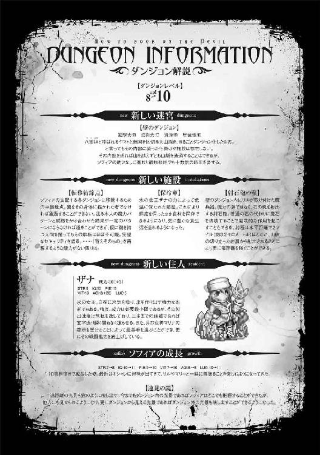
１
魔法陣の基本は円と曲線だ。だが人は、完璧な円というものを描くことはできない。
ある魔術師の言うことには、この世には完璧な円などないのだという。
だがマリーは真なる円を目指しながら、何度も何度も丁寧に陣を描き直していた。
どれだけ描き直しても言いようのない不安が募り、上手くいかないのではないかという予感が離れない。
「マリー。それ以上描き直しても無駄だ」
オウルは更に陣を修正しようとするマリーの手を止めた。
彼の目から見てさえ、魔法陣は完璧な出来だ。
そもそもローガンが無事であれば多少陣がいびつだろうが問題なく呼べるだろうし、無事でなければ出てこれないからやはり問題はない。オウルには、マリーの行為はただ確認を先送りしているだけのように思えた。
「出てきて......ローガン」
召喚の呪を唱え、マリーは祈るような気持ちで陣を見つめる。
するとにわかに魔法陣の中に炎が溢れ、とぐろを巻く蛇のように膨れ上がった。
ぐるぐると螺旋を描きながら立ち昇る炎は柱のように伸びると、パンと弾けて悪魔の形を取る。
「ローガン！」
四本の腕、赤銅色の肌、山羊のような顔、蹄を持った足。
そのどれもが、マリーの知っているローガンそのもので。
「あ？ ババアが気安く名前を呼ぶんじゃねえ。誰だ、てめえは」
彼は一度も聞いたことのない低い声色で、マリーにそう言った。
「分霊？ なんだ、それは」
「まーお前ら人間には馴染みがねえかもな。俺くらいの大悪魔ともなりゃあ、一度に全ての力を地上に送ったりはしねえってことよ」
魔法陣の中にどっかりと座り込んだまま、ローガンはオウルの問いにそう答えた。
「俺で言えば分霊の数は全部で四体。その全てが俺様で、同時に別々の個体だ」
「リルの分け身とは違うのか？」
オウルの問いに、リルはこくりと頷いた。
「うん......わたしのは、単にわたしという存在が、身体を増やしてるだけよ。遠隔操作できるよくできた操り人形みたいなものだから」
「どちらかと言うと、私の分け身に近いのかも知れません」
「ああ、そういう理解で構わねえ。違うのは、本体と呼べる存在が四体いるってことだ」
スピナの言葉にローガンはそう答え、オウルは僅かに瞠目する。
「スピナのことを知ってるのか？」
「言っただろ、全部俺は俺なんだよ。記憶や知識は共有してる。だからあんたたちのことは知ってるし、契約だって元のままでいいぜ」
ローガンは極めて強力な悪魔でありながら、その契約条件は信じられないほど緩い。
普通ならば何十という人間の魂を要求されても不思議はないというのに、殆ど魔力の供給だけで働いていた。
「ローガンは......元々の分霊は、どうなったの？」
「さてな」
マリーの問いに、ローガンは肩をすくめる。
「記憶の同期は魔界に戻る度にだから、どうなったかはわかんねえよ。だがまあ、こうして別の分霊の俺が出てくる羽目になってるってこたあ、消えたんだろ。仮初めの肉体しかない地上で、どうやって消したのかまではわかんねえけどな」
「......そう」
マリーは手にしていた剣をぎゅっと掻き抱く。
「まあ気にすんな。どっちも同じ俺だ。能力には一切差がねえ。これからもよろしくお引き立ての程をってな」
「いいや。お前とは契約しない」
にこやかな口調で言うローガンに、オウルはきっぱりとそう答えた。
「あぁ？ なんだってん......おい、本気かよ!?」
光り輝き送還の準備を始める魔法陣に、ローガンは結界を拳で叩いて抗議する。
「待て！ ふざけんな、わざわざ呼んでおいて返すだと!? そんな馬鹿なことがあるかよ！ おい、オウル！ 俺を──」
「アイツは！」
ローガンの声を遮って、オウルは怒鳴った。
「俺のことを、『旦那』と呼ぶ。消え失せろ、名も知らぬ悪魔」
とぷん、と水没するようにして。
赤い悪魔は、魔法陣の奥へと消えた。
「......あんなの、ローガンなんかじゃない」
「うん。あたしもそう思う」
涙を浮かべて言うマリーを、ユニスがぎゅっと抱きしめる。
リルも、スピナも、オウルも。その場にいるものは皆、同じことを思っていた。
口調も、性格も、能力も、あるいは記憶も全て同じ。
言っていることに嘘はないのだろう。
だがその記憶というのは、まるで本で学んだような薄っぺらいものだ。
本人は同一の存在だと言っていたが、言葉の端々からそれが感じられた。
「......それにしてもマリーのことを全く覚えていなかったのは不思議ですが」
同期は魔界に帰るごとと言っていたが、最後に帰ってからそれほど長い月日が経っているわけではない。サクヤとの戦いで呼び出す時に魔界を経由したから、せいぜいが数ヶ月前だ。
「きっと、ローガンはそれを自分だけの記憶にしたくて、報告しなかったんだよ」
何の根拠もないユニスの言葉。しかしなぜだかそれは真実であるような気がした。
「だが、奴がいないとなると、戦いは更に厳しいものになるな」
先の戦いにおいて、ウセルマートは明らかに油断していた。
だがあの巨大な石造りのダンジョンで防備を固める彼にもはや慢心はないだろう。
その上、あのダンジョンは膨大な砂の中にある。
つまりサクヤの山に攻め込んだ時のように、ダンジョン同士を繋ぎ合わせて攻め込むことができないということだ。砂では、壁も柱も天井も作ることができない。
ダンジョンに引き籠もった相手を打ち倒すことがどれだけ困難なことであるかは、オウル自身が誰よりも知っていた。
討ち果たすための千載一遇の好機を、オウルは逃したのだ。
「それに......ホスセリも」
「ああ」
ぽつりと呟くユニスの言葉に、オウルは苦々しい思いで頷く。
ホデリもそうだが、ホスセリは正確にはオウルの部下ではない。サクヤの部下だ。
であるが故に、呪いの類は殆どかけていなかった。
それは明確なオウルの失態だ。
ウセルマートにはああ言ったが、確かにオウルは腑抜けてしまっている。
自覚はあった。
力を手に入れたが故の油断や慢心だと、そう思っていた。
だがこうしてローガンを失ってみて、初めてオウルはそうではないことに気づく。
リル。ユニス。スピナ。マリー。心配そうに見つめてくる妻たちの表情を。
いや、彼女らだけではない。
己の内に入れてしまった者たちを、オウルはもう心の底から疑うことができない。
たとえそれが、容易く失われるものだとわかっていても。
──オウルは彼女たちを、信頼してしまったのだ。
「殿。よろしいでしょうか」
ちょうどその時、扉の外から声をかけるものがあった。
「ああ。入ってこい」
「失礼いたす」
沈痛な面持ちで連れ立って入ってきたのは、ホデリだ。
妹が裏切りという罪を犯した故だろうか。常とは違いその腰に剣を帯びず白い装束をまとった出で立ちで、ホデリはオウルの前に膝をつき、立てた踵の上に腰を下ろした。正座と呼ばれる、彼らが改まった時にする座り方だ。
「此度の我が愚妹の所業。そしてそれを見抜けなかった某の咎。申し開きもございませぬ。なれどあれは奴の独断。我が主のあずかり知らぬこと。何卒......何卒、寛大な処置を賜りますよう、このホデリ、厚顔にもお願い仕る」
「ああ。俺もアレがサクヤの指示であるとは思っておらん。悪いようにはせぬ」
手をつき、額を床に擦り付けながら懇願するホデリに、オウルは鷹揚にそう答える。
「ご厚情、まっこと感謝いたします。──しからば」
ホデリは顔を上げると、懐から短刀を取り出した。
反射的にユニスが身構えるが、ホデリに敵意や殺意は全く感じられない。
そもそも襲い掛かるのなら正座したままというのは妙なことだ。
一体何をするかと見守っているとホデリはぐいと着物をはだけ、短刀を己の腹へと突き刺した。
「な......!?」
何らかのまじないなのか、それとも別の意味があるのか。
戸惑い硬直するオウルたちをよそに、ホデリはぐっと真横に短刀を引いて腹を切り裂き、更にへその上辺りから縦に刃を進めて、十文字に切り裂く。
「何を、している......？」
血と臓物がどぷりと溢れ、目を見開くホデリにオウルは恐る恐る尋ねるが、返事はない。
「し、死んでる......」
リルがつつくと、ホデリはバランスを崩し己の血の中にどしゃりと崩れ落ちた。
「リル、ユニス、確かシャルがまだこの迷宮にいたはずだ！ 探して呼んでこい！ スピナ、マリー、手伝え！ 蘇生するぞ！」
オウルは大慌てで、そう叫んだ。
蘇生魔術というものは、必ず成功するものではない。三つの要素によって左右される。
一つ目は、術者の能力。当然のことながら蘇生魔術をかける者の腕が良いほど成功確率は上がる。その点に関してはオウル自身もかなりの腕を持っており、回復・防御を専門とするシャルはトップクラスの技術であると言って良いだろう。
二つ目は、遺体の状態。肉体が欠損していればいるほど蘇生は難しいものとなるが、ホデリの場合は腹を裂いたのみでそこまで悪い状態というわけではなかった。重要な臓器のいくつかズタズタになっていたが、シャルは骨しか残っていないような者さえ蘇生した過去がある。
そして三つ目は、本人の生命力だ。多少年かさではあるものの、流石は一流の武人と言うべきか。ホデリの体力もまた、一流と呼んで良い域に達している。
だが、肝心の生きようとする意志そのものが、著しく欠如していた。
操られたわけでも、嫌々でもなく、納得して死んでいったということだ。
「まったく、驚かせおって......」
それでもなんとか蘇生に成功したホデリに、オウルは肩で息をしながら胸を撫で下ろした。
「何故......某は生きておるのですか」
再び自害しないよう縛り上げられたホデリは、ぼんやりと天井を見ながらそう言った。
「逆に、なんでいきなり死んだのだお前は」
「それ以上の、詫びの方法を知らぬからです」
「なにそれこわい」
迷いなく答えるホデリに、リルが率直な意見を零す。
「そんなことが詫びになどなるか！」
「では......如何様に死ねば」
「死ぬことから離れろ！ お前たちヤマト人はみなそうなのか？」
オウルは深く深く息をつく。全く理解不能だった。
「大体、お前は俺に剣を捧げただろう。道具が勝手に壊れていいと思っているのか」
「それは......」
「お前に死なれて害こそあれ、何の得にもならん。悪いと思うのなら働きで返せ」
「......はっ」
深く頷くホデリに、オウルはユニスに命じて縄を解かせる。
「で、お前の妹は何故裏切った。お前は知っていたのか？」
「いえ......不覚にも、全く知り及んでおりませんでした。かくなる上は、某が必ずや討って」
「だから死ぬの殺すのといった話はよせ。処遇は俺が決める」
辟易としながらオウルは告げた。
「理由の方は......まあ、ある程度察しはつくがな」
ホスセリたちの祖先に呪いをかけた神は、サクヤも知らないという。
だが全知の力であればわかるだろう。あるいは、解き方さえも。
それを餌に話を持ちかけられたと見ていい。
そしてオウルの勘違いでなければ、それをホスセリに決意させたのは他ならぬオウル自身のせいだ。獣混じりの女であるならまだしも、獣そのものを抱けるかと言われれば、流石のオウルも厳しいものがある。ホスセリもそれをわかっていたのだろう。
それ故にか、裏切られたと言うのにオウルの心中には不思議なほどに彼女への怒りは湧いてこなかった。
「裏切りと言えば、もう一人話を聞かねばならん相手がいたな」
ウセルマートとの戦いを、オウルは思い出す。
追い詰め、しかし逃すことになった原因の、その一つ。
「ザナを連れてこい」
２
「さて。釈明があるのならば聞かせてもらおうか」
オウルはザナを呼びつけると、深々と椅子に座り脚を組んでそう問うた。
「何故お前はあの時、手を止めた？」
力が及ばず勝てなかっただけなら、オウルは責めはしない。
だがウセルマートを追い詰めたあの時、ザナは明らかに攻撃を自らの意志で止めた。
「イェルダーヴは......あの子は、わたしの実の妹なの」
ザナは俯きながら、独白するように答える。
「なんだと？」
片や分厚い毛皮に覆われた、白い肌のスレンダーな体型の美女。
片や肌も露わな褐色の肌の、豊満な体つきの女。
あまりにもその雰囲気がかけ離れているから気づかなかったが、しかしよくよく思い返してみれば確かにその紫水晶のような髪の色はよく似ていた。
「ウセルマートは妹を......わたしの国の太陽を、奪った。あいつの全知の半分は、イェルダーヴの力なの。あの子の首に首輪がついていたのを覚えている？」
「ああ」
リルよりも扇情的な服装にあの太く無骨な首輪は酷く不釣り合いで、短い間であったが印象に残っていた。
「あれには呪いがかけてあるの。つけられたら最後、二度と外せず自我も失う。ウセルマートの命令を聞く人形になってしまうのよ」
ザナは言って、ぎりと奥歯を噛み締める。
溢れんばかりの怒りと憎しみが、繋がる魂を伝ってオウルの心へと流れ込んできた。
「なるほど......お前があれほどウセルマートを憎んでいたのはそれが理由か」
ただの敵国の王に向ける憎悪にしては、あまりに深い憎悪だとは思った。
妹を攫われ、無理やり支配されているのならばその憎しみにも納得がいく。
「ええ。ごめんなさい......けれど、次は殺すわ」
決意を秘めた瞳で、ザナは呟く。
その心中に渦巻くのは強い強い憎しみだ。
......だがオウルはそこに何か、違和感のようなものを抱いた。
言葉にできない、何かを見落としているような、そんな感覚。
「オウル、大変じゃ！」
それが何かを掴む前にテナが慌てて駆け込んできて、オウルの思考は霧散した。
「屍兵たちが、五日の後に山を越えてくる。それから十日でダンジョンが落ちるぞ」
「なんだと？ 雪解けまではまだ一月あるはずだろう？」
雪解けの時期はテナの予知だけでなく、気象学や過去の統計でも裏を取った情報だ。
そう簡単に変わってしまうものでもない。
「うむ、そうじゃ。じゃが、奴らは炎の術で無理やり雪を溶かしてやってくる」
「そこまでの力がある、か......」
確かにあの時、ウセルマートの炎は雪山の一部を消失させた。あの熱量ならば雪を溶かすことなど造作もないだろうが、ヤエガキ山脈は高く広い。横断できる範囲の積雪を全て溶かし尽くすとなれば十や二十の炎では足りまい。
「巨大な炎の塊が、まるでもう一つの太陽のように輝いて山脈を照らし出しておる。その熱が雪を溶かし......そして、このダンジョンの大半をも焼き滅ぼす」
テナの腰で四本の尾がわさわさと蠢いて、虚空に炎が灯る。そしてまるで紙にインクが滲むかのようにぼやけたかと思えば、炎は色を帯びた映像となって宙に奔った。
描かれるのは、ぽっかりと大きな穴を穿たれ所々からまるで血のように溶岩を噴き出す試練の山。そしてそれとそっくりな形に肌を焼かれ、皮膚を爛れさせて泣きわめくソフィアの姿だ。
「──！」
それだけでオウルは目を見開き、言葉を失うほどの怒りを感じる。だがテナの映し出す映像はそれだけに留まらなかった。ホデリが、サクヤが、ユニスさえもが無数の屍兵に押され、疲弊の末に殺されていく。そしてオウルもまた、ウセルマートの炎によって燃やし尽くされ、その生命を落とした。
動くもののなくなったダンジョンの中で、ウセルマートは泣きじゃくるソフィアの髪を掴み、まるで家畜か荷物でも扱うかのような乱雑さで屍兵たちに預ける。殺す気はないが、かといって丁重に扱うつもりもないらしい。
「もう良い、止め──」
「待て」
あまりに不愉快な光景に止めさせようとするオウルを、テナが制止した。
「なんじゃと......!?」
炎で描かれたウセルマートが、こちらを振り向いたのだ。偶然ではなく、その視線は明らかにテナを......そして、オウルを捉えている。そして、その口が開いた。
「『見ているな？ 異境の魔王よ』」
狐火による投影では、声までは再現できない。代わりにテナがその言葉を口にする。
「『これが貴様の運命だ』」
「そうか......貴様、過去を見ているな？」
「『そうだ。余は未来は見通せぬ。だが過去であれば知ることができる。故に貴様がこれから口にすることを、余は知っている。その辿る道もな』」
実に奇妙な光景だった。予知と全知。
二つの能力によって、過去と未来とで会話が成り立っている。
「『だが貴様らを滅ぼすのはあまりにも惜しい。そこで、取引をしよう』」
「取引だと？」
「『ああ。火の山の神。角と羽の生えた女。四振りの剣を使う金髪の娘。それを渡せば、他の者の命は奪わずにおいてやる』」
ウセルマートが指定したのは、サクヤ、リル、マリーのことだろう。
テナの予知が描き出す未来の世界では、彼女たちは屍兵に殺され、既に物言わぬ死体となっていた。リルもウセルマートの炎に焼かれ、ローガン同様本体ごと滅ぼされた可能性が高い。
「何が目的だ？」
だがその三人の共通点がわからずに、オウルは問う。
「『目的？ 目的だと？』」
流石にテナも笑い声まで再現はしないが、映像だけでウセルマートがオウルを嘲笑っているのはわかった。
「『女の使い道など、犯す以外に何がある』」
「交渉は決裂だ。その首を叩き落としてやる。楽しみに待っていろ」
オウルの言葉と共に、狐火の幻影は掻き消える。
それはただの幻、未来にありえるかも知れない可能性の一つでしかない。
だがなにせ相手は全知だ。
その会話自体は、恐らくは今現在のウセルマートにもまた伝わっていることだろう。
「ねえオウル......わたしなら、あいつの取引っていうのに応じてもいいのよ」
気が進まなそうに、しかしリルはそう口にした。
「あいつがわたしを抱く気なら、サキュバスの本領よ。そのまま魂引っこ抜いてやるわ」
「いや......そう上手くはいくまい」
オウルは首を振った。ザナの言う服従の首輪。
それがどのようなものかはわからないが、恐らくは悪魔にも効果を発揮するだろう。
何よりオウル自身に、目的のためであろうと自分の女を他の男に抱かせるつもりなど毛頭なかった。
「──とにかく、対策を練るぞ。リル、スピナ、会議の準備をしろ。ユニス、お前は軍をいつでも動かせるようにしておけ。テナ、予知で何か新しい情報が見えたら、真夜中でも良い、すぐに知らせろ」
矢継ぎ早に指示を飛ばしながら、オウルは会議室へと向かう。
とはいえ、準備できる時間はたったの五日だ。更に短くなっている可能性すらある。テナの予知には、それを知って変えた行動の結果を予知できないという致命的な欠点があるからだ。
それに対策を練っても、その内容は相手も感知する。
果たしてそんな状況で有用な手が打てるものだろうか。
「オウルさま、わたしは？」
「お前は......ソフィアのことを見ていろ」
問うマリーに、オウルは言った。この場に彼女の姿はないが、ソフィアはダンジョンの中のことであれば全て把握している。先程の映像も目にして、ショックを受けているはずだ。
「......わかった」
マリーは、悔しげに頷いた。オウルの指示は間違ってはいない。会議にマリーが出ても有用なことを言える気はしなかったし、ユニスの手伝いだってできない。
だが、ローガンを殺した相手に何もできないことが、堪らなく悔しかった。
「......あの」
その場に残されたマリーに、ザナが話しかける。
「一つ、あなたにしかできない有用な手があるのですが......お聞きになりますか？」
にっこりと人好きのする笑みを浮かべて、氷の女王はそう持ちかけた。
３
「うわっホントに来た」
ヤエガキ山脈を越えたその先、砂漠に臨む山の麓。
そこに現れた姿に、マリーはげんなりとした声を上げた。
ボロボロの布を巻かれた屍の兵士たちを引き連れた、褐色の肌に黒い髪の美丈夫。
砂の王ウセルマートだ。
「余をここへと呼んだのは、貴様であろうが」
「そうだけど、自分の部屋で呟いただけだもん。乙女の部屋をずっと覗いてるの？ このヘンタイ。着替えとかも覗いてるんじゃないでしょうね」
「なっ......ふざけるな。王たる余が、そのようなことをするものか」
マリーの言葉に、ウセルマートは苛立った様子で答える。
「......オウルさまはあなたの取引を絶対に受けないよ」
「であろうな」
「だからわたしと取引して。そっちの要求の三分の一だけど、こっちの要求も一つで良い......ソフィアに、ダンジョンに酷いことしないって」
そう取引を持ちかけに行けば、ウセルマートは応じる。
ただしオウルには絶対に知らせてはいけない。
それが、ザナの助言であった。
馬鹿なことをしている、という自覚はあった。
だがソフィアが傷つくのを黙って見ていることなどできない。
「ふむ......まあ良かろう。ならばこれをつけろ」
「えー、それつけると服従しちゃうんでしょ」
太い首輪を差し出すウセルマートに、マリーは不満げな声を上げた。
「そうだ」
「じゃあ、あなたがちゃんと約束守るかわかんないじゃない。首輪つけた後、やっぱりそんな約束なしって言われたってその時のわたしにはどうしようもない」
「余が約束を違えると言いたいのか？」
「うん」
迷いなく、マリーは頷く。少なくともオウルならそのくらいのことは平気でする。
疑いなくそんな首輪をつける方が馬鹿なのだ。
「痴れ者め。余は王の中の王。愚民をわざわざ騙したりなどせぬ」
「そんなこと知らないもん。わたしにとっては知らないおじさんだよ」
「貴様......！ 言うに事欠いて、余を、おじさんだと!?」
あ、そこに怒るんだ。とマリーは思った。
ウセルマートの見た目は、せいぜい二十代半ばといったところだろうか。
この反応を見るにオウルのように見た目と実年齢が一致していない、ということもなさそうだ。
「とにかく、それはナシです。少なくともわたしが納得するまで」
「だが貴様はどうすれば納得する？」
「そんなの自分で考えてよ。全知の王様なんでしょ」
マリーが生意気な口調で言うと、ウセルマートは苦虫を噛み潰したような表情で舌打ちした。
「口の減らぬ女だ......ついてこい」
くるりと彼が踵を返すと、砂を割って石のダンジョンが突き上げられてくる。
それを眺めながら、マリーはほっと息を吐いた。
──とりあえずここまでは、予定通りだ。
「狭いね、このダンジョン」
ウセルマートのダンジョンは、巨大な石を無数に積み上げて作られたものだ。地下を掘って作り上げたオウルのダンジョンと違って、それは百パーセント人工的に作り上げたもの。途方もない労力をかけて作られたのは間違いなかったが、その分通路は人一人がなんとか通れる程度の広さでしかなかった。
「ダンジョンではない。ピラミッドだ」
憮然としながらウセルマートは答える。
「余の後ろを離れるなよ。知らぬ道に入り込めば、貴様もああなる」
指し示すその先にあるのは、カサカサに乾燥した屍の兵だ。よく見れば横道の所々に屍兵が安置してある。恐らく招かれざる侵入者に対しては敵となり、襲い掛かる仕組みなのだろう。この狭い道の中で襲われ、前後を囲まれたらかなり厄介なことになりそうだ。
入り組んだ迷宮を、どれほど歩いただろうか。マリーは徐々に進む道が広くなり、そして緩やかに上っていっていることに気づいた。傾斜はごく僅かだからそう簡単には気づかないだろうが、ダンジョンで育ったマリーは別だ。
オウルのダンジョンにもこういった仕掛けはあった。気づかない程度のごく僅かな傾斜や曲がり道によって、地図と実際の位置をずらすのだ。
「おかえりなさいませ、神帝陛下」
やがて広い部屋に出ると、槍を構え剣を腰に下げた褐色の肌の兵士たちが二人を出迎えた。その奥にはザナの妹だという褐色の美女、イェルダーヴも控えている。
「生きてる人もいるんだね」
「当然であろうが」
兵士たちはイェルダーヴと違って、首輪もつけていないし目にも意思の光がある。どうやらごく普通の兵士であるようだ。
「見ろ」
部屋の中央、一際高くなった天井をウセルマートが指差すと、轟音を立ててそこに穴が開き、青い空が見えた。先の戦いの時、ウセルマートたちがピラミッドの中へと逃げ込んだのはここからだったのだ、とマリーはすぐに察する。
「太陽が......二つある」
そしてその青い空には、太陽が二つ光り輝いていた。
「一つは我が神、アトムの力で作り出した核熱の炎だ」
「核熱......？」
聞き慣れない言葉に、マリーはオウム返しに問い返す。
「この世界ができるよりも前より燃え盛り続ける、始原の炎。全てを焼き滅ぼす真なる火よ」
言いながら、ウセルマートは部屋の中央にある卓の上にさらさらと砂を撒く。すると白い砂はひとりでに動き、卓の上に砂絵を作り出した。
二つの山と、間に立ちふさがる壁のような線。そしてその上に、放射状の線をまとった円形の紋様。極めて簡略的な絵だが、それが地図のようなものであることをマリーはすぐに察した。地図とは言っても見下ろした図ではなく、横から見た断面図のようなものだ。
二つの山が、オウルたちが本拠地にしている試練の山とこのピラミッド。壁はヤエガキ山脈。とすれば上の紋様は、ウセルマートが作り上げた核熱とかいう大火球だろう。
「流石にあれほどの炎ともなれば、余といえども作るには数日はかかる。それを、こうだ」
ウセルマートがざっと手のひらで円形の紋様を掃き散らせば、天に輝く炎も霧散した。
「これでよかろうな」
「むむむ......」
作るのに数日かかるというのが本当かどうかわからないとか、数日かかろうがまた作り直したら約束を果たしたことにはならない、などとゴネることもできる。
が、流石のマリーもこの状況で言い出す気にはなれなかった。完全に敵の手中、真っ只中だ。下手なことを言えば即座に殺されても文句は言えない。ウセルマートとて、そこまでマリーに価値を見出しているわけでもないだろう。
「わかった。いいよ」
「その前に」
顎を引いて居住まいを正すマリーの首を、ウセルマートの手のひらが掴んだ。
「その余計な物を叩き落としてやる」
彼の手のひらから炎が漏れ出し、マリーの喉を焼く。
そこは一瞬にして焼き切られて、金の髪と共に彼女の首はぽろりと落ちた。
──かと思えば、首を失った身体と頭がそれぞれ別々に走り出す。
「やっぱりバレてたっ！」
マリーの首はみるみる膨れ上がると、白い髪の少女となって叫ぶ。同時に首を失った身体の方は、すぽんと襟首から首が飛び出し元の姿へと戻った。
変化の術で頭に化けたユツを、首の上に乗せていたのだ。
ザナはオウルには伝えてはならないと言ったが、他の者に伝えることは禁じなかった。これがリルやスピナであれば間違いなくオウルにも伝わってしまっただろうが、ユツだけは素直にマリーに協力してくれるだろうという予感があったし、事実その通りだった。
「追え、逃がすな！」
ウセルマートの指令に、兵士たちが慌ててマリーたちを追いかける。
ユツが懐から木の葉を取り出してバラまくと、それは無数のマリーとユツの姿となって走り出した。
「小癪な真似を！」
本物を見失って兵士たちが戸惑うそのうちに、マリーとユツは逸れぬように手に手を取って迷宮の中を逃げる。
「マリーちゃん！ どっち!?」
「ええと、こっち！」
この時のために、マリーはしっかり入り口からの道を記憶していた。石造りの迷宮は酷く入り組んでいる上に、どこもかしこも同じ光景に見える。ユツも道順は覚えようと努力はしていたが、入って百歩も歩かぬうちに諦めていた。
だがマリーは別だ。彼女はただ連れられて歩いていたわけではない。その歩幅は常に一定で、歩数を数えることによって頭の中に正確な地図を描く。壁についたほんの僅かな傷や汚れを記憶して目印にする。ダンジョンで暮らすうちに、当たり前のようにできるようになった技術だった。
「次はここを右......あれえ!?」
しかし立ちはだかる石の壁に、マリーは思わず叫び声を上げた。
「おかしい、こっちであってるハズなのに......！」
道を戻って確認しても、記憶に間違いがあるようには思えない。
ここに壁などなかったはずなのだ。
「マリーちゃん、あれ見て！」
示すユツの指先を見ると、来た道が音もなく石壁で埋まっていくのが見えた。
「道が、変えられてる......！」
その可能性を失念していたことに、マリーは歯噛みした。ピラミッドそのものが砂の中に埋まったり出てきたりするのだ。その中も自在に動くことくらい、予想して然るべきだった。
「天門も、転移魔法陣も、やっぱり駄目か......」
ユニスを呼ぶか、転移魔術を使えれば逃げられる。だが案の定、そちらは対策されているらしく効果を発揮しなかった。
「......この壁は、なかったんだよね？」
ユツが壁に触れ、マリーに尋ねる。
「うん。来た時にはこんなところに壁なんかなかった。それは間違いないよ」
「じゃあ、任せて！」
ユツは言って、己の腰から伸びた狸の尾を引き抜いた。それはすぐさま巨大な鉄槌に変化して、彼女は思い切りそれを壁に叩きつける。
一撃目でヒビが入り、二撃目で小さな穴が空いて、思い切り振りかぶった三撃目で石の壁は粉々に吹き飛んだ。
「さっすがユっちゃん！」
その光景にマリーは快哉を叫び──
崩れた壁の向こうにいたウセルマートの姿に、絶句した。
「遊びはここまでだ」
宣言するウセルマートに、マリーは腰の剣に手をかける。だがそれを引き抜く前に、彼女の腹に大きな拳が叩き込まれた。
「ぐっ！」
「マリーちゃん！」
砂漠で出会った巨大な屍兵が、その気配すら感じさせずにマリーの背後をとっていた。
てっきりタツキの鉄砲水に流され失われたものと思っていたが、しぶとく生き残っていたらしい。死んでるから生き残ったとは言わないか、と妙に悠長な言葉がマリーの脳裏をよぎる。
そのまま、マリーの首に首輪が嵌められる。その瞬間彼女の瞳からは意志の光が消え去り、手足からも力が抜けてくたりと垂れ下がった。
「よくも......！」
ユツは渾身の力を込めて鉄槌を振り下ろす。分厚い石の壁さえ破壊するそれを、屍兵は片手で軽々と受け止めた。そしてもう片方の手でユツの喉を掴み、まるで猫の子でも扱うかのように宙に吊り下げる。
「さて。貴様は取引にはなかったが............余の城に無断で入り込んだ咎、その身をもって償ってもらおうか」
ウセルマートの好色な視線が爪先から首までを舐めるように這い回り、ユツはその気色悪さに身体を震わせた。
「陛下。こちらの娘はいかがなさいますか」
兵士が無表情で立つマリーを示し尋ねる。
「ふん......好きにしろ。殺さぬようにだけ気をつけろよ」
ウセルマートはマリーを一瞥すると、興味なさげにそう言った。
「マリーちゃんを......離して......」
ユツが己の首を締め付ける屍兵の腕を掴みながら印を組むと、地面に転がった鉄槌が巨大な蛇となってウセルマートに襲い掛かる。
「黙れ。お前が今から口にして良いのは、嬌声と余への賛美だけだ」
だが強烈な光が瞬いたかと思えば、大蛇はまるで光の中に溶けるように消え去った。
「我が神、アトムの力の前ではそのような低級霊、物の数ではない」
吐き捨てるように言い放ち、ウセルマートは屍兵にユツを寝室へと連れていくように命じる。
「余の偉大さがわかるまで、たっぷりと可愛がってやる」
王としての落ち着いた態度を剥ぎ取り、ウセルマートはその獣欲を露わにした。
「こりゃあ上物だ」
表情をなくし、まるで人形のように佇むマリーを囲んで男たちは下卑た笑みを浮かべた。
まるで太陽の光を束ねたかのような金の髪に、オアシスの豊かな水を凝縮したかのような青い瞳。そして砂漠の女にはない白い肌は、まるで生ける芸術品のようであった。
「しかし陛下も勿体無い。これほどの娘を歯牙にもかけぬとはな」
「お陰でこうしておこぼれにあずかれるのだから、ありがたく頂くとしよう」
屍兵や服従の首輪で意志を奪ったものだけでは、国を運営し軍を統括することはできない。
だがウセルマートは己以外を一切信じぬ王だ。ほんの僅かにでも謀反の疑いがあれば躊躇うことなくその心臓を抉り出して屍兵へと変えた。
とはいえ恐怖だけでは人間というものは従わない。表面上は従ったとしてもいつか逆らうであろうことも彼は理解していた。
だから代わりにこうして、配下の男たちに好みでない女や飽きた女を度々下賜する。
そうなった女たちは兵士たちの共有物となり、壊れるまで性欲処理に使われるのが通例だった。
「殺すなとのご命令だからな。優しくしてやれよ」
「死ななきゃ良いんだろう？」
下卑た笑みを浮かべながら一番年かさの男がマリーを組み敷いて、下衣を外し剛直を取り出す。
押し倒された拍子にマリーの腰に下がった剣が寝台の縁に当たり、傾いて鞘走った。
「おっと、危ないな。こんなものは先に外しておけ」
剣を拾おうとした男の手が、ずるりと落ちる。
「......あ？」
肘の少し先、前腕の半ばから断たれて床を転がる腕を、男たちは呆けた表情で見やる。斬られた本人を含め、誰一人として状況を理解できていなかった。
「マリーちゃんの肌に小汚え手で触れるんじゃねえよ、このビチグソ野郎が」
汚い口調が、愛らしい声色で綴られる。
「何」
次の言葉を発する前に、年かさの男はマリーの振るった剣によって頭を両断されてこの世を去った。
「貴様、何故動ける!?」
「遅えんだよ！」
ようやく状況を呑み込んで男たちは剣の柄に手をかけるが、それが抜かれるより早くマリーの振るう二刀によって首を裂かれて絶命した。
──正確には、マリーの身体を操るローガンに、だ。
「この首輪は......なるほどな。こん中に魂を封じ込んで意思を消すって寸法か」
〈ローガン！〉
マリーの首に嵌まった首輪に手を当てると、その中に封じ込められたマリーの声がローガンの頭の中に鳴り響いた。
〈ローガン、やっぱり生きてたんだね！〉
「おう。まあなんとか、ギリギリってトコだがな。どれ」
ローガンは殺した男たちの胸に腕を突っ込むと、中から淡く輝く玉を取り出して躊躇なく咀嚼する。それは男たちの魂だ。
「不っ味ぃ......が、まあないよかマシか」
マリーの顔を思いっきり顰めて、ローガンは呟く。
魂というのは言うなれば高濃度の魔力の塊のようなものだ。たとえ魔術の素養が全くない者であろうが、人間の魂というだけである程度の魔力を持っている。空っぽになった魔力が、ほんの僅かではあるが満たされた。
「あん時俺は腕を切られた。覚えてるか？」
〈うん〉
それは騎馬を駆る屍兵にやられた時の話だ。切り落とされた腕はマリーが大切に持っていたが、いつの間にか消えてしまっていた。ローガン本人が消えたのだから、それと共に消えてしまったのだろうとマリーは思っていた。
「そりゃ半分正解で、半分間違いだ。本体が消え、普通ならそのまま消滅しちまうトコだったが、運良く依代になるものがすぐ傍にあった。それがこいつだ」
ローガンは先程振るった剣を拾い上げる。四性剣のうちの一振り。熱を司る熱性剣。
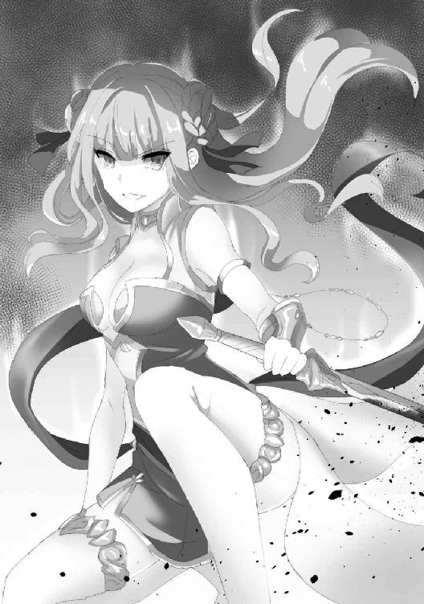
炎の悪魔であるローガンと特に相性の良いそれに宿って、ローガンはなんとかその存在を永らえていた。
「とはいえ腕一本分の力じゃあ殆ど何もできねえ。剣にしがみつくのが精一杯で喋ることすらできなかった。できることと言えば......せいぜい、魂を抜かれた奴の身体を乗っ取って操るくらいよ」
〈フコーチューのサイワイってやつだね！〉
嬉しげなマリーに、ローガンは深く息を吐く。
「お前、いくら何でも無茶しすぎだ。後で旦那に思いっきり怒られるぞ」
〈だって......ローガンがなんとなく傍にいる気がして。いざとなったら助けてくれるって思ったんだもん〉
ローガンが死んだという話を聞いた時、マリーにはそれが信じられなかった。
最初は自分でもただ現実を認めたくないだけかと思ったが、ウセルマートと相対してみると何故かはっきりとわかったのだ。ローガンが、すぐ傍にいると。
「あのなあ」
〈合ってたでしょ？〉
得意げなマリーの声に、ローガンは答える言葉を失う。
小さな頃から、ずっとそうだ。どんなに巧妙に隠れ、他の生き物に化け、姿を消しても、マリーは絶対にローガンを見失わない。そして絶対に助けてくれると、何の疑いもなく信じているのだ。
「......まあ、くっちゃべってる場合じゃねえ」
〈そうだ、ユっちゃん！〉
ユツのことを思い出し、マリーは一転して酷く焦った。
自分のことはローガンが助けてくれたが、今ごろ彼女は酷い目に遭っているはずだ。
「......ま。多分大丈夫だろ」
だがローガンはどこか軽い口調でそう言う。
〈なんで？〉
「アイツとは相容れねえからさ」
〈......？〉
要領を得ないローガンの言葉に、マリーは首を傾げた。といっても今の彼女は魂だけの存在なので、気持ちの上でだが。
「ふざけるな！」
来た道を戻っていくと、どこからともなく怒号が鳴り響いた。ウセルマートの声だ。
「あっちだな」
声は入り組んだ迷宮に反響してどこから聞こえているのかわからないが、ローガンは迷うことなく道を進んでいく。
〈どうしてわかるの？〉
「勘だ」
マリーの言葉に短く答え、ローガンは岩壁を破壊する。
するとその先に、必死に逃げ惑うユツの姿があった。
〈ユっちゃん！〉
「マリーちゃん！」
彼女の着ていた服は無残にも裂かれ、所々焦げ跡がついている。
〈ごめん、わたしのせいで......〉
「犯されちゃあいねえよ。そうだろ？」
ローガンが聞くと、ユツは力なく首を縦に振った。
マリーの姿をしているから、油断しているのだろう。
引き裂かれた服の隙間からちらりと覗く彼女の胸を見てローガンはうむと頷く。
少しばかりとうがたってはいるが、体型そのものは素晴らしい。
ヤマト人に関してだけ言えば、多少判定年齢を上げても良いかも知れない、と思った。
「よくも、よくもこの余に！」
「間違いねえ、あいつは──」
道の先から聞こえてくるウセルマートの怒り狂う声に。
「偽の乳などを触らせおったな！」
「巨乳好きだ」
ローガンはそう、断言した。
４
「あの、えっと、マリーちゃん......だよね？」
いつもと様子の違うマリーに、ユツは戸惑いながら尋ねる。
「俺はローガンだ。この忌々しい首輪のせいで魂を封印されちまったマリーに代わって、この身体を動かしてる」
「ローガンさん!? 封印って......マリーちゃんは大丈夫なんですか!?」
〈大丈夫だよー〉
「俺以外には聞こえやしねえよ。まあ大丈夫......かな？ 下手に首輪を壊したりすりゃあ、魂ごとぶっ壊れちまうが......ま、なんとかなんだろ」
言いながらローガンは剣を抜き、振るう。
ユツのすぐ後ろにまで迫ってきていた兵士が、真っ二つに裂けて動かなくなった。
「ここを無事に出られりゃあ、の話だがな」
「ローガンさん、剣も使えるんですか？」
「何言ってんだ。これをマリーに教えたのは俺だぜ」
マリーの可愛らしい声、愛らしい顔で、ローガンは獰猛な笑みを浮かべた。
「かかってきな！ こちとら魔力に飢えてんだ！」
生者と死者。入り混じって襲い掛かってくる男たちに、ローガンは吠える。
途端、四本の剣が躍った。
その光景に、ユツは目を思わず見張る。
マリーの肉体を使っているからだろう。筋力はマリーのものだ。
動きの速さ、力そのものは変わっていない。
だがその動きはまるで別物であった。
動作はどこまでも軽やかで、武の持つ猛々しさなど微塵もなく、それでいて一切の無駄がない。まるで美しい舞を踊る妖精を見ているかのようだ。その妖精がくるりと身体を閃かせる度に、死体が四つ増えていく。
「おぉっし！ 腹が満ちてきたぜ！」
敵を迎え撃ちながらも魂を喰らい、満ちてきた魔力でローガンは炎を放つ。
炎はそのまま冷性剣に吸い込まれると、強烈な冷気となって兵士たちを襲い、凍りつかせた。
〈そんな使い方もあるんだ......！〉
単に魔力を通しただけでは、冷性剣は触れたものを凍らせることしかできない。
だが火炎弾の形の魔力を冷気に変換することによって、極低温の塊を飛ばしたのだとマリーは悟った。
「旦那からせっかく良い玩具を貰ったんだ。もうちょっと工夫して遊びな」
凍りついた屍兵たちをバキバキと踏み割りながら、ローガンはにぃと笑う。
「あの、逃げる方向はわかってるんですか？」
「まさかこの俺様が何の当てもなく逃げ回ってるとでも思ったか？」
「えっと......」
問いかけに対し自信たっぷりに返されて、ユツは戸惑う。
手当たり次第に敵を撃退しているだけで、とても逃げ道を進んでいるようには思えなかったからだ。
〈うん、思ってる！〉
「ははははは！ その通りだぜマリー！ よぉくわかってんじゃねえか、当てなんてねえよ！」
「ど、どうするんですか!?」
マリーの声は聞こえなくてもローガンの返答からおおよそを察し、ユツは泣きそうな声を上げた。
「良いんだよ。黙ってりゃあ向こうから......そら、来たぜ」
「そこまでだ、下郎」
ローガンが顎をしゃくるその先には、屍兵たちを連れたウセルマートの姿。
「おうおうおう。餌にもならねえゴミをぞろぞろ引き連れてきやがって。そんなに俺様が怖えのか？」
「痴れ者が。余は何者をも恐れはせぬ」
そう言いつつも、ウセルマートはローガンを警戒しているように見えた。
先程不意を打ったとはいえマリーとユツをあっさりと下した巨大な屍兵も傍らにいるが、けしかけてくる気配はない。
「おめえはどういうわけかマリーが必要らしい。だから殺しも犯しもせずわざわざこんなもんを嵌めた......」
ローガンはついと首輪を撫でる。
マリーを殺せないとわかっている以上、防御など考えずに攻撃すればいくらでも勝つことができる。
「おら。撃ってみろよ。ご自慢の何もかもを消し飛ばす炎をよお！」
「喰らえ」
煽るローガンに対し、ウセルマートは躊躇せずに杖を振るって炎を飛ばした。
「マジか!?」
〈撃ってきたじゃない！〉
ローガンは慌ててユツを抱え、迷宮の角を曲がって炎をかわす。
「うーん、煽りすぎたか？ 間違っちゃいねえとは思うんだけどなあ」
〈わたしの身体もっと大事にしてよ！〉
「いえ......間違ってないと思います。見てください」
小脇に抱えられたまま、ユツが冷静に壁を指差す。
「あの炎がぶつかった壁が溶けていません。あの炎は石だろうがなんだろうが溶かしてしまうはずです」
怒り狂うウセルマートからユツが逃げ出せたのも、それが理由だ。
冷静さを欠いたウセルマートは狙いを外し、ユツは溶けた壁から抜け出してきたのだ。
「ありゃ普通の火か！ ってことは......」
「追い払って回り込み、さっきみたいに不意を打つつもりだと思います」
「なるほどな」
ピタリと脚を止め、ローガンは踵を返して角を曲がり元の場所へと戻る。
「よう、久しぶりだな！」
「な......」
流石にすぐさま戻ってくるとは思わず意表を突かれたのか、ウセルマートは目を見開いた。
「そしてあばよ。生まれよ、風よ！」
ローガンは湿性剣と熱性剣を打ち合わせ、風を作り出してウセルマートの身体を飛び越える。
「変ぜよ、土よ！」
ついでに残る乾性剣と冷性剣で石天井を変質させてその硬度を思い切り下げる。局所的に強度の下がった天井はその重みに耐えきれず崩壊し、ウセルマートたちを呑み込んだ。
「あのくらいでくたばってくれる可愛げなんざねえだろう。さっさと逃げるぞ、マリー！」
〈うん！ ローガン、そこ右！ その後三つ目の十字路を左！〉
ローガンがどこに向かうつもりなのか悟り、マリーは指示を飛ばす。
「しかしアレだな。あいつ全知っつっても、何でもかんでも全部完璧にわかるわけじゃねえなやっぱ」
「そうですね」
相変わらずローガンに抱えられたまま、そろそろ降ろしてくれないだろうかと思いつつもユツは頷く。
ウセルマートはマリーがここに来ることを知り、ユツがマリーの首に化けていることは見抜いた。
だがユツの大きな胸が憑依によるものであることは見抜けなかったし、ローガンが剣に取り付いていることもわからなかった。
今もローガンが引き返してくることに驚いていた。つまりは、その位置を即座に把握できるというわけではないらしい。
〈まあ流石にローガンが剣に取り付いてるなんて思ってもみなかったんだろうね。わたしも想像もしなかったし〉
「それは完全に運が良かっただけだからな。二度とやるなよ」
思いもよらないことを知ることはできないという弱点があるのは先の戦いでわかってはいたが、そういう事柄は大抵こちらにとっても想定外のことなのだ。
ローガンの存在にしてもそうだし、ユツの胸だって別にウセルマートが巨乳好きと知って大きくしていたわけではない。先程の炎だって、ローガンは本気で焦って逃げ出したからこそウセルマートも油断したのだろう。
〈運の良さにだけは自信があるから、わたし〉
「自慢するようなことじゃねえな......」
ローガンの呆れ声を聞きながら、ふとマリーは何か引っかかるものを感じた。
何か既視感のようなもの。
〈......ああそっか、ユニスか〉
昔オウルに教えてもらった、英雄の話だ。
英雄というものは危機に陥れば都合よく助かり、奇跡が起こって命を拾う。
──悲劇的な破滅を迎えるまでは。
とはいえ、マリーは英雄ではない。もしそうならもっと超人じみた力を持っているはずだ。
年齢に比べれば強いとはいえ、それは師に恵まれただけの話で常人の域を超えるものではない。
英雄に師事したからといって英雄になれるわけではないのだ。
「まあお前さんは昔っから運ばっか良いからな！ おら、ついたぜ！」
扉を蹴破り、ローガンが訪れたのはウセルマートに連れてこられた大きな部屋だ。
「げっ、あの女は......」
そこにはヴェールで鼻から下を隠した半裸の美女......イェルダーヴが待ち受けていた。
「待ってください。マリーちゃんと同じ状態なら、ウセルマートから指示されない限り敵じゃないのでは？」
もはや完全に荷物になりきっているユツが、ふと思いついたことを口にする。
「んなわけあるか。敵に対する対応くらい指示されてるだろうよ。......が、そいつは良い指摘だ」
ローガンはマリーの中から上半身だけ抜け出すと、己の腕を切り落とした。
たっぷり兵士たちの魂を喰らい、その程度は苦でもないほどに回復している。
意志を持つかのように飛んでいく四本の腕に対し、イェルダーヴは機械的な反応で炎を出した。一本を空中で焼き落とし、二本目を盾状に展開した炎で防ぎ、三本目を手のひらで掴んで燃やし、胸に突き立った四本目を、全身を炎で包み込んで焼き消す。
「この俺を燃やすたあ、こいつの炎も普通じゃねえな」
驚きの声を上げながら。
「だが魂も入ってねえ木偶人形に負けるようなローガン様じゃねえぜ」
時間差を付けてイェルダーヴの身体に入り込んだローガンは、崩れ落ちるマリーの身体を支えた。
「さあて。とっととお暇するとするかね」
イェルダーヴの身体を乗っ取ったローガンが火球を放つと、天井にぽっかりと穴が空く。
そしてそこからは、鮮やかな空が覗いていた。
「やっぱダンジョンじゃねえ迷宮は駄目だな」
これがオウルの迷宮であれば、こうも簡単に天井に穴が空くなどありえない。
〈駄目だねー〉
「ですね」
口々に言いつつローガンはマリーの身体とユツを抱え、ふとあらぬ方向に視線を向ける。
「......お前は来なくて良いのか？」
問いかけはただ虚空に響き、何の反応も返ってはこない。
〈ローガン？ どうしたの？〉
「いや......何でもねえ」
マリーの問いかけにローガンは首を振る。
敵地の真っ只中からこうまで容易く抜け出せるのが、ただの幸運であるわけがない。
マリーもユツも気づいていないようだったが、どう考えても敵が少なすぎた。
ローガンにすらその存在を気取られず、敵を排除して回る何らかの存在。
本当にいるかどうかすら定かではないが、仮にいたとしても呼びに応えないのならば連れていくほどの義理もない。ローガンはそう判断し、空へと飛び立つ。このピラミッドから離れれば転移が使えるはずだ。
その姿を見上げながら。
「今更......戻れるはず、ない」
ひび割れたような唸り声が、影の中に響いた。
「この、愚か者がぁ！」
マリーたちが帰ってきたという報告を受けるなり、オウルは飛んでいってマリーの頭に思い切り拳骨を振り下ろした。
「痛ぇっ！ 旦那、今マリーの身体を操ってんのは俺なんだから、マリーを戻してからにしてくれよ！」
悪魔の痛覚というものは非常に鈍い。人間と違って傷に頓着する必要がないからだ。だが人間の身体を乗っ取っている時は相応に痛みを感じる。慣れていない分刺激が強く、涙を浮かべながらローガンは訴えた。
「うるさい、貴様もだ！」
ぎり、とオウルは奥歯を噛み締め、顔を歪ませる。
オウルがこれほどまでに怒りを露わにするのを、ローガンは初めて見た。
「いや、俺は怒られるようなことしてないだろ？ むしろマリーを助けてきたんだぜ。ほらマリー、お前は謝れよ！」
痛みと気迫に恐れを抱き、ローガンは慌てて言い募る。
〈はんせいしてまーす〉
「ばっ、おまっ......ええと、心から反省してるって言ってるぜ！」
反省の欠片もないマリーの口調にローガンはますます焦った。
「この愚か者。愚か者が......」
そんな彼にオウルは腕を振り上げて。
「......よく、戻った」
「へ？」
マリーの頭をぽんと撫で、堪えきれずに笑みを見せた。
「まったく......！ 腕の一本から復活しただと？ くく、まったく相も変わらず無茶苦茶な奴よ。くくく、ははははははは！」
一度溢れだした笑みは止めることなどできず、オウルは哄笑する。
「お、おう......」
どう反応していいかわからず、ローガンは気まずげに頷いた。
「二度と同じ真似をすることは許さん。────だが、今回ばかりは褒めてやる」
オウルの表情からは焦燥が消え去って、不敵な笑みが戻る。
「さあ、反撃の開始だ」
５
「ちくしょー！ 幼女でさえあればー！ この身体が幼女でさえあればー！」
『うるさい、ローガン』
自分の身体を操って叫ぶローガンに、マリーはうんざりとした声で言った。
『オウルさまー、これどうしても外せないの？』
「今は無理だ、諦めろ」
マリーの要求に対し、オウルの返答はにべもない。
服従の首輪は解除不能と言うだけあって、オウルにすら簡単には解呪できるものではなかった。
「別段、自爆機能や遠隔爆破機能はついておらん。ならば当面そのままでも困らんだろう」
『困るよ！ すっごく困るよー！』
「俺もなあ、昔のマリーちゃんならまだしも今の身体じゃなあ......」
故にマリーの身体は当面ローガンに任せることにして、オウルは首輪に更に機能を追加した。声を発することができる機能だ。
「リル。そちらの様子はどうだ？」
「駄目。反応なしー」
やかましい二人を黙殺しつつ問うと、イェルダーヴの身体から這い出しながらリルは首を横に振った。そちらの首輪にも同様の機能を付けたが、イェルダーヴの反応は全くない。リルに取り付いて調べてもらったが、相当深く封印されているのかマリーのように魂越しに交信を試みることもできなかった。
「こうして鹵獲された時の対処くらいはしていたか」
ザナが言うには、ウセルマートの全知の半分はイェルダーヴの力によるものだという。その力をこちらが使えれば、とも思ったが、流石にそこまで甘くはないらしい。
「気を落とさないで、大丈夫よ」
浮かない表情のザナに、リルはことさら明るく言った。
「所詮は人間の作ったものだもの。わたしとオウルなら必ず解除できるわ」
「ええ......大丈夫です、ありがとう」
ザナはにこりと微笑む。
だがその胸の内は変わらない。
不安と焦燥。
そして、激しい憎しみだった。
「パパ、来たよ」
黙々と作業を進めるオウルのもとをソフィアが訪れたのは、それから三日後のことだった。
「映像を出せるか？」
「うん」
ソフィアが頷くと共に壁面が透き通り、そこに窓でもあるかのように外の光景が映し出される。まだ遠くてよく見えないが、無数の屍兵たちがヤエガキ山脈を越え、こちらへと向かってきているのがわかった。
「やはり、少ないな」
その数は膨大。だが、地平を埋め尽くすというほどではない。テナが予知で見たものよりも、相当少なかった。
『炎を作るのに数日かかるっていうのは本当だったみたいだね』
雪を溶かしきれずに無理やり山を越えてきたせいだ。
改めて大火球を作り終わるまで待つよりも、一刻も早く攻める方を選んだということだろう。
それは悪手であるが、同時に最善の手でもあった。
「さて、ソフィア。できるな？」
「......がんばる」
ソフィアは震えながらも、しかしこくりと頷いた。
「そう気負うことはない。タツキ、サクヤ、ミシャ。補佐を頼んだぞ」
「うん、たつきがんばるよー！」
「非才の身ながら、微力を尽くしましょう」
「子を守るは年長者の務めか。褒美に精をたっぷりと弾んでくれろよ」
三柱の神々は若き神であるソフィアをそれなりに可愛く思ってくれているようだった。
彼女たちはオウルの部下というわけではないし、直接の利害があるわけでもない。
「ユツ、テナ、ホデリ。無理はするなよ」
「はい、わかりました！」
「言われんでも、危なくなったらさっさと逃げるからな儂は」
「はっ。この身命を賭しましても」
「賭すな」
ホデリの反応に、オウルは本当に大丈夫だろうかと心配になる。
だが今は彼らに託すしかなかった。
オウルは小さな門をくぐり、作業へと戻る。
後はこれが間に合うかどうか。時間との勝負だ。
「じゃあ、やりますっ」
ソフィアがそう宣言し、両手を前に向けて眉間に力を込める。
「んんんーっ......ええーいっ！」
彼女が気合いの声を発すると同時に、試練の山の前方に突如として森が生えた。
後方に位置している森のダンジョンの一部を入れ替えたのだ。
「ミシャお姉ちゃん、力を貸してくれる？」
「良い良い。そら、持ってゆけ」
お姉ちゃん、などと呼ばれて気を良くしたミシャがソフィアの手を握り、その力を受け渡す。
木々が蠢き大きなアーチを作り上げたかと思うと、そこからずるりと巨大な生き物が引き出された。
鉄の如き黒光りする身体に、毒々しいオレンジ色の無数の脚。
それはいつかオウルが捕らえた大ムカデだ。
突然日の当たる場所に引きずり出された大ムカデは怒りに任せて暴れまわる。
屍兵などその眼中にはないが、ただ移動するだけで何十という屍兵が跳ね飛ばされ、巨体に潰されていった。
「さあ小鬼ども。我とあやつら、どちらが恐ろしい？」
オウルの姿に、森に潜む小鬼たちが蜘蛛の子を散らすかのように慌てて逃げ出していく。
「......頑張ってくださいね」
オウルは手を振ってそう呟くと、くるりと宙返りして一転、鳥へと姿を変えた。
臆病な小鬼たちではあるが、こうしてユツがオウルの姿で脅して回ると彼の姿から逃げるために屍兵たちへと向かっていった。一匹一匹は雑兵にも劣る弱さであるが、数だけであれば屍兵たちにも劣らない。
その上狡猾な彼らは、あまり判断能力を持たず愚直に進んでくる大半の屍兵と非常に相性が良かった。逃げるふりをしては落とし穴に誘い込み、そのまま土に埋める。妖樹の住処に誘導してその餌食にする。進路を読んで投石で敵を押しとどめ、暴れまわる大ムカデに敵を轢かせる。
無論その度に少なくない犠牲は出ていたが、どうせ彼らはすぐ増える。本人たちもそういう認識なのだろう。仲間の死を厭うことなく、屍兵たちを血祭りにあげることに躍起になっていた。
だが屍兵の全てが判断力の低い雑兵ばかりではない。例えば骨の不死馬に乗った騎兵だ。
生きていた頃名のある戦士だったのか、特別に呪力を込められたのか、あるいはその両方か。
高い技量と判断能力の両方を併せ持つ屍騎兵が何体も、小鬼を蹴散らし大ムカデを避けて森のダンジョンを抜け、試練の山へと足を踏み入れる。
「ここを通すわけにはいかん」
その行く手を、テナが阻んだ。
頭からは耳を、腰からはふさふさとした四本の尾を生やし、衣の袖を翻せば狐火がいくつも浮かぶ。
屍騎兵たちは彼女を警戒して足を止め、後続の仲間を待って隊列を組んだ。
その数は五。騎馬、兵ともに最も体格の良い一騎を守るように四騎が壁になって守る構えだ。
狐火の威力はさほど高くない。四本の尾を変化させて武器にしても一騎すら落とせない完璧な布陣。
「行くぞっ！」
狐火を放ちながら襲い掛かるテナに応じるように、屍騎兵は突進し......
もろともに、地面から噴き出すマグマに呑み込まれた。
「判断力を持つということはこちらの都合を考えるということ。つまり騙せるということじゃな」
テナが物陰から姿を現し、焼け焦げ動かなくなった屍兵たちを見やる。
「ですが的確なあの対応。やはり、こちらの戦力自体は知られているようですね」
マグマの中からもう一人のテナが出てきて、焦げ目一つない着物をパタパタと払った。
小柄なその姿は見る間に大きく膨らんで、サクヤへと戻る。
「そうじゃな。指揮をとっている様子がないのは幸いじゃが......サクヤ姫、避けよ！」
テナの鋭い警告に、サクヤは素早く身を翻す。その衣の裾に短刀が突き刺さり、同時に襲い来る斬撃をサクヤはどうにか扇で防いだ。
炎で反撃する前に、小柄な屍兵は素早く退いて剣を構える。
その背後から、似たような姿の屍兵が更に数体。
「あらまあ。ホスセリのような動きですわね」
「我々の苦手な手合いじゃな」
サクヤもテナも炎を使う。高熱で飛び道具を防ぐのは難しい。
しかし体捌きでかわせるほどの戦闘の素養は二人にはなかった。
「ですので、交代です」
サクヤに向かって屍兵が短刀を投擲した瞬間、彼女の姿は掻き消え背後の通路が音を立てて塞がれた。
「相当な手練とお見受けする」
そこへホデリが姿を現して、すらりと刀を抜き放った。
ただそれだけの動作で、屍兵たちは彼の凄まじいほどの強さを察する。
隻腕の男一人に対し五体の屍兵。すぐに彼らは扇状に広がって、ホデリを包囲した。
「いざ尋常に──」
「えいっ！」
勝負、と言いかけたその時、彼らの頭上から大量の海水が降り注ぐ。
「......タツキ殿。彼らはいずれ劣らぬつわもの。勝負させてくださらぬか」
「えーやだ」
首のエラから泡を吐き出しながら懇願するホデリに、タツキはあっさりとそう答えた。
屍兵は死者だ。呼吸ができないところで死ぬことはない。
だがその身軽な動きと投擲の技術は、水中では完全に死んだ。
「詮方ない。これも主命だ、恨んでくれるなよ」
ホデリの口が頬まで裂け、瞳が真円を描き、彼は剣を振るう。
水中であることなど全く感じさせぬ、滑らかな動き。
屍兵たちは避けることもできず、瞬時にして全身をバラバラにされた。
だが彼らはそうされてなお、戦意を失わない。
懐に仕込んだ毒瓶を握りつぶさんと、腕だけを動かして水中を這う。
たった一滴で池の魚を全て殺す猛毒。
「いっただっきまーす」
それごと、タツキは大きく口を開けて一息に呑み込んだ。
バキボキと音を立てながら咀嚼し、ごくんと嚥下して一言。
「まずーい」
「......それだけですか？」
「？ ええと......おかわり？」
ホデリの言葉に、タツキはこてんと首を傾げる。
池を皆殺しにできる毒も、広大な海の前では無力に等しい。
ましてや国をも滅ぼす毒蛇を呑んだタツキにとって、この程度の毒など味の悪い調味料にすぎなかった。
「お疲れさま、みんな」
どうにか第一波をやり過ごし、ソフィアは深く息をついた。
小鬼を除けばダンジョン側の犠牲はほぼなし。一方的と言っていい展開だった。
──今のうちは。
「テナ、これって何日続くんだっけ」
「十日といったところじゃな」
問いに返ってきた言葉に、ソフィアはげんなりとする。
「ここからは輪番を組んで対処しましょう」
サクヤの言葉に、皆が頷いた。
疲れも恐れも知らない屍兵たちの進攻には朝も夜もない。
対応そのものはさして難しくはないものの、減るどころかどんどん増えていく敵にソフィアたちの疲労は溜まっていった。
「......まずい。予知よりも早いぞ！」
そしてそれは、防衛を始めて七日目のことだった。
一気に屍兵たちの数が増えたのだ。
「......不覚。これは、妾のせいです」
サクヤはチラチラと見える薄紅色の花を目にして、己の失敗を悟った。
彼女は火山の神であると同時に、春を告げる樹木の神でもある。
そのサクヤが力を使いすぎたあまりに季節の移り変わりが僅かに早まり、雪を溶かしてしまったのだ。
大地を埋め尽くし黒く染める屍兵たちの群れは、もはや押しとどめることなどできない。子鬼たちの掘った落とし穴など埋める間もなく踏み潰され、山のように伸し掛かられて大ムカデさえ動けなくなり、仲間たちの身体を梯子代わりに山肌を登って試練の山の奥へと進む。
それは蟻の大群に大型の獣が為すすべなく食い殺される光景に似ていた。
「......ここはもう駄目です。お逃げなさい、ソフィア」
いよいよ外郭が食い破られてどっと侵入してきた屍兵たちの存在を感じながら、サクヤはそう命じた。既に他の面々はダンジョンの外へと避難させた。だがソフィアだけが、頑なに逃げようとしない。
「こうなればこの山を溶岩で満たし、灼き滅ぼしてやるより他はありません」
それもほんの僅かな時間稼ぎにしかならないだろうが、とサクヤは心中で呟く。
「パパが......パパが、きっと」
「いいえ。それももはや叶わぬでしょう」
勝つための準備をする。だから時を稼げ。
全知に気取られるのを避けるためだろう。オウルからの指示はただそれだけだった。
オウルが彼女たちを見捨てて逃げたなどとはサクヤも思わない。
だがこの状況を、一体どうやったら覆すことができるだろうか。
強力な兵器？ それとも無数の援軍？
どちらがあっても、数の暴力の前には無力だ。
状況を今から覆す奇跡のような方法があるとはとても思えなかった。
オウルは、間に合わなかったのだ。
「やだ！」
だがソフィアは首を振って、サクヤの手から逃れる。
「聞き分けなさい。あなたの父君も、そんなことを望んではおりません」
「そんなことないもん。だってパパは、サクヤお姉ちゃんのことも大好きだから！」
「......死ぬわけではありません。神はそう簡単に滅びませんから」
だがこの山を噴火させれば、サクヤは深い眠りにつく。ソフィアはそれを敏感に察していた。
目覚めるのは千年後か、万年後か。いずれにせよオウルは生きてはいまい。
「パパは絶対来るよ。だって、ソフィと......わたしと、約束したんだもん！」
ソフィアが叫んだその時、部屋の壁が打ち破られて屍兵たちが雪崩込んでくる。
「ソフィア！」
扇を振るい投げ放った炎は予想の半分も熱量を持たず、サクヤは己の力が尽きかけていることを知る。これではもはや、山を噴火させることすら叶わない。
「無理をするなと、言ったであろうが」
だが次の瞬間降ってきたのは、屍兵たちの汚れた指に引き裂かれる感触ではなく、そんな呆れ声であった。
「まったく、そこまで俺を盲信するとは我が娘ながら一体誰に似たのやら────だが、よくぞ言った」
サクヤが恐る恐る目を開ければ、あれほどいた屍兵たちは皆真っ二つに両断され、地に倒れ伏していた。一体どんな刀を使えばこうまで見事に切れるのか、断面は恐ろしいほどに鋭利だ。
「パパ！」
ソフィアがオウルに駆け寄って、勢いそのままに飛びつく。それを受け止めたオウルはぐらりと身体をよろめかせた。
「旦那様......お身体が？」
「ああ。突貫工事だったからな。流石にちと疲れた」
欠伸を噛み殺しながら、オウルは答える。
「だが、間に合ったぞ。よくやった」
「ですが──一体、何を？」
わしわしと無造作に頭を撫でられ頬を染めつつも、サクヤは思わず問うた。
「ソフィアの、姉だ」
６
それは、巨大な土の塔のようなものであった。
「あれはなんだ。何の意味がある」
砂の王の問いに返事はない。答えるべき口を持たないからだ。
ただただそれはウセルマートの望みに応じて、遥か彼方の地の光景を彼の脳裏に浮かばせる。
土でできた円柱形のその塔は、ただただ土をかき集めて盛り立てているようにしか見えなかった。凄まじく巨大ではあるが、大きいだけだ。中には何の機構も備え付けられておらず、術がかけられているわけでもない。
仮にあれが兵器だったとしても、脅威とはなりえない。
なぜならそれは遥か遠く海の向こう、異なる大陸にあるからだ。
魔王が門を繋いでそちらから戦力を持ってこれることは知っていたが、それには限度があることもまたわかっている。あれほどまでに巨大な代物を持ってくるのは不可能だ。
考えられることは、陽動か。ウセルマートはそう結論づけた。
意味有りげなことをして彼の気を引き、他への意識を引き離す。
それは有効な手段ではあった。
全知は強力な力だが、いくつか欠点がある。
その最たるものが、人間の頭には手に余る、ということだ。
やろうと思えばそれこそこの世の全て、砂粒の数までも数え上げることもできるだろうが、人の頭では処理しきれない。世界のどこにでも目を向けることができるが、見ていない場所を見ることはできないのだ。
「......なるほど。これか！」
オウルの周辺を探って、ウセルマートはそれを発見した。
赤い髪の剣使い。恐らくは魔王の手の中で最強の駒。
それが、斬撃を転移させて飛ばし斬り裂く練習をしていた。
なるほど、この状況でウセルマートに勝つのであれば、彼本人を殺すのが最も手っ取り早い。
どこにでも転移できるあの娘の力をもってすればそれもあるいは可能だろう。
ならば奴はまだ気づいていないのだ。そんな策にはとうに対策を講じているということに。
ピラミッドはただの要塞ではない。それ自体が力を持つ巨大な結界の発生装置だ。
その中では彼の信ずるアトム神以外のありとあらゆる神が力を削がれ、権能を失う。
あの娘がこの中に飛び込んできたが最後、二度と転移は叶わない。
神の力がなければ強いと言っても小娘一人、始末するなど造作もない。
何なら奥の手を使っても良い。いずれにせよこれで、ウセルマートの勝利は揺るぎようがなくなった。
──そう確信した瞬間。
「......は？」
砂の王は表情を歪ませた。
呆けたようにその光景を見つめ、目を見開く。
「馬鹿な......」
ありえない光景が、そこには広がっていた。
「人の......男の器と聞いて、お前は何を想像する、サクヤ」
「器......ですか？」
眠たげに問いかけるオウルに、サクヤは首を傾げた。
「難しいですね。他者を許し受け入れる心根......でしょうか」
「なるほど。ミシャの能力があるだろう。あれが俺にもあるのだそうだ」
よほど眠いのだろうか。ポンポンと話題が飛ぶオウルの言葉に、しかしサクヤは生真面目に付き合う。
「そうですね。神が人に力を与える時は普通、女性に......巫女に降ります。ですが塞ノ神はその......特殊な神でして。男性に力を与えるのだそうです」
塞ノ神は元々男根の姿をした神だ。それが男に力を貸すのは、ある意味で自然なことなのかも知れない、とサクヤは思う。
「うむ。で、ミシャが言うには、本来俺とあいつとで振るえる力に差はないらしい。だが俺がほんの小さな力しか振るえぬのは、俺の器が小さいからだと言う」
「はあ......では、霊力ですとか、魔力の話だったのでしょうか」
「いいや」
オウルは首を振って、言った。
「ペニスの大きさだ」
「ぶっ、ぐ、く、くふ、ぐぅっ......！」
サクヤは思い切り吹き出して、顔を真っ赤にしながら笑いを堪えた。
下ネタに弱すぎるだろう、と呆れつつオウルは話を続ける。
「奴は塞ノ神。境界を塞ぐ神だ。であればその境界の大きさは、塞ぐものの大きさに比例する。つまりはペニスだ」
「ぶふぅっ！ や、やめ、やめてくださいましっ」
はしたないと知りつつも腹を抱えて笑うサクヤ。
「だから作ってやったのだ。我が天のダンジョンが通れるだけの大きさを持つ、男根をな！」
自棄になったように、オウルは叫んだ。
それはかつてオウルがメリザンドと戦った時に作り出した歩くダンジョンの、成れの果て。もはや二度と動かすこともないだろうと放置されたその体格に相応しい怒張を作り上げ、オウルはそこに宿った。もはやその身体を立たせるほどの魔力は用意できないが、局部を勃たせるだけであれば造作もない。
そして、その凄まじく馬鹿馬鹿しい方法で、異なる大陸からやってきた。
ウセルマートにとっての破滅が。
「実にいい顔をしている。そうは思わないか？」
『メリーもね』
この上なく楽しそうな顔をしながらウセルマートの姿を投影する年上の妹に、マリーは呆れ混じりに答えた。
「しかしこれは便利だな。まさか英霊にこのような使い方があるとは、思いもしなかったぞ」
メリザンドの身体に宿るのは、『無明』の名で呼ばれる英霊。全てを見通す千里眼の持ち主、盲目のガイウスだ。
『ちょっと教えただけなのに妹があっという間に口寄せをマスターして、お姉ちゃん悲しいやら誇らしいやら』
「年季が違う、年季が。さあ待たせたな、諸君」
英霊をその身に宿したメリザンドは、マリーどころか英霊自身よりも巧みにその力を引き出すことができた。メリザンドの見た光景が、窓のように無数に浮かんで居並ぶ射手たちの目の前に映し出される。
エレンを筆頭とする黒アールヴの弓使いたちだ。
「矢弾は無限にあるぞ！ 好きなだけ射殺せ！」
その矢になるのは、天のダンジョンの森に生える無数の木々。彼女たちが棲み慣れ親しんだそこは、そのものが強力な魔力を帯びた聖地のようなものだった。その枝を折って矢に加工するのには材料も魔力も必要ない。枝自体に既に大量に魔力が含まれているからだ。
天に浮かぶダンジョンから雨のように降り注ぐ矢は、しかし正確無比に屍兵たちを射抜いていく。メリザンドの操る千里眼とアールヴの魔技が合わさって初めてできる絶技であった。
だが矢に対して屍兵たちはあまりに多く、また既に死んでいる彼らには急所というものがない。矢で貫いただけでは動きを止めない者も多かった。
「風よ。雲よ。我らが友よ。その恵みをどうか分けておくれ」
そこへ、セレス率いる白アールヴたちが一斉に魔術で雲を呼び寄せる。異大陸からもかき集められた雲は本物の雨を降らせ、屍兵たちを濡らした。
無論水に弱いとはいえ、屍兵は雨に濡れた程度で崩れるほど軟弱ではない。
しかしそれも、身体の内に生木の矢を抱えていなければの話だ。
肉に食い込み、雨を吸ったアールヴの魔木は瞬く間に成長し、周囲の屍兵をも取り込みながら大きくなって彼らを喰らい尽くす。
そこへダメ押しとばかりに、白銀の竜が舞った。英雄王ウォルフが宿ったメトゥスの身体だ。
その身が吹き出す毒の息は死者たちの身体さえもあっという間に溶かし腐らせる。
「ソフィアの方は......うむ、問題ないようだな」
メリザンドが眼下からダンジョンの中へと意識を転じさせれば、目にも留まらぬ速さで三つ首の猛獣が駆けていた。その背に跨がるのは勇ましい女騎士──ではなく、純朴な娘。しかし誰より恐ろしい獣の魔王、ミオだ。
彼女の最大の欠点はザナが突いてみせたように、魔獣を操るミオ自身は無防備であることだ。
大群や巨大な敵相手であれば問題とならないが、単独の強者には遅れを取る可能性がある。
──否。あった。
つい先日までは、の話だ。
ケルベロスの爪と牙を掻い潜り、死角から不意を突いて小柄な屍兵が斬りかかる。
ミオはそちらを見ることもなく、すっと左手を掲げた。
その袖口からするりと小さな蛇が飛び出して、剣を咥えて受け止める。
同時にその蛇の尾に生えたもう一つの頭が、屍兵の首に噛みついた。
双頭蛇と呼ばれるその蛇の毒は、瞬く間に屍兵を石へと変えて砕く。
天井に張り付き、落下して奇襲をかけた屍兵は、ミオの右腕に乗った小さな火蜥蜴の炎に焼かれて一瞬で燃え尽きた。
投げ放たれた短刀は、ミオの胸元に入った小さな獣が額の宝石を輝かせると見えない壁に弾かれ落ちる。結界を自在に作り出す魔獣、カーバンクルだ。
何十何百という犠牲の末に、屍兵たちはようやく魔獣の防護を掻い潜ってミオの頬に僅かな傷をつけることに成功した。だが彼女の頭の上に乗った白い小鳥がぺろりと舐めたかと思えば傷は瞬く間に消え、小鳥の吐き出した息に触れた屍兵の同じ場所に何十倍も深くなった傷がつく。医療を司る神鳥カラドリウスは、人の傷や病を吸い取り他人に与える力を持っていた。
ミオ自身が攻撃に気づかずとも、全方位にあらゆる感覚を巡らせた魔獣が必ずそれを察知し防ぐ。防ぎきれなかったとしてもすぐに癒やす。小さな魔獣を何匹も身につけたミオは、もはや全身凶器であり、単独で軍隊に匹敵するような存在に成り果てていた。
「......あれ、反旗を翻したらどうもならんぞ」
『その時は諦めよう』
頭を抱えるメリザンドに、マリーは潔く答えた。
７
「く......ははははははは！ 痴れ者め。むしろ好都合というものだ」
ウセルマートは哄笑した。
それは負け惜しみなどではなく、心からの笑いだ。
「核熱の炎。防げるものなら防いでみるが良い！」
山頂の雪を溶かしていた炎に、霊力を込める。
防げるわけがない。それこそはこの世で最も力を持つ神の威光。
全てを滅ぼす始原の炎なのだ。
「オウル。あたしにできると思う？」
悪戯っぽい笑みを浮かべ、ユニスはオウルに問うた。
わかっていて聞いているな、とオウルは思う。
彼はそう言った不確実なことを断言する性格ではない。
それをわかっていながら、ユニスはそう望んでいるのだ。
「そうだな......」
それはつまり。
「お前になら絶対にできる。なにせこの俺が愛する正妃なのだからな」
甘える妻に、夫は最大限の譲歩をした。
「もう......照れる」
流石にそこまで言ってくれるとは予測していなかったユニスは、自分で言わせておいて頬を染めて俯く。かと思えばぱっと顔を上げて、オウルの首に腕を回してキスをした。
「でも勇気は満点になったよ！ ありがと！」
そして剣を抜いて、天のダンジョンの先端に立つと迫りくる始原の炎に向き直った。
「なんでこんな状況でいちゃついてんだよ......」
その一部始終を横で見せつけられたローガンは、うんざりとした口調でぼやく。
「ローガン。そういえばさ、前アドバイスくれたじゃない？」
「おう」
竜が人の真似をしてどうなる。そう、ローガンはかつてユニスに言った。
「あれ何の役にも立たなかった」
「そうかいそりゃどうも役立たずですみませんね!?」
なぜなら、ユニスが目指すものは竜ではなく、それを殺すものだからだ。
兄は英霊として、その力を拡大してみせた。英霊となっても成長の余地はあるということだ。
父は剣の一振りで、遠く離れた飛竜を皆殺しにしてみせた。ユニスの知る、強さの頂点だ。
その二つをイメージしながら、ユニスは剣を振り下ろす。
だが飛ばすのは斬撃ではない。
刃を隔てた世界の、片側だ。
「......ごめん、オウル」
ずるりと、空間が滑り落ちて。
「やりすぎちゃった」
えへ、と気まずげに笑って誤魔化すユニスの向こうで、炎と一緒に大地が真っ二つに割れた。
ユニスの剣が残した傷跡は、それは凄まじいものだった。
なにせウセルマートのピラミッドは中央から真っ二つに割れて柘榴のように開き、それだけに留まらず大地についた傷跡は地平の向こうまでも続いていた。
もっともユニスが切り裂いたのは砂漠の真っ只中で、切断面の幅は紙一枚よりも薄い。よほど運が悪くない限りは切り裂かれた人間はいないだろう。
つまり目の前で頭の天辺から股の間までを両断されている巨大な屍兵は、よほど運が悪かったと言える。
「運が悪いっていうか、一応狙ったんだけどね......ウセルマートの方を」
悪鬼のような形相でこちらを睨みつけるウセルマートを囲むのは、ユニス、オウル、ザナの三人だ。追い詰めたとはいえ油断ならない砂の王を相手にするには、戦力はむしろ少数精鋭である方が良い。
「何か言いたいことはあるか？」
「ないわ」
オウルの問いに、ザナは短く答えた。
「もう勝ったつもりか......！」
ウセルマートは杖を掲げ、その先端に小さな火球を作り出した。
「外すなよ。外した瞬間お前は死ぬ」
剣を構えるユニスに対し、そうプレッシャーをかける。
空間を切り裂くあの技はまだ完全にものにしたわけではないことを、彼は見抜いていた。
切り裂くことに失敗すれば、そのままユニスは焼かれて死ぬ。
「無駄な足掻きを。やれ、ユニス」
「うんっ」
だがユニスは何の気負いもなく、剣を振るった。
「余は王の中の王。滅びはせぬ！」
同時にウセルマートが炎を放つ。
ユニスの剣はそれを真っ二つに断ち割り──
「避けろ、ユニス！ それは囮だ！」
オウルが気づき叫んだ時には閃光が槍のように伸びて、この世のどんな矢よりも早くユニスへと迫っていた。それが彼女の胸を貫くその寸前、ユニスは突き飛ばされて地面を転がる。
そして代わりに閃光を受けたザナが、胸を押さえて蹲った。
「このっ......！」
すぐさま起き上がって、ユニスはウセルマートへと斬撃を飛ばそうと剣を奔らせる。
だがそれは、砂の王を切り裂く寸前でピタリと止まった。
彼女の両腕が、凍りついたのだ。
「外したか......まあ良い」
腕だけではない。脚も、身体も、みるみるうちに氷に包まれて動けなくなっていく。
「氷の女王よ、魔王も捕らえよ。まだ殺すなよ」
ウセルマートの命に、瞳から意思の光をなくしたザナは一瞬にしてオウルを凍りつかせた。
「なるほど......それがお前の狙いだったか」
全身を氷に拘束されながら、オウルは独白するように呟いた。
「気づいてももう遅い。これこそ余がこの世の覇者であることの証。全てを制し操る、支配の杖の力だ」
杖を掲げながら、ウセルマートは高笑いする。
「服従の首輪はこれを模した副産物にすぎぬ。一度に一人しか操れぬのが難点ではあるがな」
恐らく今までは、その杖の力でイェルダーヴを囚えていたのだろう。故にギリギリまで使わなかったし、使えなかった。
「形勢逆転だな異境の魔王。だがこれが余と貴様の格の差と──」
「うるさい。会話の途中だ。お前は少し黙れ」
「な......!?」
この状況で言葉を遮り、あまつさえ高圧的に命令するオウルに、ウセルマートは思わず言葉を失う。
「土壇場で裏切るか、それともお前自身も死ぬか。その辺りだとは思っていたが、まさかそんな行動に出るとはな」
「貴様は何を言っている。気でも触れたのか？」
意味不明なことを言うオウルに、ウセルマートは怪訝な表情を浮かべ近づく。
「お前こそ油断しすぎだ。死ぬぞ」
「あ？」
ウセルマートは目を瞬かせ、己の胸から突き出た氷を見つめた。
それは赤く濡れ、先端からポタポタと血を垂らす。
ザナの手のひらから伸びた氷の槍が、背後から彼の胸を貫いていた。
「馬鹿、な......何、で」
ぐっと氷の槍を両手で掴むが引き抜けず、引き抜いたとしても助かるわけもなく。
ウセルマートは何が起こったかも理解できぬまま、絶命した。
「見事だ、ザナ。......いや、月の女神マリナと言った方が良いか」
「お気づきになられていたのですか」
素のザナとはまるで異なる口調で、彼女は答える。
それはザナが猫を被っている時の口調であると思っていた。
だが何のことはない。彼女が啓示を受ける時......つまり、女神マリナに身体を貸した時の口調なのだ。
「ああ。だが何故ウセルマートはお前に気づかなかった？」
魂を封じられても、その能力までは封じられない。そして操れるものは一度に一つ。
そこまでわかっているなら、ザナを封印しても何の意味もないことは察しがつくだろう。
ましてやローガンがマリーに取り付いて大暴れした直後なのだ。オウルがマリナの存在に思い至ったのもそれが故。いくらウセルマートでもそれを見逃すほど愚かとは思い難い。
「わたしは月の女神。日の出ている時に月を見ることができましょうか」
「なるほど、道理だ」
ザナと魂を繋げたオウルでさえ、直接的にはその存在に気づかなかった。
しかしその繋がり故に、マリナは度々内心を誤魔化すためにザナとして振る舞わなければならず、オウルはそこに違和感を覚えて気づきの手がかりとなった。マリナがザナを真似る時、ほんの僅かにだが口調が違うのだ。
「破壊する気か」
「ええ」
支配の杖を手に取るマリナに問いかけると、彼女はあっさりと首肯した。
魂をそこに捕らえた状態でそれを破壊すれば、魂もまた破壊される。
それはつまり、ザナの死を意味していた。
「それこそが、ザナが望んだことですから」
ザナのウセルマートに対する憎しみは本当だった。
だが恐らく同時に、彼を愛してもいた。
そんな彼女の望みは、ウセルマートのものになり......そして、彼を殺し自らも死ぬことだったのだろう。
下らないことだとオウルは思う。そしてそう思うのはオウルだけではない。
「だがお前の望みではあるまい」
オウルが言うと、マリナはにっこりと笑った。いつもの、人好きのする笑みだ。
「まったくお前は食えぬ神だな」
最善手とは一体誰にとっての最善であるのか、オウルはずっと疑問に思っていた。
それがザナにとっての最善であるなら、本人に何が起こるかわからないのはあまりにも不自然だ。
だがザナ以外の者にとっての最善にしては、彼女はその能力に信を置きすぎている。
ここに至って、ようやくオウルは得心がいった。
最善とはつまり、女神マリナが考えるザナにとっての最善だ。だがそれは、ザナの望みとは必ずしもイコールでは結ばれない。
「結局俺はお前たちに利用されただけ、か......まあ良い。使われてやる」
言いつつオウルは己の魂をぐいと引っ張る。
服従の首輪を解析して、その仕組みはおおよそ把握している。
原理的には大して高度なものではない。単に鍵が複雑なだけの金庫のようなものだ。
破壊せずに開けるのは骨が折れるが、それもしっかりと鍵がかかっていればの話。
魂が他の魂と紐付き繋がったままでは、扉などしっかりと閉められるわけがない。
ほんの僅かな隙間があれば、そこからこじ開けるなどオウルにとっては造作もないことだった。
ザナの魂を彼が引っ張り出すのと殆ど同時、マリナが支配の杖を凍りつかせて砕く。
あれほどの力を持つ魔道具を壊してしまうのは少々惜しい気もしたが、仕方あるまいと諦める。意思さえ奪い去るのはオウルの趣味でもない。
「どう......して......」
「俺はお前のことを気に入っておる。他の男に渡したくないと思う程度にはな。それがたとえ、死後の世界であろうと」
恨みがましい目で睨みつけてくるザナに、オウルは涼しい顔でそう答えた。
「わかったならさっさとこの氷を解け。寒くてかなわん」
オウルがそう命じると、ザナは渋々とオウルたちの氷を消し溶かす。
「はー、さむーい！」
途端ぴょんと飛びついてくるユニスを、オウルは当然のように受け止めた。
今更とはいえ、目の前で他の女を口説いてもこうして許してくれるのだからできた妻だ。
「あったかーい......」
ぎゅっとオウルに抱きつきながら、ユニスはちらりと横目でザナを見る。
「混ざる？」
「混ざるわけないでしょ！」
片手を空けて問うユニスに、ザナは叫んだ。
ザナがウセルマートに初めて出会ったのは幼い頃、まだ母が存命の頃だった。
その頃はヒムロとサハラの両国も敵対しておらず、王族同士で交流を持ち、折に触れて式典などに参加することもあった。
彼女が彼に出会ったのは、そのようなパーティの一席でのことだ。
幼いながらもその見目は精悍で気高く、褐色の肌に包まれた肉体は活力と自信に満ち満ちていた。
しかし何よりザナが惹かれたのは、その瞳であった。
覇気に溢れ、滾る野心を隠そうともしない強い瞳。
闇の中振るわれる白刃のように。猛毒を持つ蛇のように。空を統べる鷹のように。
危険であるほどに美しく、恐れるほどにザナは彼に魅了された。
彼がザナにさほどの関心を持たないことには、すぐに気づいた。
少しでも興味を持ってもらおうとザナは彼に尽くすよう努力を重ねた。
肌を磨いて髪を整え、氷術や巫術を覚え、女としても巫女としても己を磨き上げた。
そしてついに部屋に招いて欲しいとウセルマートから頼まれた時には、この上ないほど舞い上がったものだ。
だが人知れず宮廷に招かれたウセルマートがしたのは、ザナの妹、イェルダーヴを拐かすことだった。
太陽の巫女を失ったヒムロの国は以前にもまして深い雪の中に閉ざされ、民は飢え、その対応に奔走した女王である母は病を拗らせてこの世を去り、ザナは若くして女王となった。
何もかもを失って、彼女は深い深い憎しみに包まれた。
己を騙し、裏切ったウセルマートへの憎しみ。
彼に選ばれたイェルダーヴへの憎しみ。
そして何より────騙されてなお彼への思慕を捨てられぬ、愚かな己への憎しみ。
だが幸か不幸か、彼女に残されたものはもう一つあった。
これほど愚かな王に従い、苦しい思いをしている哀れな民衆だ。
何の罪もなく、貧困に喘ぎながら、しかし自分を慕い敬ってくれる人々。
冷たい地に住みながらも暖かな心を持つ彼らに報いなければならない。
ザナは良き女ではなかったが、良き王でありたいと願った。
陽に逃げられた愚かな氷の女王を哀れんだ月の女神の手を借りて、妹を救い、ウセルマートを殺し、己を滅ぼす。たとえどんな手を使ってでも。
様々な愛と憎しみとが入り混じり、いつしかそれがザナの唯一の望みとなっていた。
その望みは二つ叶えられ、一つ叶わず。
ザナは長い夢から目覚めた。
パチリと目を開け、ザナは上半身を起こす。
夢を、見ていた気がする。だがどんな夢だったのかは思い出せない。
泣いていたのだろうか。頬が濡れていた。
そして......
「やっちゃった......」
隣で眠るオウルを目にし、彼女は頭を抱えた。
夢の内容は思い出せないが、皮肉にも昨夜の記憶であれば克明に思い出せた。
ザナは浴びるように自棄酒を飲み、オウルに絡み、文句を言い、泣き叫び、二、三度吐いて、歩けなくなったところをこの部屋まで運ばれ......
（ああああああああああ......）
襲われたのならまだともかく、完全にザナの方から襲ったのだった。
（殺すしかない）
咄嗟にザナはそう判断した。寝ている今がチャンスだ。
元々殺すと宣言はしていたのだから、油断する方が悪い。
万全を期すため、ザナは月の女神の啓示を受ける。
「......朝から随分熱烈だな」
気づけばザナは、オウルに口づけていた。
「おおおおおお、起きてたの!?」
「頭の中でああも騒がれれば嫌でも目覚める」
眠たげに顔を顰めながら答えるオウルから、ザナは慌てて飛び退いた。
「っていうかマリナ様何やってるの!?」
女神がザナの身体を操っている間、意識はあるがマリナが何をするかまではわからないし、何故そうしたのかもわからない。人知を超えた認識能力を持つ彼女の意図を計りかねるのは珍しいことではないとはいえ、今回は全く意味不明だった。
「......お前は自分のことが全くわかっておらんのだな」
だがオウルは落ち着き払った様子で、呆れたようにそう言った。
「どういうことよ！」
「まあわからぬのなら、今はそれでも良い」
月の女神とやらも過保護なことだと思いはするが、これでは目を離せぬのもわからないではない。
「一体何の話を......」
「やかましい。俺は疲れてるんだ」
ウセルマートの件はとりあえず片付きはしたが、オウルの仕事は山積している。
屍兵たちの侵攻によって破壊されたダンジョンの修復に、大陸から引っ張ってきた魔宮の処理。
マリーやイェルダーヴの封印も解いてやらねばならないし、ピラミッドから姿を消していたホスセリのことだって探してやらねばならない。
王を失った砂の国の統治の問題もある。暴君でも王は王だ。いなければ国は回らず、民を捨て置くわけにもいかない。
だがそれも、せめてもう一眠りした後のことだ。
七日間殆ど不眠不休で作業を続け、流石のオウルも疲れ切っていた。
「とにかくもう少し寝かせろ。話はその後いくらでも聞いてやる」
生欠伸を噛み殺しながら、オウルはザナの裸身を抱き寄せる。
「ちょっと......！」
「人を叩き起こした責任を取れ」
その柔らかな身体を抱きしめながら、オウルは目を閉じた。
「......あたしみたいなガリガリなの抱いたって、面白くないでしょ」
拗ねたような口調のザナにオウルは答えず、ただ彼女の髪を撫でた。
確かに凹凸には乏しい身体だが、その肌の滑らかさ、髪の艶やかさはただ触れているだけでも気持ちいい。華奢で柔らかな肢体の抱き心地は筆舌に尽くし難いものがあった。
未だ繋がったままの魂は、オウルのそんな心持ちを口に出すよりも何倍も雄弁にザナに伝える。
「......仕方ないわね」
嘆息し、ザナが許しを与える頃にはオウルは既に寝息を立てていた。
寝ている時まで眉間にしわを寄せ、まるで怒っているかのような表情で眠る彼の姿に、ザナは思わずクスリと笑う。
......演技でなく笑うのなど、一体何年ぶりだろうか。
そうひとりごちながら、ザナはもう少しだけ、オウルを殺さないでいよう。
なんとなく、そう思った。
本書を手にとって頂いてありがとうございます。
ついに五巻となりました。四捨五入すると二桁の大台です。となればこれはもう十冊出した作家さんと同じくらいの偉業と言っても過言ではないのではないでしょうか。
過言でした。
今巻は沢山書き下ろしを書きたいなあと思って、本編的な部分は十万字程度で収めよう！ と思っていたのですが、気づいたら十五万字を超えておりました。文字って繁殖するんですね。
そんなわけで残念ながら書き下ろしが殆どなくて大変申し訳無いのですが、Ｓｔｅｐ．７の「王の帰還を祝いましょう」の中身はＷｅｂ版と書籍版でほぼまるっと入れ替えてあります。具体的には書籍版ではノーム、エレン、ウィキアの話ですが、ウェブ版ではメリザンド、セレス、ミオの話となっております。ご興味がありましたら是非そちらもご覧頂ければと思います。
今回も多大なご迷惑をおかけした担当編集様、厳しいスケジュールのなか挿絵だけでなくゲーム版のイラストまでお願いしてしまった新堂アラタ先生、ドット絵を担当して頂いたtocoda先生、絶好調の漫画版、度重なる重版出来がちょっぴり妬ましい小宮利公先生、いつも生きる気力をくれる娘と妻、そして本書をお読み頂いた全ての方に、感謝を申し上げます。
ここまでお読み頂き、ありがとうございました！
ダンジョンとガチャをこよなく愛する金物。魔王の始め方ゲーム化ですって奥さん！ 今でさえ王子兼殿兼召喚師兼マスターとかなのにこのうえ、魔王まで兼業することになるとは。既に課金沼にハマる予感しかしておりません。ローガンが出ない......ローガンが......。
東京都出身のイラストレーター。書籍の挿絵、ソーシャルゲームやオンラインゲームのイラスト、キャラクターデザイン等を中心に活動中。
ビギニングノベルズ
魔王の始め方5
小説 笑うヤカン
イラスト 新堂アラタ
発行 株式会社キルタイムコミュニケーション
〒104-0041 東京都中央区新富1-3-7ヨドコウビル1Ｆ
編集部 TEL 03-3551-6147／FAX 03-3551-6146
販売部 TEL 03-3555-3431／FAX 03-3551-1208
URL http://ktcom.jp/
©WarauYakan 2017
本書は小説投稿サイト「ノクターンノベルズ」（http://noc.syosetu.com/)に掲載されていたものを、加筆の上書籍化したものです。
※本作品の全部あるいは一部を無断で複製・転載・配信・送信したり、ホームページ上に転載することを禁止します。本作品の内容を無断で改変、改ざん等行うことも禁止します。また、有償・無償にかかわらず本作品を第三者に譲渡することはできません。
※本作品は電子書籍配信用に再編集しております。